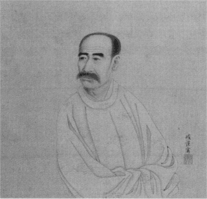

鷲津毅堂肖像（部分） 西田春耕／筆
『
下谷叢話』ハ
初下谷のはなしト題シテ大正
甲子ノ初春ヨリ
初稿ノ前半ヲ月刊ノ一雑誌ニ連載シタリシヲ同年ノ冬
改竄スルニ当リテ
斯クハ改題セシナリ。大正十四年
乙丑ノ歳晩予
偶『
有隣舎ト
其学徒』ト題シタル新刊ノ書ヲソノ著者ヨリ恵贈セラレタリ。著者ハ
尾張国丹羽郡丹陽村ノ人石黒万逸郎氏トナス。余イマダ石黒氏ト
相識ラズ。
然レドモソノ書ニツイテ
窺フニ氏ハ尾張ノ人ニシテ久シク郷党ノ師ト仰ガルル篤学ノ士ナリ。石黒氏ノ近業ハソノ名ノ示スガ如ク
往昔郷閭ノ私塾ナリシ有隣舎ノ沿革ヲ調査シソレガ師弟ノ伝ヲ述ベタルモノニシテコレスナハチ拙稿『下谷叢話』ノ記述スル所トホボソノ事ヲ同ジクスルモノ
也。然レドモソノ考証
研覈ノ
如何ニ至ツテハ彼ノ
最詳確ニシテ我ノ甚シク
杜撰ナルヤ
固ヨリ日ヲ同ジクシテ語ルベキニ
非ラズ。
殊ニ有隣舎所在ノ地ノ風土人物ニ関スルヤ予ハイマダカツテソノ地ニ
抵リシ事ナキヲ以テ
鄙著ノ遺脱
謬誤最甚シキモノアルガ如シ。予石黒氏ノ書ヲ読ミ
大ニ悟ル所アリ。三タビ稿ヲ改メントスルノ意図ナキニ非ラザリキ。然レドモ当初稿ヲ脱セシ時ヨリ既ニ半歳ヲ過ギ一時
蒐集シタリシ資料ノ今
蚤クモ座右ニ
留メザルモノマタ
鮮シトナサズ。コレガタメニ遂ニ加筆スル所ナクシテ
止ミヌ。今彼我ノ二書ヲ比較スルニ東武ノ詩人
大沼枕山ノ事ニ関シテハ彼ハ我ニ比シテヤヤ簡略ナリトイヘドモ中京ノ詩人
森春濤ノ事ニツキテハ
遥ニ
精緻ヲ極メタリ。マタ有隣舎ノ主人
鷲津氏ノ事ニツイテ見ルモ彼ハ
啻ニ
遺秉ヲ拾ツテ遺サザルノミナラズマタ郷老ノ口碑ニ採ル所多シ。然ルニ我ハ
纔ニ下谷ナル鷲津氏ノ家人ニ聞キシ所ヲ
識シタルニ過ギズ。古墳ノ
掃苔ニオケルヤマタ彼ハ専ラ尾陽所在ノモノニノミ
精シキコトアタカモ我ノ東都ニ限ラレシニ似タリトイフベシ。
此ニオイテカ彼ニナキ所ノモノ往々我ニアリテ我ニ
闕キシ所ノモノ彼
悉クコレヲ補ヘリ。有隣舎ノ沿革ヲ知ラント欲スルモノ拙著ト
併セテ石黒氏ノ近業ヲ読ミ
玉ハヾ始メテ遺憾ナキニ
庶幾カラン
歟。コレ鄙稿ヲ
篋底ニ探リ出シテ
新ニ
剞
氏ニ託スル
所以ナリトイフ。大正十五年
丙寅初春永井荷風識。
［＃改ページ］
わたくしが五歳になった年の暮にわたくしの弟
貞二郎が生れた。母はそれがためわたくしの養育を
暫く
下谷の祖母に托した。祖母の往々にして
初孫の愛に
溺れやすきは世にしばしば見るところである。祖母に育てられた
児の
俚諺にも三
文やすいと言われているのも無理ではない。わたくしは
小石川なる父母の家を離れて下谷なる祖母の家に行くことをいかに
嬉しく思ったであろう。当時の事は既に「下谷の家」と題した一小篇に記述した。雑誌『
三田文学』の
初て刊行せられた年の同誌に掲げんがため筆を
秉ったのであるから、これさえ早く既に十四、五年を過ぎている。
下谷の家は去年
癸亥九月の一日、東京市の大半を灰にした震後の火に
燬かれてしまった。わたくしが
茲に下谷叢話と題して下谷の家の旧事を記述しようと思立ったのは、これによって
聊災禍の悲しみを慰めようとするの意に
他ならない。
下谷の家はわたくしの外祖父なる
毅堂鷲津先生が明治四年の春ここに
居を
卜せられてより五十有二年にして
烏有となった。その日下谷の家にはわたくしの伯父母とやがてその
後を
嗣ぐべきわたくしの弟貞二郎とその妻と児女三人とが住んでいた。幸にして老幼一家皆
恙なく、
相扶けて難を上野公園に避けたのである。
下谷の家の旧主人鷲津毅堂は江戸時代の
末造から明治の初年にわたって世に知られた儒者である。
向島白鬚神社の境内に毅堂の姓名を不朽ならしめんがため、その事蹟と家系とを記した石碑が今なお倒れずに立っている。鷲津氏の家は世々
尾張国丹羽郡丹羽村の
郷士であった。
三島中洲が撰した石碑の文を見るに、「系ハ
県主稲万侶ニ
出ヅ。稲万侶ノ
後裔二郎
左衛門尉直光知多郡鷲津ノ
地頭ト
為ル。
因テ氏トス。数世ノ孫甚左衛門
諱繁光
徙ツテ今ノ
邑ニ居ル。コレ君ガ九世ノ祖タリ。」と言ってある。
『尾張名所
図会』後篇巻の七丹羽郡のくだりには、「当村に鷲津氏なる人あり。もと
美濃国の太守
土岐美濃守
頼芸の末葉なり。
天文十一年斎藤氏に侵されこの地に来り
蟄す。それより数代を経て
寛政年間の主を幽林といひ博学多材にして門生多く一時に名をなせり。」としてある。
下谷の鷲津家に蔵せらるる系図について見るに、鷲津氏は丹羽県主を姓とし家の紋は
六角内輪違とまた
桔梗とを用いる。丹羽郡
爾波神社及び中島郡太神社の神体なる
仲臣子上命をその始祖となし、子孫連綿として累世丹羽郡の領司または大領となった。その始めて鷲津氏を以て姓となしたのは
清和天皇
貞観五年八月大領司に補した
好蔭なるものより三世の孫
俊行というものからであるらしい。俊行より五世にして鷲津
権太夫綱俊なるものが
治承四年に関東の軍に参加した。権太夫の長男太郎
長俊と次子次郎
長世とは
承久の乱に京方の供をなして
討死し、三子四郎
兵衛尉宗俊は同じ合戦に関東方に
加った。鷲津次郎長世より
凡十三世を経て、鷲津
九蔵宗範なるものが
天正十三年八月
越中の国の合戦に
前田利家に従い深手を
蒙り、後に
志津ヶ岳の戦に手柄をなした。九蔵宗範の後嗣を鷲津長右衛門
光敏という。光敏の後に同じく長右衛門光敏と名付けられたものが二代つづいて、その次男に名を幸八、
諱を応と称するものがある。『尾張名所図会』に言う所の博学多材の学者鷲津幽林は
即この幸八である。わたくしの見た鷲津氏系譜は
何の時
何人の作ったものかを
詳にしない。三島中洲の撰した碑文と『尾張名所図会』の記事及び鷲津氏系譜の三種とを比較するに各異同がある。しかし
武弁の家から読書人を出したのは幽林応に始ったことは三者の言うところ皆同じである。
鷲津幽林の生涯はその三男松隠の撰んだ行状によってほぼ
窺い知ることができる。行状に曰く、「先生ハ尾人ナリ。幼ニシテ学ヲ好ミ精力人ニ絶ス。年十三、業ヲ
佩蘭先生ニ受ク。年二十二、京ニ
適キ丹丘梅竜両先生ノ門ニ遊ブ。常ニ先生ニ代ツテ経ヲ講ジ業ヲ授ク。
諄諄トシテ
倦マズ。弟子
相イツテ曰ク明鏡ハ照シテ疲レズ清流ハ風ニ
攘レズトハ
鷲子ノ
謂カト。
頃之ニシテ妙法院親王ノ召ニ応ジテ
侍読トナル。王ソノ才ヲ愛シ
寵賜年アリ。後親ノ病メルヲ以テ官ヲ辞シテ郷ニ
還ル。家産薄劣、加フルニ病患ヲ以テス。供養万出、以テソノ力ヲ尽スモ参価ナホ償フコト
能ハズ。先生
旁ラ
方技ニ通ズ。
是ニオイテ卒然トシテ医ニ
寓ス。尾公ノ愛姫病メリ。先生ヲシテ
診セシムルニ一劑ニシテ
癒ユ。コレヨリ（治ヲ）請フ者日ニ多シ。居ルコト二、三年
頗三径ノ資ヲ得タリ。
偶唐人ガ僧院ノ詩ヲ読ミ
帯雪松枝掛薜蘿トイフニ至ツテ
浩然トシテ山林ノ志アリ。
乃チ都城ヲ距ルコト五、六里、丹羽ノ里ニ就イテ荘一区ヲ買フ。地ヲ
遍ツテ松ヲ
種ヱ、亭ヲソノ中ニ築キ以テ
歌哭ノ地トナス。
扁シテ万松亭トイフ。亭中ニ棋
一
、書千巻ヲ蔵ス。以テ日ヲ消スルノ具ニ供ス。尾濃ノ間騒人
緇流ソノ高風ヲ慕ヒ遊ブ者常ニ数十人。経ヲ抱ヘ策ヲ
夾ミ益ヲ請フ者マタ日ニ
麕リ至ル。居ルコト数年
会尾公学校ヲ起シ以テ賢者ヲ招ク。儒員某ソノ能ヲ
嫉ム者アリ。悪言日ニ日ニ至ル。時ニ丹丘老師病メリ。先生
乃コレヲ省スルニ託シ避ケテ京ニ
適ク。実ニ
天明丙午（？）夏四月ナリ。老師卒ス。貧ニシテ
棺槨ノ資ナシ。先生乃
 中
中ノ装ヲ傾ケ
匍匐シテコレヲ救ヒソノ家ヲ処分ス。
撫※［＃「貝＋血」、U+8CC9、15-3］スルコトマタ甚厚シ。ケダシ
薬餌埋葬ノ費一ツニ先生ニ
委
ス。衆
相イツテ曰ク丹丘ノ門ニハ人アリト。聖護院親王
固ヨリソノ名ヲ聞ケリ。召シテ師トナス。先生ノ王門ニ遊ブヤ爵禄俸銭ハ辞シテ受ケズ。先生
適脚気ヲ病ム。勢
甚危篤ナリ。先生男典ニイツテ曰ク墳墓ノ異郷ニアルハ子孫ノ累ナリ。ワレ病ヲ
輿シテ帰ラント。先生遂ニ病ヲ尾ノ丹羽ノ里ニ養フ。寛政
戊午ノ冬十月十七日家ニ終ル。年ヲ受クルコト七十有三。同月二十日
日待塚ノ松林ノ中ニ葬ル。墳ハ高四尺
窃ニ
馬鬣封ニ擬ス。ケダシ先生
預メ葬地ヲ
卜セシトイフ。遠近会葬スルモノ百ヲ以テ数フ。先生
玩好御セズ。飲酒
嗜マズ。
尤声色ヲ遠ザク。人ノ
妓妾ヲ蓄フルヲ
視ルモナホコレニ
唾セント欲ス。先生老荘ヲ好ミ兼テ禅理ニ通ズ。教授ノ暇香ヲ
焚キテ静坐シ寝食
殆忘ル。玄冬和空皆方外ノ
侶ナリ。先生射ヲ善クシ、四矢反セズトイヘドモイマダカツテ

ヲ出デズ。ケダシ術ヲ原芝助ニ受ク。尾ノ竹林家ナリ。先生京ヨリ帰ルノ後
恠譚ヲ好ム。客ノ至リテ言ノ時事ニ及ブモノアレバ
則恠譚以テソノ端ヲ折ル。先生名ハ応、
字ハ子順、一ノ字ハ子雲、号シテ幽林トイフ。鷲津ハソノ族ナリ。ソノ世系ノ如キハ
野乗ニ詳ナリ。母
妊ムコト十三月ニシテ産ム。尾公ノ家臣原氏ノ女ヲ
娶リ四男一女ヲ生ム。曰ク典。吉。混。茂。女ハ先ニ死ス。典ト茂トハ今
征夷府ニ
事フ。不肖ノ男混謹ンデ状シ、言ヲ四方ノ君子ニ
乞フ。」
この行状は文化十一年の頃幽林の長子
竹渓典と三子
松隠混との二人が亡父の詩稿を
編輯し、『幽林先生遺稿』と題して四方の君子に題言批評を乞わんとした時これをつくったものであろう。わたくしは『幽林先生遺稿』を尾張丹羽郡の鷲津家から借り得てこれを閲読した。行状の中には年号干支に天明
丙辰となしたるが如き伝写の誤がある。
（丙辰は丙午ならずば甲辰の誤であろう）また浅学寡聞のわたくしには読み得ざる所もある。
鷲津幽林は寛政十年十月十七日享年七十三で
没した。さればその生れたのは
享保十一年丙午である。即
新井白石の没した翌年にして
安達清河、
立松東蒙の生れた年である。（
茲に一言して置く。わたくしはこの拙著中人物の生死を記するに大抵没あるいは終の語を以てし
縉紳公侯の死にも
薨といい卒という語を用いないようにしている。）さて鷲津幽林は天明三年名古屋の城主徳川
宗睦の再興した明倫堂の教官に挙げられたが
儕輩の嫉みを受けたので、その旧師
芥川丹丘の病を問うことに托して郷国を去ったという。
然るに曾孫鷲津毅堂の言うところについて見れば、幽林の藩校を去ったのはその督学
細井平洲と学術を論じて合わなかったがためで、幽林は「雪ヲ帯ルノ松枝薜蘿ヲ掛ク」の句を学館の壁に題して去ったという。わたくしはそのいずれに従うべきかを知らない。細井平洲は折衷の学派を興した学者である。然るに鷲津幽林は老荘の学を好み禅理に通じていたというので、二家各その好む所を異にしている。わたくしは高瀬代二郎氏の著した細井平洲の詳伝と文部省
編纂の『日本教育史資料』等を検したが、尾張明倫堂の教員の中に幽林鷲津幸八の名を見なかった。
『幽林先生遺稿』に「天明
乙巳ノ春張州ノ諸友ニ留別ス。」と題する五言律詩一首がある。詩に曰く「江亭春寂寂。山路樹重重。対酒交歓薄。看花別恨濃。依遅辞故国。迢逓向遥峰。京洛旧朋友。恐驚憔悴容。」
〔江亭春寂寂トシテ／山路樹重重タリ／酒ニ対ヒテ交ハリノ歓ビ薄ク／花ヲ看テ別レノ恨ミ濃シ／依遅トシテ故国ヲ辞シ／迢逓トシテ遥峰ニ向フ／京洛ノ旧朋友／恐ラクハ憔悴ノ容ニ驚カン〕天明五年乙巳には幽林は齢既に六十に達している。再び
京師に滞留して聖護院法親王に仕えた時は「
近衛街」に
卜居した。
『遺稿』の中に「
庚戌家ニ
還ル。」と題した七律がある。これに由って
観れば幽林が脚気を病んでその男典を伴い丹羽村の万松亭に還ったのは寛政二年庚戌の年でその齢六十五の時である。
幽林に四男一女のあったことは既に行状に見えている。長男名は典、字は伯経、通称は
次右衛門、竹渓と号した。その没年より
溯算すれば
宝暦十二年に生れた。次子名は吉についてはわたくしは知る所がない。三男名は混、字は子泉、松隠と号した。幽林が晩年の通称九蔵を
襲ぎ丹羽村の家を継いだ。その生れた年月は詳でない。四男名は茂、後に基祐、字は某。通称次郎右衛門、号を杉井という。その没した年より考うれば寛政六年の生れである。
長男典は家を継がず江戸に出で幕府
御広敷添番衆大沼又吉なるものの養子となった。これは下谷の鷲津家所蔵の系譜に見る所であるが、当時の『
武鑑』には大沼又吉の名は記載せられていないようである。
大沼氏を冒した典は竹渓と号して化政の頃江戸の詩壇に名を知られた詩人である。そしてまた今日でもなお世人の記憶している大沼
枕山は竹渓の男である。
文化五、六年の頃
稲毛屋山が当時知名の儒者文人の詩を採って『
采風集』三巻を編成した。その中に
大田南畝の作と並べて竹渓の詩が載せられている。また菊池
桐孫の『五山堂詩話』巻の九には「竹渓、源ノ典、字ハ伯経、尾張ノ人ナリ。今幕府ニ給仕ス。
傲骨崚
、詩ヲ論ズルコト
尤精厳ナリ。人多ク
指摘ヲ
蒙ル。余騒壇ニ相逢フゴトニ隠トシテ一敵国ノ如シ。」と言っている。
わたくしは鷲津氏の家系を討究して、偶然大沼竹渓父子が鷲津氏の族人であることを知り、
大に興味を覚え、
先その墳墓をさぐり更に大沼氏の遺族を尋ねてこれを訪問した。
わたくしはわが外祖父鷲津毅堂のことを述るに先立って、しばらく大沼竹渓のことを語るであろう。竹渓は晩年下谷
御徒町に住した。その子枕山は
仲御徒町に詩社を開き、鷲津毅堂もまたその
近隣に
帷を下して生徒を教えた。わたくしがこの
草稿を下谷叢話と名づけた
所以である。
大沼竹渓の墳墓は芝区
三田台裏町なる
法華宗妙荘山薬王寺の
塋域にある。
今茲甲子の歳八月のある日、わたくしは
魚籃坂を登り、電車の
伊皿子停留場から左へ折れる静な裏通に薬王寺をたずねた。寺の敷地は門よりも低くなっていて、
石磴を下ること五、六段。掃除のよく行きとどいている門内には
百日紅の花のなお咲き残っているのを見た。墓地は本堂の後から更に石磴を下ってまた一段低いところにある。この三段になった土地の高低は境内におのずからなる風趣をつくっている。
住職は白頭
赭顔、
体躯肥大の人で年頃は五十あまり、客に応接すること
甚軽快にしてまた
頗懇切である。炎暑の日中にもかかわらずわたくしの問うごとに幾度か座を立って過去帳を調べ、また
躬らわたくしを墓地に案内してくれた。
住職は言う。「わたくしも枕山先生を知っております。まだ先代の住職がおりました時分のことですが、本家の大沼さんの後をついだ人だそうで、その人が石屋をつれて来て先祖の墓石を
一個弐円ずつに売ると申されるので、先代の住職はその事を下谷の枕山先生のところへ知らせました。すると枕山先生は早速車で寺へ
御出でになりまして、とんでもない事だ。決してそんな事をさせてはならんと頼んで帰られましたが、その時先生は
中風か何かと見えて歩くにもよほど難儀のように見えました。」
住職は語りながら石段を下り墓地の右手の隅に道を挟んで三基ずつ相対して立っている六基の古墳を指して、「これが皆大沼家の墓です。久しく無縁になっていますが、わたくしの代になってから倒れているのもこの通り皆建直したのです。枕山先生のお墓はここにはありません。どういう訳でわきの寺へ持って行かれたのでしょう。
菩提所が別々になっていると御参りをなさる方も定めて御不便でしょう。」
住職はわたくしが枕山の子孫ででもあるかのように問掛けるので、わたくしは人から聞伝えたはなしをそのままに、「枕山先生の葬式は万事門下の人たちが
取仕切ってやったのだという話です。谷中の
瑞輪寺へ葬ったのはお寺が近かったからだというはなしです。」
住職は
頷付いて折から
手桶に
樒と線香とを持って来た寺男に掃除すべき墓石を教え示して静に立ち去った。わたくしは墓地一面に鳴きしきる
蝉の声を聞きながら
徐に六基の古墳を展した。
小径を挟んで相対した三基の墓の左端にあるものが竹渓の墓である。仁譲院徳翁日照竹渓居士。側面に刻した墓誌に「先生姓藤原、名典、字伯経、一名守諸、号竹渓、称次右衛門、尾張人、給仕幕府、中興大沼氏、晩
致仕、以文政十年
丁亥十二月二十四日没、享年六十六。孝子基祐建。」
〔先生姓ハ藤原、名ハ典、字ハ伯経、一名ハ守諸、号ハ竹渓、称ハ次右衛門、尾張ノ人、幕府ニ給仕シ、大沼氏ヲ中興ス、晩ニ致仕シ、文政十年丁亥十二月二十四日没ス、享年六十六。孝子基祐建ツ。〕としてある。孝子基祐とは鷲津松隠の末弟次郎右衛門杉井のことで長兄竹渓の準養子となった。その墓には杉井院無夢日覚居士の
法諡を刻し側面に「居士諱基祐、称次郎右衛門、杉井其号、姓大沼、襲世禄仕幕府、嘉永元年致仕、問禅於真浄和尚、削髪法名曰無夢、旁好俳歌、頗臻其妙、継芭蕉翁統、受其庵号、安政五年十一月十七日没、年七十五。」
〔居士諱ハ基祐、称ハ次郎右衛門、杉井ハ其ノ号、姓ハ大沼、襲世シテ幕府ニ禄仕シ、嘉永元年致仕ス、禅ヲ真浄和尚ニ問ヒ、削髪ノ法名ハ無夢ト曰フ、旁ラ俳歌ヲ好ミ、頗ル其ノ妙ニ臻ル、芭蕉翁ノ統ヲ継ギ、其ノ庵号ヲ受ク、安政五年十一月十七日没ス、年七十五。〕また他の側面には「
鳰なくやから崎の松志賀の花。
槐陰。」となした発句が刻してある。
わたくしは竹渓を養ってその家をつがしめた大沼氏の何人なるかを知りたいと思って、墓石と過去帳とを調べた。しかし
徒に幾多の法名と
忌辰とを見たのみで遂に一人として俗名の明なるものを見ることができなかった。長男に生れた竹渓は何故に鷲津氏を継がずして他姓を冒したのであろう。これは遂に知る道がない。今日竹渓の生涯を
窺知るにはその子枕山の後年に
上木した遺稿二巻があるばかりである。
『竹渓遺稿』に「
庚申ノ春竹渓書院ノ壁ニ題ス。」となした七言律詩がある。「竹渓書院竹渓傍。又値新年此挙觴。魏闕只言聊玩世。并州豈料竟為郷。官情一片春氷薄。旅思千重烟柳長。江戸東風三十度。空吹愁夢到南張。」
〔竹渓書院竹渓ノ傍リ／又新年ニ値ヒテ此ニ觴ヲ挙グ／魏闕只言フ聊カ世ヲ玩ブト／并州豈料ランヤ竟ニ郷ト為ルヲ／官情一片春氷薄シ／旅思千重烟柳長シ／江戸東風三十度／空シク吹ク愁夢南張ニ到ルヲ〕この詩は竹渓の生涯を窺うに最必要のものである。「庚申春」は寛政十二年正月である。宝暦十二年に生れたはずの竹渓は年三十九。その父鷲津幽林の尾張に没してから三年の後である。律詩の
前聯「魏闕只言聊玩世。」
〔魏闕只言フ聊カ世ヲ玩ブト〕またその後聯「官情一片春氷薄。」
〔官情一片春氷薄シ〕の二句は薄禄の幕臣であった事を語っている。転結に「江戸東風三十度。空吹愁夢到南張。」
〔江戸東風三十度／空シク吹ク愁夢南張ニ到ルヲ〕というのを字義の如くに解すれば寛政十二年より三十年前に竹渓は尾張の国を去って江戸に来った事になる。然りとすれば竹渓は
纔に十歳の時四十六歳になる父幽林の
膝下を去ったわけである。
わたくしはここに竹渓が寛政二、三年の頃には既に江戸にあったことを証することが出来る。それは竹渓が文化十三年細井徳昌の
嚶鳴館至日の
詩筵に出席した時の吟作に依ってである。作の題言に「嚶鳴館至日ノ宴ハ宝暦
壬申（二年）ヨリ文化丙子
（十三年）ニ至ルマデ
凡六十五年也。ソノ間累世二主、遷館三所、連綿トシテ絶エズ。カツテ虚歳ナシ。余モマタコノ会ニ参スルコト二十有七度、世ハ
殊ナリ事ハ異ル。悲喜
交モ集ル。
乃チ筆ヲ
援イテ詠ヲナス。辞ノ至ル所ヲ知ラザル也。」
これに由って観れば竹渓は文化十三年の冬至に、例年の如く嚶鳴館に開かれた詩筵に
赴き、その既に二十七回目に及んだことを知って大に感慨を催したのである。文化十三年より二十七年前は寛政二年にして竹渓の
年歯は二十九歳になる。
嚶鳴館は細井平洲の
躬ら家塾に命じた名である。平洲は尾張の人。宝暦紀元
辛未の年二十四歳にして始て江戸に来り芝三島町に家塾を開いたが宝暦十年二月の大火に
遭い、身を以て免れ日本橋
浜町山伏井戸の近くに移居した。その後天明二年に至って尾州侯に
聘せられその
上屋舗内なる
市ヶ谷合羽坂に住宅を賜った。竹渓が遷館三所といった
所以である。（しかし千葉
子玄の『
芸閣先生文集』
（三巻）を見るに平洲は
向柳原なる幕府天文台の近くに住居していた事がある。）その「累世二主」というのは
享和元年六月二十九日に平洲が寿七十四歳で没し養子徳昌が家を継いで嚶鳴館の新主となった事を言ったのであろう。
竹渓はとにかくに年
少くして江戸に来ったがまた折々帰省して父幽林の安否を問うた。幽林の集に「男伯経尾陽ニ還ル。別後三日雨。」
〔男伯経尾陽ニ還ル。別後三日雨フル〕と題して、「東西千里問安廻。傷別老懐鬱不開。遥憐山駅雨淫日。蓑笠穿雲独往来。」
〔東西千里安ヲ問ヒテ廻ル／別レヲ傷ミテ老懐鬱トシテ開カズ／遥カニ憐レム山駅雨淫ノ日／蓑笠雲ヲ穿チテ独リ往来スルヲ〕の絶句がある。
鷲津松隠のつくった幽林の行状にも竹渓は父の
京師にあって脚気を病んだ時その傍に侍していたことが記されている。
竹渓は文化年間弟松隠をして亡父幽林の詩稿を編輯せしめ、これを
菊池五山に示して批評を請うた。五山は幽林父子の略伝とその作二、三首を採ってこれを『五山堂詩話』の第九巻中に掲げた。当時五山の詩話中にその作を採録せられることは非常なる名誉であったと思われる。松隠は兄竹渓から送られた手簡と『五山堂詩話』とを受取り、これに答るに次の如き漢文の
尺牘を以てした。
「混再拝シテ
白ス。書
並ニ詩話ヲ
辱ス。厳粛ノ候尊体福履、家ヲ挙ゲテ
慰浣セリ。
俯シテ賜フ所ノ詩話ヲ読ム。巻ヲ開イテ
咫尺ニシテ
飢涎忽チ流ル。直ニ賢兄ノ伝ニ至ルヤ手ノ舞ヒ足ノ蹈ムコト
跛者ノ
忽ニシテ立ツガ如シ。凡ソ人ノ子トナルヤ父母ヲ顕スヲ孝ノ終トス。賢兄心ニコノ義ヲ主トシサキニ先人ノ遺稿中ニ就テ曾撰ノ二首ト自ラ賦スルモノトヲ合セテ天下ノ一大壇場ニ上シ以テ不朽ニ垂レシム。双竜ノ紫気
殆ド斗間ニ
逼ル。
箕裘ノ業誰カソノ盛ナルヲ知ラザランヤ。謹ンデ命ヲ受ケ
盥嗽跪拝シテ霊前ニ
捧グ。僕ヤ惰夫ニシテ徳行ヲ修メ立テヽ以テ令聞ヲ祖考ニ加フルコト
能ハズ。筋
駑シ肉緩ミ
飽煖ヲノミコレ求ム。徒ニ遺産ヲ費シ安然トシテ妻子ヲ
畜フ。文子ノイハユル孝ハ妻子ニ衰フモノトハ僕ノ
謂歟。多罪。野君久シク病ニ伏シ書ヲ賢兄ニ
修ルコト能ハズ。僕ニ属シテ
懇ニ謝セシム。
頓首死罪。」
わたくしはこの尺牘を鷲津松隠が
手沢の詩文稿について見た。詩文稿は尾張丹羽村なる鷲津家の当主順光翁の蔵する所である。
大沼竹渓の始めて幕府に出仕した年代とまたその致仕した時とは何年頃であったのであろう。これを知るには年々の『武鑑』を見るより外に道がない。然るにわたくしは多く『武鑑』を持っていない。たまたま文化九年、文化十三年及び文政元年、同六年の『武鑑』について、大沼次右衛門の名を西丸附御広敷添番衆の中に見出したのみである。御広敷とは大奥に出仕する役人の
詰所をいうので、役人には御広敷御用人を主席にして次に御用達、番頭、番衆等がある。
凡て
奥向の事務及奥女中の取締を
掌る。添番衆は極めて軽い身分である。大沼次右衛門は西丸御広敷添番衆を勤め高百俵を給せられ
麹町三丁目に住した。但しその遺稿を見るに五番町に住していたこともある。
わたくしは既に寛政十二年庚申の作を引いて竹渓が文化より以前
夙く禄を
食んでいたことを記した。某年「歳晩書懐。」
〔歳晩懐ヒヲ書ス〕の作を見るに、「吾年越五十。遊魂也有涯。頭顱已可知。
（略）学隠叡麓家。杜門息交遊。養拙避浮華。」
〔吾年五十ヲ越ス／遊魂モ也涯リ有ラン／頭顱已ニ知ル可シ／（略）隠ヲ学ブ叡麓ノ家／門ヲ杜ヂテ交遊ヲ息メ／拙ヲ養ヒテ浮華ヲ避ク〕といっている。この作を見るに、竹渓は文化の末年その齢五十を越えた時には既に致仕して上野に近い某処に
隠棲していたように思われる。然るに年々の『武鑑』は文政六年に至っても竹渓の住所を麹町三丁目となしている。『武鑑』は竹渓が住所の変更をそのまま改正せずに置いたものであろう。
わたくしは竹渓が晩年移居した地を下谷御徒町と定めている。それは大沼枕山の遺族を訪問した時、わたくしは特に許されて枕山が誕生の時の
臍の
緒書を見た。臍の緒書には「文政元
戊寅年三月十九日
暁六ツ時於下谷御徒町拝領屋敷誕生、父次右衛門儀
小笠原弾正組之節」
〔文政元戊寅ノ年三月十九日暁六ツ時下谷御徒町拝領屋敷ニ於テ誕生ス、父次右衛門ノ儀小笠原弾正組ノ節ナリ〕と御家流の筆致で書いてあったが故である。拝領
屋舗は伊予の国大洲の藩主加藤家
上邸の門前にあったという話である。
『竹渓遺稿』に「移居ノ後人ニ示ス。」と題して、「家縁易了一茅廬。五畝於吾尚有余。老脚只貪平地穏。下山近水又移居。」
〔家縁易ヘ了ル一茅廬／五畝吾ニ於テ尚余リ有リ／老脚只貪ル平地ノ穏ヤカナルヲ／山ヲ下リ水ニ近ヅカント又移居ス〕の絶句がある。麹町の山の手から下谷御徒町に移った時の作と見れば、老の歩みに坂のない平地をよろこぶ情景言い得て最も軽妙である。「下山近水又移居。」
〔山ヲ下リ水ニ近ヅカント又移居ス〕の七字おのずから
不忍池の近きを思わしめる。
大沼竹渓が江戸の詩壇におけるその名声と、それが交遊の範囲とはこれをその詩賦について見ればおのずから詳である。
竹渓が
柴野栗山と交のあったことは「十月既望栗山翁碧瓦堂。」
〔十月既望栗山翁ノ碧瓦堂ニテ〕と題した七律によって知られる。
古賀精里が
牛込見附内の賜邸復原楼を題となすものは遺稿中三首の多きに及んでいる。その一に曰く「三畝竹陰唯一家。書窓恰好話烟霞。蓮峰背日如無雪。梅塢籠烟似有花。室絶繊塵占虚白。詩依古調去浮華。羨君来往茶渓路。朝命軽舟暮小車。」
〔三畝ノ竹陰唯一家／書窓恰モ好シ烟霞ヲ話スルニ／蓮峰日ヲ背ニシテ雪無キガ如ク／梅塢烟ヲ籠メテ花有ルガ似シ／室ハ繊塵ヲ絶チテ虚白占メ／詩ハ古調ニ依リテ浮華ヲ去ル／羨ヤム君ガ茶渓ノ路ヲ来往スルヲ／朝ニ軽舟ヲ命ジ暮ニハ小車〕この転結の二句はわたくしをして古賀精里が牛込見附とお茶の水との間を往復した光景を想像せしめる。復原楼は現時麹町区富士見町陸軍軍医学校のある処だという。
鴎外先生が『
伊沢蘭軒』の伝に詳である。
竹渓は精里の男
 庵
庵の
舅に当る鈴木白藤とも
相識っていた。「清風館集。是日会者空空、白藤、南畝諸子凡七人。」
〔清風館ノ集ヒ。是ノ日会スル者ハ空空、白藤、南畝ノ諸子凡ソ七人ナリ。〕と題する絶句がある。
空空は
田安家の
近習番後に御広敷御用人となった
児玉喜太郎である。
心越禅師の伝えた七絃琴の名手であったという。白藤は鈴木氏、名は成恭、通称は岩次郎。文化九年十一月より文政四年まで
書物奉行を勤めた。白藤が大田南畝と友として
善かったことは南畝が随筆『
一話一言』に散見している。
斎藤拙堂がその壮時に竹渓を知っていたのは古賀精里を介してのことであろう。拙堂は精里とその男
庵とについて業を受けたが故である。
天保のはじめ竹渓の遺子枕山がその集『枕山集』の序を拙堂に請うた時、拙堂は「昌卿ノ考竹渓先生ハ幕府ニ仕フ。余カツテコレヲ
識レリ。
 奇
奇歴落号シテ奇士ト
為ス。昌卿ハケダシコレニ
肖タリ。先生ハ博学ニシテ詩ヲ善クス。好ンデ辺事ヲ
研覈シ以テ
世用ヲ
希ヒシガソノ才ヲ
畢ラズシテ没セリ。」となした。この序に由って観るに竹渓は
慷慨の士であった。
平生天下有用の人物たらんことを欲していたが、志を得る機会なく
碌々たる小吏を以て身を終った。竹渓が「好んで辺事を研覈した」と拙堂の言っているのは、思うに
蝦夷地の守備と開拓の事についてであろう。
竹渓の没した文政十年以前にあって当時の人心を
恟々たらしめた辺事の
重なるものは文化三年九月露人の蝦夷を
寇した事と、文化五年八月英艦の長崎を騒した事件とである。これより先寛政十年に
近藤重蔵は北蝦夷の探険を畢り、享和元年に
間宮林蔵は
唐太より満洲の地を
跋渉して紀行を著した。幕府が北辺守備のために
松前志摩守の領地を収めて奉行を置いたのは文化四年である。
此の如くにして幕府は遂に文政八年に至り異国船
打払の令を沿海の諸藩に伝えたが、その時にはかつて
奇歴落奇士と号せられた竹渓も年既に六十四歳となり、
東叡山南の草堂に隠退して「時事懶聞非我分。」
〔時事ハ聞クニ懶ク我ガ分ニ非ズ〕といい、また「門外紛紛属少年。」
〔門外ノ紛紛タルハ少年ニ属ス〕というが如き歎声を漏すに過ぎなかった。
竹渓が細井平洲の嚶鳴館に出入したことは既にこれを述べた。遺稿の中に泉豊洲、
倉成竜渚、
頼杏坪らと
 酬
酬の作あるは重に嚶鳴館の関係からであろう。
大窪詩仏、菊池五山、
館柳湾の詩社に参した当時の詩人は大概竹渓の相識であった。煩を避けて一々その名を挙げない。
文政九年正月竹渓は六十五歳の春を迎えた。その没する前の年である。元旦に大雨が降りそそいだので、竹渓は家に
留り、座右の
手函に
蔵めた詩草を取出してこれを
改刪しやや意に満ちたもの
凡一百首を
択み、書斎の床の間に壇を設けて
陶淵明の集と、自選の詩とを祭った。この時に賦した祭詩の詩の引は竹渓が平生の詩論を
窺知らしむるものである。それ故
茲にこれを掲げる。
「余ノ詩ニオケルヤ
固ヨリ遊戯ノミ。人生ハ寄ルガ如キナリ。唯意ニ適スルヲ貴ブ。
※［＃「目＋嬪のつくり」、U+77C9、32-13］ニ
傚ヒ臭ヲ
逐フニ何ゾ必シモ
抵死センヤ。ソレ詩ノ道タルヤ切実ヲ美ト為ス。ケダシ少陵ハ忠憤ナレドモ
頗婆心ニ近シ。
青蓮ノ仙風実ハ
虚誕ニ
渉ル。
韓蘇ハ
鉤棘、
白氏ハ浅俗ナリ。妙ハ
則妙ナリトイヘドモヤヤ、清雅ナラズ。アヽ詩聖詩仙、詩家詩伯、敬スベク
遠クベシ。固ヨリワガ選ニ非ズ。然レバ則余ノコノ道ニオケルヤソレ誰ニカ適従セン。ソレ
陶韋ヲ祖述シ
王劉ヲ憲章シテ枯淡ヲ骨トナシ
菁華ヲ肉トナシソノ志ヲ言ヒ以テソノ言ヲ永クスレバ則吟咏
三昧モマタ余師アラン。丙戌ノ元旦大雨

グガ如ク木
氷花ヲ成ス。
遊杖ヲ壁ニ掛ク。
清閑消シガタシ。
乃チ
巾箱ヲ開キ
客歳ノ詩ヲ閲シテ煩ヲ
芟リ冗ヲ除キテ一百首ヲ得タリ。
窃ニ浪仙ニ擬シ詩ヲ祭リテ労ニ報フ。乃チ室ノ奥ニ就イテ壇ヲ設ケ位ヲ列シ
先ヅ陶集ヲ
展キ配スルニ悪詩ヲ以テス。菜根一把、
茅柴一斗、以テソノ神ヲ祭ルトイフ。」また祭詩の詩は「閑人閑事業。元旦祭新詩。天地感清絶。木氷粲満枝。」
〔閑人閑事業／元旦新詩ヲ祭ル／天地清絶ニ感ジ／木氷粲トシテ枝ニ満ツ〕の二十字である。
文政九年丙戌の元旦に雨の
雫が樹の枝に凝結して花の如くに見えた。世人のこれを
看て奇観となした事は『五山堂詩話』にも記載せられている。『詩話』に曰く「今歳丙戌ノ元旦始メテ木氷ヲ見タリ。即
麟経ニ載スル所ノ雨木氷ナル者ナリ。アマネク
耆旧ニ
詢フニ皆曰クイマダ経テ見ザル所ナリト。実ニ奇観ナリ。詩仏ノ詩アリ。極メテソノ状ヲ
殫ス。凝不成花異※
［＃「雨かんむり／（「鶩」の「鳥」に代えて「目」）」、U+973F、34-1］淞。著来物物各異容。柳条脆滑蓴油膩。松葉晶瑩蛛網封。氷柱四檐垂繖角。真珠万点結裘茸。詩人何管休徴事。奇景看驚至老逢。
〔凝リテ花ヲ成サザルハ※［＃「雨かんむり／（「鶩」の「鳥」に代えて「目」）」、U+973F、34-2］淞ニ異ナリ／著来シテ物物各オノ容ヲ異ニス／柳条ハ脆滑ニシテ蓴油ノゴトク膩ラカナリ／松葉ハ晶瑩ニシテ蛛網ノゴトク封ヅ／氷柱四檐繖角ニ垂レ／真珠万点裘茸ニ結ブ／詩人何ゾ管セン休徴ノ事／奇景看ノアタリニ驚ク老イニ至リテ逢フトハ〕按ズルニ
曾南豊ノ集中ニ
※淞［＃「雨かんむり／（「鶩」の「鳥」に代えて「目」）」、U+973F、34-5］ノ詩アリ。注ニ寒甚シク夜気霧ノ如ク木上ニ凝ル。
旦ニ起キテコレヲ
視レバ雪ノ如シ。斉人コレヲ※
［＃「雨かんむり／（「鶩」の「鳥」に代えて「目」）」、U+973F、34-7］淞トイフ。詩仏ノコノ作アルイハ南豊ノ詩ト
駢伝スベキ也。」
竹渓は文政九年の春も暮れて
楝の花の咲きかけた頃病に
臥した。「病中児ニ示ス。」という七律の作がある。しかし病は軽くして程なく
癒えたのであろう。竹渓は二、三の詩友と舟を
隅田川に
泛べて残花を賞し、また谷中にある
林述斎の
別墅をも訪うた。
林述斎は
林家八世の祭酒である。平生その身厳職にあるがため山水風月の間に放浪自適する暇がないので、都下に幾個所も別荘を築いて林泉に心を慰めたという。
佐藤一斎の撰んだ墓誌に、「ソノ
剏ク所ノ園林ハ方向位置自ラ一種ノ幽致アリ世好ト同ジカラズ。」と言ってある。述斎が造庭の趣味は世間一般と同じでなかった。石を置けば
必松を
栽うるというような
極りきった形式は述斎の
能く
忍得るものではなかったのであろう。「別墅ノ谷中ニアル者園ヲ賜春ト
名ク。多ク春花ヲ植ヱ、氷川ニアル者園ヲ
錫秋ト名ク。多ク
秋卉ヲ
※［＃「くさかんむり／執」、U+84FB、35-3］ウ。
而シテ石浜ニ
鴎
アリ。
溜池ニ八宜アリ。青山ニ聴松アリ。」と墓碑銘に言われている。
竹渓が林家の門に出入するの栄を得たのはいつの頃に始ったのか知るよしがない。しかし谷中の別業には既に度々招かれていたことは「初夏ノ二十三日林公ガ日暮ノ村荘ニ遊ブ。」七律の起句に「幾回卜日幾回違。」
〔幾回カ日ヲ卜シ幾回カ違フ〕の七字によって知られる。
殊更に春咲く花を多く栽培したという谷中の賜春園もその日（文政九年四月二十三日）には、大方の花は既に散尽して青葉ばかりとなり、
崖上から吹き来る風に
椶櫚の実はゆらめき、雨後の
地湿り乾きもやらぬ木立の茂みには
筍が伸びかけていた。
それから半月あまりを過ぎて、
蓮の巻葉もすっかり
舒び
拡がった五月の十六日、谷中の別園に再び林氏の
詩筵が開かれた。その日
招れた賓客は当時の列侯中博学を以て
推重せられた
冠山松平定常、
土岐八十郎、幕府の奥儒者
成島東岳の養子
稼堂、主人述斎の六男林復斎、佐藤一斎の門人
安積艮斎及び大沼竹渓その他合せて九人であった。この九人の中姓名の判明している人で最高齢であったのは竹渓である。次は松平冠山と林述斎。また最年少なのは成島稼堂であった。
林述斎が谷中別墅の光景は主人述斎が『
谷口樵唱』、および佐藤一斎が『
六閑堂記』などについて見ればほぼこれを窺知ることが出来る。『谷口樵唱』は述斎がこの別墅に遊ぶたびたび賦した絶句を収録したもので、その序詞に「文化戊辰重八」としてある。集中絶句の註に「コノ荘ハ薬師寺氏ナル者ノ
創メシモノナリ。イマダイクバクナラズシテ転ジテ杵築侯ノ別業トナル。後ニマタ豪商ノ有トナリ
棄テテ治メザルコト
殆四十年、今遂ニ我ニ帰ストイフ。」述斎は文化三、四年の頃この廃園を
購い
荊棘を伐り除いて林間に
屋宇を築き
名けて六閑堂と称した。六閑堂は甚質素にして
閑雅の趣があった。佐藤一斎の記に、「
黝堊ヲ
舎テ、
 埴
埴ヲ用ヒ
彫琢ヲ去ツテ
素樸ニ従フ。ソノ
清迥閑曠ノ趣、一ニ山人逸士ノ棲止スル所ニ類ス。」といっている。また別墅の眺望と園中の光景については、「園ノ西南

ニ
倚ツテコレヲ径ス。眺観
豁如タリ。
筑波二荒ノ諸峰コレヲ
襟帯ニ
攬ルベシ。
下ニ池アリ。
倒ニ雲天ヲ
涵シ、
※荷菰葦叢然［＃「くさかんむり／支」、U+82B0、36-13］トシテコレニ植ス。魚鳥マタ
碕沂ノ間ニ
相嬉ブ。池ノ南ハ密竹林ヲナシ、清流ソノ下ヲ
穿過ス。池ノ北ハ
稲畦蔬圃墻外ノ民田ト相接ス。園ハ
喬木多ク、
槎※竦樛［＃「木／卉」、U+67BF、37-1］、皆百年外ノ物タリ。而シテ堂独リ翼然トシテ池上ニ臨ム。」
この六閑堂には来遊者の心得として賓約なるものが掲げられてあった。わたくしは『好古雑誌』の記事からこれを左に転載する。
六閑堂賓約
一、こゝに来遊するは一日世塵を※［＃「月／羅」、U+268C7、37-6］脱して園林の幽趣をめづるなれば、たゞ風月を談じ詩歌を品するを専らとし時事を論議し人物を臧否するの類は無用たるべし。まして鄭狂淫褻の談はいふまでもなかるべし
一、来賓に希ふ所は興寄之古調、唐律あるいは国風、各その長所に従ひ一、二首帋片に留めらるべし、徒に風景に孤美して隻字もなく帰らるゝことあるべからず、但し俳句狂歌の類みだりに壁上に疥するは願ふ所にあらず
一、酒は釣詩鈎の意をもて三五盞用ゆるは可なり、多とも七盞を過ぐべからず、この数を越る飲徒は荘中に入るを許さず
一、詩歌の小集あらん時吟詠ならざるものは、金谷の罰を用ゆる時は※［＃「酉＋面」、U+4904、37-14］厭ふべし、姑く月川七椀の倍数を茶に換ふべし
一、物音は古楽器の外を禁ず、流俗に用ゆる所の器を携来り奏するものあらば饒舌の鶯速に飛振すべし、しかあらん後はその人を謝絶して再び到る事を許さず
一、射騎銃鉋の場あり来人の演習その心に任すべし、但し官禁の域たれば鳥とる事を許さじ、いはんや魚鳥の人に親しむ会心の境なるをや
一、落花墜葉の外すべて狼藉を禁ず、来遊騒客さあらんといふにはあらず、童僕には戒勅のとゞかぬ事主人も常にあれば他も推はかり思ふなり、大なる花枝を折りまた竹萌木萌を穿ち去の類戒め給はるべし
一、夏夜の烟戯は尤も厳禁なり、但し林間に黄葉を焼き霜旦雪夕柴火もて寒を防ぐは制外とす
六月十六日竹渓は再び松平冠山に随伴し、同じくその
眷遇を
蒙っていた人々と共に
佃島住吉神社の
祠官平岡氏の海楼に飲んだ。その時の作七言古詩の末句に「水波四囲似蜃楼。脱衣槃

曲欄下。蘋風颯颯六月秋。早涼於我千金重。」
〔水波四囲シテ蜃楼ノ似ク／脱衣槃ス曲欄ノ下／蘋風颯颯タリ六月ノ秋／早涼ハ我ニ於テ千金ノ重ミ〕と言っている。
蘆荻の中に
蘋花の点々たる佃島往昔の勝景が歴然として目に浮ぶ。
大沼竹渓が平生冠山老公の知遇を受けていた事は
西島坤斎の『慎夏漫筆』に
記されている。『漫筆』巻の一に、「冠山南谷ノ二公ハ士ヲ好ムニ名アリ。イハンヤ二公ハ学徳兼テ優レルヲヤ。故ヲ以テ
碩儒名流四方ヨリ
 集
集ス。文酒ノ会ゴトニ客ノ来ルヤ貴賤トナク門ニ留メラルヽナシ。
※劣［＃「言＋翦」、U+8B7E、39-5］余ノ如キモ辱知ノ末ニアリ。
翠軒、西野、竹渓ノ諸老常ニ席賓タリ。諸老
已ニ異物トナリ二公モマタ逝ケリ。
緑苔ハ閣ニ生ジ
芳塵ハ

ニ凝ル。アヽ。」としている。翠軒は水戸の儒者立原氏。西野は
市河寛斎の別号である。
ここにまた『慎夏漫筆』の著者が松平冠山と相並べて学徳兼備の名公となしている南谷とは何人であろう。南谷の名は『竹渓遺稿』の中にも散見している。その一は「南谷君晩香園招飲之韻ニ
ユ。」と題する五言古詩。その一は「南谷滝川君六十寿詩。」
〔南谷滝川君六十ノ寿詩〕となす七律である。わたくしは律詩の
頷聯に「曾入甲山求大薬。元遊水府浴霊泉。」
〔曾テ甲山ニ入リテ大薬ヲ求メ／元メハ水府ニ遊ビテ霊泉ニ浴ス〕と言っているのと、滝川という姓氏の二事から
漸くにして南谷というのは禄四千石の旗本滝川出羽守
利雍の雅号であることを知った。南谷は
佐伯侯
毛利伊勢守
高標の実弟にして旗本滝川大学利広の養子となり、寛政十年より甲府勤番支配の職にあったのである。
八月十一日、秋も早
半に
近いた頃林祭酒は重ねてその別墅に竹渓を招いた。この日同じく招かれたものは
大窪詩仏、菊池五山、
市河米庵、
安積艮斎の四人のみであった。
詩仏五山の二人は市河寛斎、
柏木如亭と相並んで詩学の四大家と称せられたものである。寛斎如亭の相ついで文政の初に世を去るや、江戸の詩界は天保の初
梁川星巌の東遊を待つの日までこの二老を仰いで師表となした。林述斎が詩仏五山の二老と共に竹渓を招いだ事から考うれば竹渓が詩壇の地位は決して低いとは言われない。竹渓が遺稿に谷荘二十五勝の作がある。大窪詩仏の『詩聖堂集』にも同題の作が載っている。
この年
（文政九年）秋の暮から竹渓は病みがちになった。時としては
草鞋をはいて近郊に
楓を賞し日が暮れて家に帰ってきたこともあった。上野山王御供所の別当
密乗上人の催す詩会に出席したこともあったが、気力は日を追うて衰えて来たらしく遂に「比事歌」と題する古詩一篇を賦して、「吾入仏教欲剃髪。」
〔吾ハ仏教ニ入リテ剃髪セント欲ス〕また「吾卜終焉叡山側。」
〔吾ハ終焉ヲ卜ス叡山ノ側リ〕の如き語をなすようになった。この比事歌一篇は
赤羽橋に住したその友
牧野鉅野に贈ったものである。鉅野と竹渓との交際は
甚親密であったらしい。鉅野は名を履、字を履卿といい
豊前小倉の人。林述斎の門人である。文政十年十月二十九日享年六十歳を以てその家に終り、
高輪泉岳寺の後丘に葬られた。同寺の過去帳に「泰亮院養心牧翁居士俗名牧野泰輔」としてある。牧野鉅野は臨終の際大沼竹渓に遺嘱してその行状をつくらしめ碑銘を林
 宇
宇に請うことを願ったが、竹渓もその時既に病篤くして鉅野の望を果すことができなかったという。これは
宇の撰んだ碑文に言われている。碑文の
搨本をわたくしは市河三陽氏から借覧した。
比事歌は恐らく竹渓が最終の作であろう。竹渓はこの比事歌を贈った牧野鉅野の死に後るること二個月にして、下谷御徒町の賜邸に没した。享年六十六。
文政十年丁亥十二月二十四日である。
大沼竹渓の家はその実弟次郎右衛門
基祐がこれを継いだ。基祐は鷲津幽林の末子でこの時四十四歳である。その墓誌を見るに基祐も兄竹渓と同じく幕府の小吏であった。しかしわたくしは遂にその役柄並に俸禄を知ることができない。
竹渓の没した後その家には妻某氏と男捨吉とが遺された。捨吉は後の詩人枕山である。捨吉は何故父の家をつがなかったのか。これもわたくしの知らんと欲して知ることを得ざる大事件である。
捨吉は文政元年三月十九日
暁六ツ
時に生れた。父竹渓が五十七歳の時の出生で、他に兄弟のなかった事は竹渓が比事歌に「吾年六十唯一男。」
〔吾年六十唯ダ一男ノミ〕の一句あるに見て明かである。捨吉は十歳にして父にわかれた後、その母と共に叔父次郎右衛門に扶養せられていたのであろう。わたくしは少時捨吉が
伊庭氏に従って剣術を学んだという事を佐藤牧山の『牧山楼詩鈔』に加えた枕山の批語についてこれを知った。しかしこれ以外には、捨吉が十八歳になるまでの間の事については全く知る所がない。十八歳の秋、天保六年乙未の年には捨吉は尾張国丹羽郡丹羽村なる叔父鷲津松隠の家にあった。
わたくしが枕山の女芳樹女史を訪うて親しく聞いた所によると、捨吉は叔父次郎右衛門とは
折合がよくなかったので、
僅少の
金子をふところにして家を出で道中辛苦して尾張に
往ったという話である。しかしその年月を詳にしない。
天保六年大沼捨吉が鷲津氏の家塾に
寄寓していた時、松隠は隠居し嫡子徳太郎が家学をついで門生を教えていた。徳太郎、名は弘、
字は徳夫、
益斎と号しその家塾を有隣舎と
名けた。益斎は時に年三十二。妻
磯貝氏貞との間に既に三人の子があった。伯は通称
郁太郎後に貞助また九蔵。名は監、字は文郁、号を
毅堂という。しかしこの年にはまだ十一歳の小児である。次は女子某。叔は通称五郎、名は光恭、字は子礼、
蓉裳と号す。この年には
僅に三歳である。鷲津氏の家にはこの他に益斎の弟又三郎というものがいた。又三郎は後に大沼次郎右衛門基祐の家を継ぎ
下田奉行手附となった人である。この時に年十八。既に江戸にあったか否かは詳でない。
天保六年乙未の歳も早く秋となった時、大沼捨吉は再び江戸に還ろうとしていたのである。事は
森魯直の『
春濤詩鈔』に載っている。
森魯直、通称は春道、字は浩甫、春濤と号す。尾張一ノ宮の医森
一鳥の長子で、この時年十七。鷲津益斎の家塾に学んでいた。
『春濤詩鈔』巻之一、「江楼夜酌。大沼子寿ニ贈ル。」と題する七律に「涼秋八月蓼花天。一笑相逢亦偶然。」
〔涼秋八月蓼花ノ天／一笑シテ相逢フハ亦偶然〕の語を見る。子寿は捨吉の字である。名は厚。既に枕山と号していたか否か明でない。しかしわたくしは以後捨吉の名を記する所に枕山の号を以てする。枕山の号は人口に
膾炙しているが故である。
春濤が枕山に贈った他の七律に曰く「妙齢固有好容儀。更見嶄然頭角奇。三日不逢人刮目。百年何愧豹留皮。新秋風月扁舟夢。故里煙花艷体詩。聞説東帰期在近。天辺岳色映朝曦。」
〔妙齢固ヨリ好容儀有リ／更ニ見ル嶄然トシテ頭角奇ナリ／三日逢ハザレバ人刮目ス／百年何ゾ愧ヂン豹ノ皮ヲ留ムルニ／新秋風月扁舟ノ夢／故里煙花艶体ノ詩／聞説ク東帰期近キニ在リト／天辺岳色朝曦ニ映ズ〕
江戸下谷に生れた枕山の
風采は春濤の言うが如く丹羽村の人々の目には「好容儀」であったに相違ない。その承句「更見嶄然頭角奇」
〔更ニ見ル嶄然トシテ頭角奇ナリ〕は言うまでもなくその人の才気を称したものであろう。しかしわたくしはこの語によってたまたま枕山は背のすらりとした人で、顔は長く額の高く出ばっているのが目に立つほどであったという
或人の談話を想い起した。
一日有隣舎の諸生が益斎先生の蔵書を庭上に
曝して、春濤にその
張番をさせたことがあった。春濤は番をしながらも
頻に詩を苦吟していたので、
驟雨の
灑ぎ来るのにも気がつかなかった。折から枕山も苦吟しながら外をあちこち歩いている中
溝へ
墜ち泥まみれになって帰って来た。塾生らは苦吟のために一人は
曝書を雨にぬらし、一人は衣服を泥にしたと言って笑った。この事は二人が詩を好むこと色食よりも甚しきを証する佳話として永く諸生の間に伝えられた。当時十一歳の小児であった毅堂文郁は後年
戯にこの事を賦して春濤に贈った。「旗鼓東西壇※
［＃「土へん＋占」、U+576B、45-5］開。以詩為命況天才。当年佳話吾能記。高鳳庭前漂麦来。」
〔旗鼓東西壇※［＃「土へん＋占」、U+576B、45-6］開キ／詩ヲ以テ命ト為ス況ヤ天才ヲヤ／当年ノ佳話吾能ク記ス／高鳳庭前麦ヲ漂シ来ル〕
わたくしは枕山が溝中に墜ちたという事から更にまたその近視眼であった話を想起した。わたくしの
父執岩渓裳川先生の『詩話感恩珠』に、枕山と星巌の門人遠山雲如とは
倶に近視眼であったことが言われている。枕山雲如の二人は一日
黎明に
不忍池の
荷花を
観んことを約し、遅く来たものは罰として酒を
沽う責を負うこととした。翌朝二人は暁霧の中に
池塘に来ったが、倶に近視眼なので眼前に人影あるを知らず水烟散ずるの後始めて顔を見合せ、互にその遅速を争ったが遂に決するところがなかったという。
枕山は天保六年の秋有隣舎を去って東帰の途に上り、箱根の
嶮を
踰えんとする時、五言古詩一篇を賦した。わたくしはこの作中「天寒客衣単。朔風逾凛冽。」
〔天寒ク客衣単ナリ／朔風逾イヨ凛冽タリ〕の二句を見て、秋は早く山中に尽きてまさに冬ならんとしていた事を知る。わたくしはまた枕山が江戸に
著するや否や直に詩界の諸先輩を歴訪し、その詩を示して先輩を驚したことを疑わない。何故というに天保八年の春に
梓行せられた『広益諸家人名録』は
夙に詩人として枕山の名と住所とを掲げているからである。枕山
躬らも後年『安政文雅人名録』の序をつくる時「余年十九、五山詩仏諸老ノ間ニ周旋シ早ク微名ヲ得タリ。
勝会アルゴトニ必
末班ニ列ス。」云々と言っている。
天保八年の『人名録』は枕山の住所を下谷泉橋通となし、その名を「台嶺、大沼又蔵、名厚、字子寿、一字捨吉、一号水竹居。」
〔台嶺、大沼又蔵、名ハ厚、字ハ子寿、一ニ字ハ捨吉、一ニ号ハ水竹居〕となしている。「水竹居」はその父竹渓が文政八年歳晩「掃塵」の作中に「先生閑居号水竹。不洒不掃守老屋。」
〔先生閑居シテ水竹ト号シ／洒カズ掃カズシテ老屋ヲ守ル〕というより考えてそのままこれを襲いだものと思われる。
わたくしはここに枕山が東帰した当時の江戸詩壇の状況について少しく知る所がなければならない。
そもそも江戸時代の支那文学がやや明かに
経学と詩文との研究を分つようになったのは、
荻生徂徠の門より
太宰春台、
服部南郭の二家を出してより後のことである。徂徠は
林羅山出でて後幕府の指定した宋儒朱氏程氏の学説に疑を抱きこれを排斥して専ら
明の復古学を主張し、その才学と
豪邁の気性とは
能く一世を
風靡するに至った。徂徠の奉じて立った復古学は徂徠に先立つこと
凡百五十年前明朝
嘉靖の頃の学者
李于鱗王世貞らの称えたものである。その説く所は宋儒の註釈した
孔孟の教義には註釈者の私見が混っているので、真に孔孟の教を伝えるものではない。真正なる孔孟の教を知らんとするには
先宋儒の説を排斥し唐以前
漢魏の古文について研究すべきである。この研究にはまず古文を読むべき
階梯として古文辞を修めなければならない。また文章の模範は漢魏を専らとなし、詩賦は盛唐を以て
規矩となすべきことを主唱したのである。荻生徂徠は明代の学者の説いた所をそのままわが
元禄時代の学界に移し入れた。我が国人に取って海外の新説はいつの時代にあっても
必歓迎せられ、またいつの時代にあっても必相応の効果を成すものである。江戸の詩文はその創始の時代において夙に林羅山の如き、後に
新井白石の如き名家を出したにかかわらず、なお容易にその継承し来った五山
僧侶の文学の余習を
脱却し得なかったのであるが、一たび徂徠の古文辞を唱えてよりここに始めてその形式と体例とを完成し、その感情と思想とを
豊醇ならしむる事を得るに至った。しかしながら明の復古学は元来古文辞の研究にのみ重きを置いたがため、
徒に形式修辞の末端に
拘泥する
傾があったので、これを祖述した徂徠の末派に至っては、正徳享保の盛時を過ぎて宝暦明和の頃に及ぶや早くも沈滞して、当初の
気魄を失い、遂に一転して
蜀山人らが
滑稽なる狂詩を生むに終った。ここにおいて徂徠派の病弊を指摘し、その偏見を道破し、
汎く支那歴代の文教を一般に
渉って批判攻究すべきことを説く新しい学派が
勃興した。
井上金峩、山本
北山らの主張した考証折衷の学説が
即これである。あたかも
好しこの時代に至って江戸の文物は一般に円熟し、詩賦文章は経学倫理より分離し、純然たる芸術として鑑賞せらるべき気運に到着していた。安永天明の時代にあっては狂歌川柳の如き庶民の文学すら既に
渾然としてその体例を完備させていた。さればこれより先、儒者の中より詩を専攻するものの輩出したのは
敢て奇とするに当らない。
江戸において始て詩学を以て門戸を張ったものは先に
安達清河があり後に
市河寛斎がある。寛斎は久しく
昌平黌の教官と林家の塾頭を兼ねていたが、天明の末
白河楽翁公の学制を改革するに際して、職を辞し
浅草の某処に移った後、やがて
神田お
玉ヶ池に
江湖詩社を開いた。寛斎が詩賦の友釈雲室もまた芝西ノ久保光明寺に詩社を結んでこれを小不朽社と称した。雲室は南画を善くしたので、詩人と画家との交遊がおのずから密接になった。
山本北山もその孝経楼に経書を講ずるの
旁、詩会を開いてこれを竹堤社と
名けた。寛政以後江戸に名を知られた詩人は大抵この三社のいずれかに参したものである。
而してこの三社の詩風もまた大抵相同じであった。徂徠の古文辞派が唐詩を模範となしたのに反し、寛政以降化政の詩人は
専宋詩を
尚んだ。当時の詩風を代表すべきものは寛斎の門より出でた
柏木如亭、
大窪詩仏、
菊池五山である。
梁川星巌に及んで唐宋元明の諸風を
咀嚼し別に一家の風を成した。
天保六年の冬大沼枕山の江戸に還り来った時は、あたかも梁川星巌の居宅が神田お玉ヶ池に新築せられた翌年である。
かつて江湖詩社の盟主であった市河寛斎は既に文政の初に没して、下谷
長者町なる旧邸の門前にはその男
米庵の書を請うものが常に市をなしていた。寛斎の門人柏木如亭もまた既に
京師に没していたが、同門の大窪詩仏、菊池五山の二家はなお健在であった。詩仏は文政十二年お玉ヶ池の詩聖堂が焼亡して後、佐竹侯の邸内から下谷
練塀小路の家に移り、この年天保六年六十九歳の春には、「腕力于今猶健在。一揮千紙未為難。」
〔腕力今ニ于テ猶健在ナリ／一タビ揮ヘバ千紙モ未ダ難シト為サズ〕との意気を示していた。
菊池五山もまた
矍鑠として数年前にはその詩話の補遺四巻を上木し、連月十六日を期して詩会を
本郷一丁目の邸宅に開いていた。
菊池五山がかつて枕山の父竹渓と交をなしていた事はしばしば前章にこれを述べた。枕山が始めて五山をその家に訪うた時、五山は枕山の
敝衣をまとっているのを見て、
乞食ではないかと思い戯にその詩才の
如何を試み驚いて席を設けたという。この逸事は人名辞書のたぐいには大抵載録せられている。枕山が敝衣をまとうて五山を訪うたのは「天寒クシテ客衣ノ
単ナル。」を歎じつつ江戸に還り来った当時のことであろう。しかしその時五山が亡友竹渓の遺子に枕山のあることを心づかなかったというのは
頗怪しむべき事である。もし仮に
然りとすれば年少後学の枕山は父の友であった五山に対してまず刺を通じて、然る後
徐に謁を請うべきはずであろう。諸書に採録せられたこの逸事談は五山をして甚しく尊大の人たらしむるに
非ざれば、枕山をして
殆礼を知らざるものたらしむる
嫌がある。わたくしはこの事を以て
斉東野人の語に出でたものではないかと疑わざるを得ない。詩仏五山は
倶に枕山の亡父竹渓の友であった。この二家と並んで天保の頃江戸詩人中の
耆宿を以て推されていたものは、
目白台に
隠棲した館柳湾、その弟
巻菱湖、下谷練塀小路の旗本
岡本花亭の諸家である。花亭もまた竹渓と相識っていた。
藤堂家の儒者塩田随斎もまた当時有名の詩人にして同じく竹渓が生前の友である。文政八年随斎が本藩
安濃津に開かれた藩校の講官に
擢んでられて江戸を発する時、竹渓は七古一篇を賦してその行を送ったことがある。「三十而立塩田子。言行寡尤徳惟馨。」
〔三十ニシテ立ツ塩田子／言行尤寡ク徳惟レ馨ル〕随斎はその時二十八歳であったのである。
斯くの如く列記し来れば天保の半における江戸詩界の諸大家は大抵枕山が亡父の友であったわけである。その中に就いて菊池五山、塩田随斎、梁川星巌の三家は年少の枕山を遇すること
最厚かった。
わたくしは既に大沼枕山が十八歳にして江戸に還り来った時、あたかもその前年梁川星巌の詩社が神田お玉ヶ池に開かれたことを述べた。
梁川星巌、名は
孟緯、
字は伯兎、後に公図。初め詩禅と号し後に星巌と改めた。通称は新十郎、
美濃国安八郡
曾根村の人。年十四、五の頃父母を失うや、家をその弟に継がしめて江戸に来た。
蒲生 亭
亭の『近世偉人伝』には十二歳にして父母に別れ十五歳にして江戸に遊学したとしてある。星巌は
古賀精里、山本北山の二家に就いて業を受けたがいくばくもなくして帰省し、七年を経て年二十二、文化七年に至って再び江戸に来り、北山の
奚疑塾にあること六、七年、
夙に詩を以て
儕輩の推す所となった。文化十三年江戸を去り翌年郷里に還って後、文政三年三月十七日稲津長好の女を
娶った。時に星巌は年三十二であった。その妻は張香蘭と称して詩を善くした。星巌は妻張氏と相携えて長崎に遊び、山陽南海の諸州を遍歴し、
京畿の間に吟遊すること前後二十年。天保三年九月その齢四十四、三度東行の途に上らんとする時、その友
頼山陽の病を京師に問い、江戸に来って
巻菱湖が
鉄砲洲の家に旅装を解いた。それより一年ほど星巌は
八丁堀に
 居
居していたが火災に
遇い、遂に地を神田お玉ヶ池に相して新に家を築き、天保五年十一月某日に移り住したのである。
お玉ヶ池は今日神田
松枝町の辺である。
和泉橋の南方電車通の西側である。江戸時代にあってはお玉
稲荷の伝説と
藍染川の
溝渠に架せられた弁慶橋という橋の形の変っていた事との二つから、
汎く人に知られた地名であった。寛政の初、市河寛斎がここに江湖詩社を開き、
尋いで大窪詩仏が文化の末より文政の終までまたここに居邸を構えていた。これによってお玉ヶ池の地は久しい間東都文雅の
淵叢となっていたが、度々の火災に二家の旧居も
蕩然としてその跡なく「都門の文雅も遂に
寥落を致す。」が如き思あるに至った。然るに一たび星巌の西より還り来って江湖旧社の跡を尋ね、更に吟社を興すに
逮んで玉池の名は
復び詩人の間に言いつたえられるようになった。わたくしは星巌が移居当時の光景を想見せんがためその集より次の一首を摘録する。
「浚池畳石学幽棲。巷不容車門亦低。魚弄軽氷光瞥瞥。雲籠残日影凄凄。寒蔬儘有園官贈。鮮

何労膾手批。聞説摂船多運酒。也要一勺到吾臍。」
〔浚池畳石幽棲ニ学ビ／巷ハ車ヲ容レズ門ハ亦低シ／魚ハ軽氷ヲ弄ビテ光瞥瞥タリ／雲ハ残日ヲ籠メテ影凄凄タリ／寒蔬ハ儘ク園官ノ贈ル有リ／鮮何ゾ膾手ノ批ヲ労サン／聞説ク摂船多ク酒ヲ運ブト／也要ム一勺吾ガ臍ニ到ルヲ〕
この一首を見ても星巌の風土に対する観察の
精緻であることが知られる。律詩の後半を
仔細に
味えば、お玉ヶ池の神田川に臨んで
多町の青物市場に近く、また豊島町の酒問屋にも遠からざる近隣の景況がおのずから目に浮ぶ。
梁川星巌の声望は都門の青年詩人を一堂に会せしめ善く相交る機会をつくらしめた。大沼枕山が孤剣
飄然として江戸に帰るや否や
忽にして
莫逆の友を得たのは重に星巌が吟社の席上においてである。枕山が後年に至るまで交を
棄てなかった詩人は竹内雲濤、鈴木
松塘、横山湖山、
長谷川昆渓、関雪江である。
この年天保七年江戸は春の末より雨のみ多く、梅雨は
長延いて初秋に至るもなお晴れる日がすくなかった。
則天保凶作の歳である。星巌は「苦霖行」を賦して「雨毛更恐是兵凶。」
〔雨毛タリ更ニ恐ル是レ兵凶ナラン〕といいまた「皇天降殃懲奢侈。」
〔皇天殃ヲ降シ奢侈ヲ懲シム〕の如き語をなして時世を
諷した。
六月の末大沼枕山は少壮の詩家両三人と
相謀って不忍池の一酒亭に星巌を招待して
藕花を賞した。『枕山詩鈔』に「観蓮ノ節前二日梁川星巌翁ヲ招キ、宮沢竹堂、比志島文軒、
嶺田士徳ト同ジク小西湖ノ分香亭ニ飲ム。星巌翁詩
先成ル。」としてある。しかし『星巌集』にはこの時に成った詩を次の天保八年に編録している。観蓮の節は六月二十四日である。我国において始めてこの節を賞したのは山本北山であるという。その事は詩仏の『詩聖堂詩話』に記述せられている。
枕山はこの時年十九、星巌は年四十八である。この日
倶に荷花を賞した宮沢竹堂は『広益江戸諸家人名録』に従えば奥州の人にして、名は胖、字は広甫、通称左仲、青山五十人町に住した詩人である。『五山堂詩話補遺』巻之五にその作が載せられている。
比志島文軒、名は良貴、字は士有、通称文左衛門。
寄合加藤
伊予守の家来で、下谷
池の
端なるその邸内に住し、儒学と支那小説の講義をしていた。
畑銀
の『江戸文人寿命附』という俗書に「講釈もわけて手に入る
水滸伝江戸に名をえし
大人の小説」としてある。
嶺田士徳は玉池吟社の同人で、名は雋、士徳はその字、通称右五郎、楓江また紫清と号す。天保七年の『広益諸家人名録』に
田辺藩牧野家の臣海賊橋に住すとしてある。
斎藤拙堂の文集に士徳の詩集『楓江集』の序が載せてある。これに由って見るに、楓江は奇骨
稜々たる青年にして、
啻に詩文を善くしたのみならず武芸にも達していたが
慷慨家を以て自ら任じ仕官の道を求めなかったので赤貧洗うが如く住所も不定であった。しかし楓江を知る者は皆その
胸襟の歴落たるを喜び、目するに奇士を以てしたという。楓江は嘉永二年『海外新話』を著したため江戸
搆いの刑に処せられた。この事は後の章に記するつもりであるから
此には
贅しない。
九月十四日に鷲津松隠が尾州丹羽村の家に没した。鷲津氏の子孫は今なお丹羽の旧邸に住しているので、わたくしは当代の主人鷲津順光氏に問合せてこの忌辰を知ったのであるが、しかしその
行年の幾歳なるかを
審にしない。
森春濤の『詩鈔』に「松隠先生ヲ
哭ス。」と題する七言律詩一首がある。「哀鴻叫侶水雲昏。到手凶函湿涙痕。

帳夜空如謦

。松堂月落失温存。俊才多出高陽里。遺業久伝通徳門。天際少微今不見。誦将招隠当招魂。」
〔哀鴻侶ヲ叫ビテ水雲昏シ／手ニ到ル凶函涙痕湿フ／帳夜空シク謦ノ如ク／松堂月落チテ温存ヲ失フ／俊才多ク出ヅ高陽里／遺業久シク伝フ通徳門／天際少微今見エズ／誦スルニ招隠ヲ将テ招魂ニ当ツ〕『春濤詩鈔』にこの
挽詞を天保八年の集に編入しているのは誤であろう。
わたくしは松隠の死を記するついでに、その教えを受けた佐藤牧山のことを
茲に言って置こう。牧山のことは後に言う機会がないからである。牧山は享和元年尾州中島郡山崎村に生れ、名を楚材、字を晋用といい、牧山と号しまた雪斎とも号した。文政二年齢十九の時江戸に出で昌平黌に入り
古賀庵に従って学び、業
卒えて後尾張徳川家に仕え市ヶ谷の藩邸に住していた。大沼枕山、鷲津毅堂ら後進の士とも交遊のあったことはその詩賦にも見えているがしかしその作の成った年月を審にすることができない。牧山の伝は死後門人の刻した『木曾紀行』の巻尾に審である。これによればその没したのは明治二十四年二月十四日にして享寿九十一である。
牧山が『老子講義』六巻の自序に、「
始余ノ昌平黌ニアルヤ
寺門静軒マサニ
駒籠ヲ去ラントシ、余ニ
講帷ヲ
嗣ガンコトヲ勧ム。時ニ余一貧洗フガ如シ。コレヲ大沼竹渓翁ニ
謀ル。翁
大ニ以テ可ト
為シコレヲ
慫慂ス。
乃チ屋ヲ駒籠
亀田鵬斎ガ故居ノ近傍ニ
ス。前ハ老杉ニ対シ、後ハ
則チ密竹
掩映ス。破屋数間、
蕭然タル
几案、始メテ老子ヲ講ジヌ。後ニ市ヶ谷ニ移居ス。」云々としてある。牧山は枕山の父にして鷲津松隠の兄なる大沼竹渓の援助を
俟ち、その頃
駒込に私塾を開いていた寺門静軒が他処に移るに際し、その後を受けついで始めて『老子』の講義をなしたのである。自序中の語より推察するに文政七、八年のことで、牧山は年二十四、五の時である。寺門静軒は駒込を去って浅草新堀に移ったのであろう。
鷲津松隠の没した時、嫡子益斎は年三十三。孫毅堂は年十二。森春濤は年十八である。
天保七年の年も暮にせまった頃、枕山はしばしば塩田随斎が止至善塾を訪うて課題の詩をつくっている。随斎は下谷御徒町なる藤堂家の中屋敷内に住していた。その書庫を二、三千巻書閣と
名けその書斎を対古人斎といい、その家塾を止至善塾と称し常に酒を置いて来訪の士を迎え放談豪語することを好んだ。一たび妻を
娶ったが和さなかったので離別し、終生独身でくらした。随斎はこの年三十九で枕山より長ずること二十歳である。
天保八年
丁酉二月十一日に大窪詩仏が七十一歳で下谷練塀小路の家に没した。詩仏に従って詩を学んだ品川正徳寺の住職密乗上人がその郷友に寄せた書簡に「天民翁去秋より病気に御座候処春来度々吐血等
被致、即当二月十一日暁
寅の刻
物故被致、昨十三日午時浅草光感寺と申す浄家の寺に葬す。」と言っている。
法諡は天真詩仏居士である。
詩仏の『詩聖堂集』に載する所の山本北山の序に「天民名ハ行、
常陸ノ人ナリ。
袁子才ヲ景倣シテ詩仏ト号ス。天民ノ父
諱ハ光近医ヲ業トシ宗春ト称ス。江戸ニ来ツテ銀街ニ
僑居ス。
顱科ノ名医ナリ。天民幼ヨリ唯詩ヲ好ミ医術ヲ
脩メズ。父没シテ業ヲ改メ詩人トナリ、名海内ニ振ヒ公侯
縉紳ノ間ニ優遇セラル。」と言ってある。
枕山は詩仏の
訃を聞いて
輓詩一首を賦した。「満面桃花七十春。誰図化作九原塵。才如白也生無敵。骨似微之没有神。走卒猶能識詩仏。啼鵑也解喚天民。想公遺集不労嘱。已見半彫梨棗新。」
〔満面ノ桃花七十春／誰カ図ラン化シテ九原ノ塵ト作ルヲ／才ハ白ノ如クシテ生マレナガラ敵無ク／骨ハ微之ノ似クシテ没シテ神有リ／走卒モ猶能ク詩仏ヲ識リ／啼鵑モ也解ク天民ヲ喚ブ／想フ公ノ遺集嘱ムヲ労セズ／已ニ見ル半バ彫リテ梨棗新タナリ〕この詩によってわたくしは詩仏の没する時、その『詩聖堂集』第三集の
板木がまさに彫刻の半であった事を知り得た。
大塩平八郎が事を大坂に挙げたのは二月十九日である。星巌は詠史二首を賦した。その一首に、「為惜先生空講道。可嗤豎子漫成名。」
〔為ニ惜ム先生ノ空シク道ヲ講ズルヲ／嗤フ可シ豎子ノ漫ニ名ヲ成スヲ〕の
聯句を見る。
この年枕山の生涯には秋に入って房州に出遊するの日まで特に記すべきことがない。房州漫遊の行程は翌年の春出版せられた『房山集』一巻について見れば審である。『房山集』は枕山が世に公にした最初の集である。
天保八年の秋、枕山は鉄砲洲から武州金沢
通の船に乗った。鉄砲洲は江戸時代には諸国の
廻船の発著する
湊である。『房山集』巻頭の絶句に「海面風収夕照閑。」
〔海面風収マリ夕照閑ナリ〕と言っているから、金沢通の廻船が八丁堀の川口から
纜を解いたのは静な秋の夕暮であった。枕山は金沢の酒亭に独酌し、
猿島横須の景を見て
浦賀に出た。浦賀の繁華はその律詩の中、「暮管朝絃声不断。西眉南瞼色無双。」
〔暮管朝絃声断タズ／西眉南瞼色双ブ無シ〕の対句に言現されている。浦賀から再び船に乗って房州の高崎に著した。時節は既に冬近くなっていたが南国の山水はまだ夏のようであったと見えて、枕山は「南中景物従頭錯。路草過秋尚浅青。」
〔南中ノ景物頭従リ錯ヘリ／路草秋ヲ過ギテ尚浅青ナリ〕と吟じた。高崎から
平久里に滞在して
洲ノ
崎、白浜、野島の
嶮路を
跋渉して鏡ヶ浦に出るや
遥に富岳を望み見た。
布良から竹原村に来った時には「板橋の霜色沙よりも白く」、
館山では冬も
漸く寒くなり、その年もいつか残り少くなっていた。
「客中雑吟」四首の中ここにその一首を採録する。「少小辞家事遠行。西征纔了又東征。貧来

府※
［＃「立＋令」、U+7ADB、61-9］※
［＃「立へん＋丁」、U+2B7BB、61-9］句。夢裡揚州薄倖名。霜白村橋人有跡。月寒山駅馬無声。貂裘敝尽尚存舌。且説詩書代

耕。」
〔少小ヨリ家ヲ辞シテ遠行ヲ事トシ／西征纔ニ了リテ又東征ス／貧来府※［＃「立＋令」、U+7ADB、61-10］※［＃「立へん＋丁」、U-2B7BB、61-10］ノ句／夢裡揚州薄倖ノ名／霜白ク村橋人跡有リ／月寒ク山駅馬声無シ／貂裘敝尽スレドモ尚舌ヲ存ス／且ク詩書ヲ説キテ耕ニ代ヘン〕枕山は旅行の先々で人の
需に応じて詩を講じ書を
揮毫してその報酬を旅費に当てたのである。
帰途についた日は審でないが、その歳もまさに尽きようとしていた頃であろう。海路を再び金沢に取りここより船を乗替え、海上雪に遇いながら品川の沖に一泊した。
『房山集』所載の詩は
三田の薬王寺に先君子竹渓の墓を展した五言古詩を以て終っている。展墓の詩中わたくしは枕山の伝をつくる資料となるべき句のみを挙げる。
「十歳遇大故。夙志長已矣。」
〔十歳ニシテ大故ニ遇ヒ／夙志長ズルノミ〕これによって枕山は十歳の時父にわかれた事がわかる。「骨肉亦無多。孑立将何恃。」
〔骨肉亦多キコト無ク／孑立シテ将何ヲカ恃マン〕枕山には兄弟骨肉の互に
相恃むべきものがなかった。「鎮年走道途。無暇奉祭祀。地下若有知。豈謂克家子。惟有詩癖同。家声誓不墜。」
〔鎮年道途ヲ走キ／祭祀ヲ奉ズル暇無シ／地下若シ知有ラバ／豈謂ハンヤ克家ノ子ト／惟ダ詩癖ノ同ジキ有ルノミ／家声誓ツテ墜トサズ〕枕山はこの誓言にたがわず
家声を
墜すようなことはしなかった。『房山集』一巻の詩は先輩の
斉しく称賛するところとなった。塩田随斎は『房山集』に序をつけて、将来菊池五山、梁川星巌二家の後を継いで江戸詩壇の盟主となるべきものは大沼子寿であろうとなした。菊池五山もまた序文の中に当時の詩人中詩律を論じて最厳格なるは星巌と随斎との二家である。この二家が枕山を推して
畏友となしているのは、その前途
洵に測るべからざることを証して
余あるものであろうとの意を述べている。
『房山集』の刻せらるるに当って
舟橋晴潭が批点をつけ竹内雲濤が校字の労を取った。
雲濤の略伝は次回に記そうと思うのでここには言わない。舟橋晴潭は『広益諸家人名録』第二編に「下谷
御掃除町舟橋八三郎、名徴、字秋月、一号
豁如軒。」
〔下谷御掃除町舟橋八三郎、名ハ徴、字ハ秋月、一号ハ豁如軒〕としてある。幕府の奥儒者
成島東岳とその養子
稼堂とに就いて学んだことは『枕山同人集』所載の作に見えている。作の題言に、「
翠麓筑山ノ二先生ト同ジク新見伊州君ガ
茅山ノ別業ニ遊ブ。」といい、また作中に「晩春仲五日。節属養花天。追陪両夫子。始此接芳筵。」
〔晩春仲五日／節ハ養花天ニ属ス／両夫子ニ追陪シテ／始メテ此ニ芳筵ニ接ス〕の如き句がある。成島稼堂の死後その子
柳北は
初晴潭について詩を学んだようである。晴潭が生死の年月はいずれの書にも記載せられていない。わたくしは偶然遠山雲如が『墨水四時雑詠』の序によって、晴潭は雲如と
同庚であることを知った。
則文化七年庚午の生である。その没したのは安政三年丙辰八月二十五日、江戸の市街が風雨
海嘯の害を被ったその夜である。この事もわたくしは成島柳北の『
硯北日録』と題せられた日誌を見て初めて知ったのである。日誌の文では晴潭の死したのは病のためであったか、あるいは風災のためであったか
明でない。それ故ここに日誌の文を抄録する。「廿六日庚戌。晴又有熱。似七月中旬。早起点検。墻垣尽仆。樹木半倒。
（略）侯邸吏舎。商店農廬。或砕或傾。有水升屋。有風奪簷。噫亦甚矣。昨夜舟橋秋月没矣。吾聞訃慟而已。天何為者哉。
（略）」
〔廿六日庚戌。晴又熱有リ。七月中旬ニ似ル。早ニ起キテ点検ス。墻垣尽ク仆レ。樹木半バ倒ル。（略）侯邸吏舎。商店農廬。或ハ砕ケ或ハ傾ク。水ノ屋ニ升ル有リ。風ノ簷ヲ奪フ有リ。噫亦甚シイカナ。昨夜舟橋秋月没セリ。吾訃ヲ聞キテ慟スルノミ。天何為ル者ゾヤ（略）〕
天保九年
戊戌正月元旦、梁川星巌大沼枕山らは池の端なる画家
酒巻立兆の家に招かれた。星巌の集に「戊戌元旦、塩田
士鄂、天野九成、大沼子寿、
門田堯佐、名越士篤、三上九如、服部士誠ト同ジク不忍池上酒巻立兆ガ氷華吟館ニ
燕集ス。子寿詩
先成ル、因テソノ韻ヲ次グ。」といってある。しかし『枕山詩鈔』にはこの席に成った作を載せていない。
この日星巌とその社中の詩人とを招いだ酒巻立兆とはいかなる画家であろう。わたくしは
僅にその名を『広益諸家人名録』と『江戸文人寿命附』とに見たのみである。立兆は安政二年十二月九日享年六十七を以て没したという。この日氷華吟館に招かれた賓客の中、塩田士鄂は津藩の文学随斎である。門田堯佐は福山侯阿部伊勢守正弘の侍読。名は隣、号を
樸斎という。三上九如は名を恒、号を静一道人また赤城という。九如はその字である。『天保卅六家絶句』を編輯してあたかもこの年の正月にこれを刊行した。天野九成、名は韶、通称助四郎、錦園と号した。『五山堂詩話』補遺巻の五にその名が出ている。名越士篤、名は敏樹、緑草と号し、
倶に玉池吟社の同人である。
枕山は上野や
向島の花も開きかけた頃再び房州に渡航せんとして
寓舎の壁に、「鶯嬌柳

美人天。墨水東山春正妍。好箇家郷不能住。満簔風雨入蜑烟。」
〔鶯嬌キテ柳ル美人ノ天／墨水東山春正ニ妍ナリ／好箇ノ家郷モ住ム能ハズ／満簔ノ風雨蜑烟ニ入ル〕の一首を題した。
啻に
曾遊の地を愛したのみではあるまい。叔父次郎右衛門の家にあることを快しとしなかった故であろう。枕山は暫く房州北条の町外なる
谷向村の豪農鈴木氏の家に寄寓した。
鈴木氏が家の嫡男元邦、名は甫、字は彦之、号を松塘という。後に姓を
鱸と書し枕山湖山と並んで詩名を世に知られたのは即この人である。松塘が始めて
贄を星巌に執ったのは十七歳の時だという。この年天保九年には十六歳なのでまだ玉池吟社の詩席には出たことがなかったわけである。松塘が年二十八の時の偶作に「釣耕家世雑民編。誤学詩書廃力田。辛苦窓間何所獲。青灯賺我十余年。」
〔釣耕家世雑民ノ編／誤リテ詩書ヲ学ビ力田ヲ廃ス／辛苦窓間何ノ獲ル所ゾ／青灯我ヲ賺スコト十余年〕と言ってあるので、その家は代々農作と漁業とを営んだように思われるが、『
安房志』と題した斎藤夏之助の著述を見るに、松塘の父道順は医を業としたと言ってある。
秋も早く尽きようとする頃、枕山は既に鎌倉小田原あたりを漫遊して江戸に還っていた。墨水即興の絶句に「漁汀秋老荻蘆黄。寒靄軽籠十里塘。」
〔漁汀秋老イテ荻蘆黄ナリ／寒靄軽ク籠ム十里ノ塘〕と冬の光景が吟ぜられている。
天保十年
己亥の歳梁川星巌は五十一、枕山は二十二歳になった。
桜花の時節に枕山は都門を去ってまたもや南総に遊び、
東金の富人河野克堂、字子貞の家に滞留して
清明の節をもここに過したが、夏の初には家に還っていて、星巌と共に不忍池の分香亭に
詩筵を催した。
六月に至って星巌は神田お玉ヶ池の家を去り池の端なる画人酒巻立兆が園内に寄寓した。いわゆる
蓮塘の小寓である。園内の離座敷でも借りて住んだのであろう。
枕山は蓮塘小寓七律二首を賦して星巌に贈った。星巌は絶句三十五首の作をなした。これに由って見るも星巌のいかに池塘の景を愛したかを知るに足りる。
天保十年の夏は
旱して六十日余も雨がなかったので、酒巻立兆の庭の
芭蕉が枯れかかった。家の者が日々
喞筒で水を
濺ぐのを、星巌は珍しく思ったと見えて、「竜吐水歌」を賦した。
この年尾張の森春濤は一ノ宮の家よりしばしば丹羽村に赴いて鷲津益斎を訪うている。「益斎鷲津先生ニ呈ス。」の作に「宅不三遷孟母賢。」
〔宅ハ三遷セズトイヘドモ孟母ノゴトク賢ナリ〕と言うを見ればこの年益斎の母はなお健在であったと思われる。春濤は二十一歳である。
秋に入って枕山はまた旅に出た。この春寄寓していた南総東金なる河野克堂の家に来って、「身慣江湖稀旅恨。夜窓聴雨客眠安。」
〔身ハ江湖ニ慣レテ旅恨稀ナリ／夜窓雨ヲ聴キテ客眠安ナリ〕と言っている。森玉岡の著『両総
吟嚢』という書に河野秀幹、字子貞、号克堂、俗称

蔵、南東金人
〔字ハ子貞、号ハ克堂、俗称ハ蔵、南東金ノ人〕として「秋日下墨水」
〔秋日墨水ヲ下ル〕七絶一首が載っている。
枕山は秋より冬に至るまで房総の各地を漫遊し詩の講義と添削とに若干の礼金を獲て家に還り、十二月二十四日父竹渓が十三年忌の法事を営んだ。しかし貧窮にして十分の供物を仏前に飾ることができなかった。
除日には詩書までも売尽して家には
殆ど余物なき有様であったが、枕山はなお泰然自若として「世事悠悠付一盃。」
〔世事悠悠トシテ一盃ニ付ス〕と吟じて、酔中に新春を迎えた。
これより先梁川星巌は十一月冬至の日に池の端の蓮塘小寓から再び
琴書を家僕に運ばせて神田お玉ヶ池の旧居に還った。
天保十一年庚子の歳星巌は五十二、枕山は二十三になった。
春二、三月のころ枕山は『枕山詠物詩』一巻を刻した。『房山集』についで枕山が世に公にした第二の集である。詠物
凡七十九題、七言律詩一百首を載せている。序詞は再び菊池五山が撰した。五山は肖物体の作は詩人の作るに苦しむものであることを説き、枕山が
能くこの一百首をなし得たことを激賞すると共に、その身の衰老したことを歎じている。星巌もまた題詩を寄せて、同じく老をなげき「後起駸駸有如此。衰残吾輩復何云。」
〔後起駸駸トシテ此クノ如キ有リ／衰残ノ吾輩復何ヲカ云ハン〕といっている。
三月
晦日に枕山は例年の如く房総遊歴の途に上った。しかし今年は途次の風景にもさしたる興を催さなかったと見えて、「如糸官道傍汀湾。秋雨春風往又還。書剣三年飢走客。馬頭飽見総房山。」
〔糸ノ如ク官道汀湾ニ傍フ／秋雨春風往キテ又還ル／書剣三年飢走ノ客／馬頭見ルニ飽ク総房ノ山〕と吟じた。東金の寓舎にあっては「只道悪帰勝美遊」
〔只道フ悪帰ハ美遊ニ勝ルト〕といい泉村を過ぎては「山風不管帰愁切。」
〔山風管セズ帰愁切ナリ〕の語を洩した。要するにこのたびの房総行は初より興がなかったものと思われる。これに
加るに枕山は或日道に酔うて折角懐中にした売文の銭を落してしまった。『詩鈔』に「遺金歎」五言古詩が載っている。
枕山が家に還ったのは五月の初である。正にこれ「蒲緑榴紅雨霽時。」
〔蒲ハ緑榴ハ紅雨霽ルル時〕にして、江戸の町々には
鍾馗を画いた
幟がひらめいていた。五月十二日に枕山は竹内雲濤、大沢順軒らと共に
都て四人、舟を柳橋に
艤して月を賞した。七律の
頸聯に「只得佳人頻一笑。何妨才子共長貧。」
〔只佳人ノ頻リニ一笑スルヲ得／何ゾ妨ゲンヤ才子共ニ長貧ナルヲ〕と言っているから酒を
侑る美人も舟の中にいたのであろう。
梅雨の一日、枕山は横山湖山と共に竹内雲濤が
海棠詩屋と称した神田
旅籠町の家に
往きその詩会に列席した。席間の作中「客来窮巷深泥裏。門掩連陰綿雨時。三載淡交直如水。一宵清話自成詩。」
〔客ハ来リ窮巷深泥ノ裏／門ハ掩ヅ連陰綿雨ノ時／三載淡交直水ノ如ク／一宵ノ清話自ラ詩ヲ成ス〕という聯句がある。雲濤が海棠詩屋は狭い
路地の奥にあったと見える。
霖雨のために路のわるかった事は昔も今も変るところがない。
竹内雲濤は江戸の人、通称を玄寿、名を
鵬、字を九万という。雲濤また
酔死道人と号した。西島大車のつくった墓誌によるに、雲濤は小倉藩の医
山上準庵の次男で、同藩の医竹内氏の家を嗣いだが、医者となることを好まず、梁川星巌に従って詩を学び、某氏の子を養って家をつがせた。後に養子が罪を得て主家を追われたため、雲濤は家族を引連れ諸処に
流寓していたという。横山湖山の「
詩屏風」に雲濤の
為人を記して次の如くに言ってある。「九万ハ性放誕
不羈、
嗜酒任侠、
動モスレバ
輙チ連飲ス。数日ニシテ止ムヲ知ラズ。ヤヽ意ニ当ラザレバ
則チ狂呼
怒罵シテソノ座人ヲ
凌辱ス。マタ甚生理ニ
拙シ。家道日ニ日ニ
艱シム。
琴嚢書
典売シテ
殆尽ク。
是ヲ
以テ
朋友親戚挙ッテ
［＃「挙ッテ」はママ］ソノ
為ス所ヲ
咎ム。シカモ九万
傲然トシテ顧ズ。誓フニ酔死ヲ以テ本願トナス。奇人トイフベシ。詩モマタ
豪肆ソノ為人ノ
若シ。シカモ時トシテ児女
婉柔ノ語ヲナス。コレマタ奇ナリ。但シ
酣酔スルノ日多クシテ講習足ラズ。余モマタ深クソノ為ス所ヲ惜シムトイフ。」雲濤は文久二年の冬没した。その年は四十九、あるいは四十八というので、この年天保十一年には二十六もしくは二十七歳である。
五月二十七日の夜に枕山は横山湖山と共に涼風を両国の橋上に迎えた。あたかも河開きの前の夜である。枕山が絶句の後半に「明夜将呈烟花戯。涼棚架遍水西東。」
〔明夜将ニ呈セントス烟花ノ戯／涼棚架シテ遍シ水ノ西東〕と言ってある。
横山湖山はこの時星巌の塾に寓していた。『星巌集』に、「横山
懐之ハ
江州ノ人ナリ。自ラ湖山ト号ス。来ツテ余ノ塾ニ寓ス。年僅ニ二十七。志気
頗壮ナリ。客歳常房ノ間ヲ周遊シ、
頃ロ江戸ニ還リソノ詩ヲ刻セント欲シテ余ノ題言ヲ
索ム。」と言ってある。
湖山は明治四十三年まで生存していたので、わたくしの父母もよく湖山を知っておられた。湖山は文化十一年
近江国東浅井郡高畑村の郷士某の家に生れた。文政九年湖山は十三歳の時、その父に伴われて
京師に往き
頼山陽に謁してその門生となることを許されたが、
贄を
執るに至らずして郷里に帰り大岡松堂の塾に入った。その始て江戸に来ったのは天保三年五月十九日である。湖山は
麻布市兵衛町二丁目丹波谷という処に住した川崎麻渓という人の家に寄寓した。あたかもその時隣家なる同心中村武兵衛の家に小児が生れた。この小児は維新の後
福沢諭吉と並び称せられた洋学者
中村敬宇である。湖山の始めて星巌に謁したのはいつの時であったか
明でない。
天保十一年の夏も過ぎて秋は早く
郊墟に入り、上野の鐘声清夜の
枕に徹する頃となるや、枕山は
俄に
筑波登山を思立って雨中に江戸を発した。湖山はこの行を送って、「莫道羊腸行路険。也勝百折世途難。」
〔道フ莫カレ羊腸ノ行路険シク／也勝ル百折ノ世途ノ難キニト〕と言った。枕山は
鬼怒川を渡り
土浦の城下を過ぎて
霞浦に出で雨を
衝いて筑波に向った。「筑波山歌」七言古詩一篇が『枕山詩鈔』に載っている。途上の作には「在家愁食乏。離家愁親老。」
〔家ニ在リテハ食ノ乏シキヲ愁ヒ／家ヲ離レテハ親ノ老イシヲ愁フ〕と言ってある。枕山の家にはまだ老いたる母が残っていた。
枕山は筑波山を下って
真壁より更に
加波雨曳の諸山を
踰えて
笠間の城下に赴いた。笠間の城主はこの時牧野角五郎
貞勝である。枕山は笠間藩の儒者加藤有隣の家に宿泊すること二日ばかり、城内桜町にあった藩校時習館において藩の諸生と韻を分って詩を賦した。詩は皆『枕山詩鈔』に載っている。枕山は笠間を去って来路を南に下り再び土浦を過ぎ
土屋采女正寅直の藩校郁文館にその督学
藤森弘庵を訪うた。
藤森弘庵、通称は恭助、名は
大雅、字は
淳風、後に改めて
天山と号した。父は
播州加東郡小野の城主
一柳家の
右筆であった。弘庵は
初松平
隠岐守の儒臣
長野豊山について学び、後に古賀
庵の門に入った。十八歳にして父を喪いその家を嗣いだが、主家の権臣一柳左京の憎むところとなり、遂に主家を去って赤坂の某処に住し家塾を開き、
旁板下を書いて
纔に口を
餬していた。大窪詩仏が『詩聖堂集』初篇、また館柳湾の翻刻した『金詩選』、『
温飛卿集』の板下の如きはいずれも弘庵が生計のために書いたものであるという。けだし文化の頃のことであろう。既にして弘庵は土浦侯土屋
相模守彦直の知遇を
蒙り、その世子寅直のために経書を講じた。天保九年戊戌十二月世子の封を
襲ぐに及んで賓師となって土浦に赴き一藩の政務に
与った。
蒲生亭の『近世偉人伝』
（義集第三編）には「天保甲午
（五年）土浦侯聘為賓師委以学政。」
〔天保甲午（五年）土浦侯聘シテ賓師ト為シ委ヌルニ学政ヲ以テス〕としてある。
天保十一年の秋枕山が弘庵を訪うた時、土浦の藩校郁文館は城内の旧舎を廃して郭外の外西町に新築せられて僅に一年を過ぎたころである。枕山は弘庵と相携えて
霞ヶ浦の高蔵寺に遊び藩校郁文館において韻を分って詩を賦した。幾日かを土浦に過した後、帰路を松戸に取り十一月冬至の節に至らざる中枕山は家に還った。
この年の除夜、枕山は既に御徒町なる叔父次郎右衛門の家を引払って芝増上寺の学頭寮に寄寓していたのである。『枕山絶句鈔』に「除夜。時ニ芝山
梅痴上人ノ房ニ寓ス。」と題して「烏影

往事空。暁鐘声断已春風。残眠未覚僧窓白。二十三年一夢中。」
〔烏影トシテ往事空シ／暁鐘声断チテ已ニ春風／残眠未ダ覚メズシテ僧窓白ク／二十三年一夢ノ中〕の作が載っている。
梅痴上人、名は
秦冏、字は
白純、別の字は
笑誉、梅痴また
小蓮主人と号した。
中根淑の『
香亭雅談』によれば初め深川霊巌寺の末院本誓寺に住し、後に芝増上寺の学頭となった。「安政三十二家絶句」に梅痴の生年を寛政五年
癸丑となしているから天保十一年には四十八歳。枕山より長ずること二十六年である。
わたくしは増上寺学寮のことについては全く知るところがないので『三縁山志』を一読した。これについて見るに
芝山内の学寮は文化三年三月四日火災に
罹った後、再建せられたものが八十二宇ほどあった。学寮は末寺子院と同じようなもので、各寮に住持があってその弟子になろうとするものは、随時寮主に請うて寄寓することを許される。八十二宇の学寮は山内の外郭に接して処々に散在していたが、大門を入って左側の小路を南に折れるあたりに大半並んでいた。枕山の寄寓した学頭寮は大門際浄運院の裏手なる袋谷の一隅にあった。その塀外は溝を隔てて片門前町の町家である。
学頭の職は山内僧官の中その首席に位するもので、他山の学頭と混同せらるることを恐れて公辺に対しては特に伴頭と称した。伴頭は一たび幕府の命を受け檀林の位に
抜擢せられる時は
貫主と同等の特遇を受けるという。釈秦冏は翌年天保十二年の冬檀林に叙せられて
結城の
弘経寺に赴きその法務を
掌るようになった。
秦冏が始めて大沼枕山を
識ったのはいずれの時であったのか文書の徴すべきものがない。菊池五山の撰した『梅痴詠物詩』の序を見るに、秦冏は始め京師の知恩院にいた。当時頼山陽、
中島棕隠らと詩文の交をなしていたというので、早くより梁川星巌をも識っていたはずである。江戸に来てからは玉池吟社の社中となり、また五山について折々作詩の添削を請うていたので、秦冏はこの二家の
詩筵において枕山を見、その詩才あるを知ると共に、またその家の貧しきを
憫み、芝山内の学寮に寄寓せしめて、日夜親しく韻語の
推敲につきて諮問しようと思ったのであろう。
天保十二年辛丑の歳、枕山は二十四歳になった。『枕山絶句鈔』所載のこの年の作「早春即興」二首の一に、「
今茲正月城北災アリ旧稿印本
悉ク
烏有トナル。」と註してある。わたくしは城北有災の四字を下谷辺の火事と解した。下谷御徒町なる大沼家の賜邸は枕山が増上寺学頭寮に寄寓している間に火災に罹った。しかし『武江年表』その他の書にはいずれもこの火災を記載していない。
天保十二年の正月には閏があって、その三日は大雪であったことが枕山の絶句に見えている。
二月二十日は世に大御所と称せられた徳川
家斉の
霊柩が
東叡山に葬送せられた当日である。枕山が「二月二十日作」に曰く「天街塵斂静無風。羽衛煌煌晴旭中。満路哭声紛雨泣。霊輿今日入玄宮。」
〔天街塵斂マリ静カニシテ風無シ／羽衛煌煌タリ晴旭ノ中／満路ノ哭声紛雨ノゴトク泣キ／霊輿今日玄宮ニ入ル〕この日
霊輿は西丸矢来門より竹橋を渡り一ツ橋
見附を出で、右へ堀端を
護持院ヶ原について神田橋手前本多伊勢守屋敷の前通を右へ、現在の
錦町通を北に進み、小川町に出で、稲葉丹後守屋敷前の通を左へ、現在の
淡路町通を過ぎ、
筋違見附より神田川を渡って
御成道を、上野広小路から
黒門に入り
文珠楼前を右へ、
凌雲院前通の松原を過ぎ、大師堂
脇なる矢来門の通から
龕前堂に護送せられたのである。
三月九日、枕山は星巌夫妻の
潮来に遊ばんとするのを
行徳まで送って行った。
佐久間象山もこの日行を送る人の中に交っていた。象山は時に年三十一である。横山湖山は去年から星巌の家に寄寓していたので、
倶に行徳まで送って行ったに相違ない。湖山が送別の作中に、「雲断鏡光湾上寺。潮高銚子港頭楼。江山皆我題名地。愧被先生問昔遊。」
〔雲断鏡光湾上ノ寺／潮高銚子港頭ノ楼／江山皆我ガ題名ノ地／先生ニ昔遊ヲ問ハルルヲ愧ヅ〕云々。湖山が房総に遊んだのは天保十年である。『房山集』を著した枕山の感想も思うにまた湖山と多く異るところがなかったであろう。
星巌夫妻の遊跡をその詩賦に徴するに、行徳より道を北に取って、まず
相馬の
城址を探り、三月十五日の夕暮に
木颪から舟に乗り月夜利根川を下って暁に潮来に著した。
香取鹿島を
巡り佐原より舟行して
銚子に
抵り、九十九里浜を過ぎて
東金に往き門人遠山雲如をその村居に訪うた。雲如は江戸の人、詩酒風流のために家産を失い東金に隠棲している奇人である。星巌夫妻は東金を発して勝浦を過ぎ房州の沿岸を廻って洲ノ崎、
館山を経て
富津に来り、
木更津より水路を行徳に還った。行徳より更に舟を
倩い江戸鉄砲洲に向ったのは七月の某日であった。帰帆の作に曰く「六幅蒲帆破浪行。帰烏没処是金城。喜心何啻坡翁鐸。到耳逢逢暮鼓声。」
〔六幅ノ蒲帆浪ヲ破リテ行ク／帰烏没スル処是レ金城／喜心何ゾ啻坡翁ノ鐸ノミナランヤ／耳ニ到ル逢逢タリ暮鼓ノ声〕
枕山は星巌の東遊中ひとり芝山内の学頭寮に留っていたらしい。この年の集には僧房
精舎の光景また増上寺附近の勝地を詠じた作が多いからである。
赤羽橋の絶句に「
南郭翁ヲ
懐フアリ
悵然トシテ
咏ヲ成ス。」と題して「流水山前寒碧長。遺居何在草荒涼。一橋風月無人詠。漁唱商歌占夜涼。」
〔流水山前寒碧長シ／遺居何ニ在リヤ草荒涼タリ／一橋ノ風月人ノ詠ム無ク／漁唱商歌夜涼ヲ占ム〕
枕山は明治十一年に刊行した『江戸名勝詩』にも赤羽橋を詠じて「想見当年詩道盛。我欽享保老才人。」
〔想見ス当年ノ詩道盛ンナルヲ／我ハ欽ブ享保ノ老才人〕となし重ねて服部南郭を追慕している。赤羽橋は江戸時代の詩人にとっては、このほとりにかつて南郭の住していたがために永く忘るべからざる勝地となった。あたかもわれら大正の文学者が団子坂を登るごとに鴎外森先生を
懐うて悵然とするが如きものであろう。
享保の老才人
服部南郭の故居は芝
森元町中ノ橋の近くにあった。枕山は「遺居イヅレニアルヤ草荒涼タリ。」と言っているが、南郭の子孫は相継いで七世、江戸時代を経て明治に至るまで祖先の家を去らなかったのである。明治十四年刊行の『文雅人名録』にも「服部南梁名元彰芝森元町二丁目三番地」としてある。明治二十五年に至って服部氏の家は地主の変ったため転居を強いられ
渋谷の某処に移ったという。委細は『風俗画報新撰東京名所
図会』第三十五編に詳である。
この年辛丑十月に枕山は
下総結城に赴き十一月半頃まで弘経寺に留っていた。『枕山絶句鈔』辛丑の集に「結城雑題寓弘経寺。」
〔結城雑題弘経寺ニ寓ス〕と題する作四首がある。また「十一月十六日発結城赴関宿。」
〔十一月十六日結城ヲ発チテ関宿ニ赴ク〕となすもの二首。「刀川舟中同梅痴上人。」
〔刀川舟中梅痴上人ニ同ズ〕となすもの四首が載せてある。梅痴上人釈秦冏が結城弘経寺の住職となったのはこの時であろう。梅痴は弘化三年丙午の冬下総飯沼にある同名の弘経寺に転住するに
莅んで、「双林投老閲六年。」
〔双林投老六年ヲ閲ス〕と言って、結城の寺に六年間いたことを明にしている。弘化丙午より六年前は
則天保十二年辛丑の歳である。
結城の弘経寺は
寂寞たる山間にあって、猿の声悲しく風の
甚寒い処であったことは、梅痴枕山二家の作にしばしば言われている。また弘経寺のある処は
上野下野常陸三州の国境になっていることも二家の詩賦に見えている。梅痴が「結城山寺雑題」に「山囲孤寺雪霜早。地接三州肥瘠並。」
〔山ハ孤寺ヲ囲ミテ雪霜早ク／地ハ三州ニ接シテ肥瘠並ブ〕の如き対句がある。
枕山は結城の山寺に年を送ったらしい。
除夕の作に「家家家裏合家歓。児女団欒笑語親。底事寄居蕭寺客。梅花併影只三人。」
〔家家家裏合家ノ歓／児女団欒笑語ノ親／底事ゾ寄居ス蕭寺ノ客／梅花影ヲ併セテ只三人ノミ〕
天保十三年
壬寅の年枕山は二十五になった。正月の始めには江戸に還って、大沢順軒と相携えて
杉田の梅林を訪い
金沢に遊んだ。
結城弘経寺の梅痴上人は法務を帯びてしばしば江戸に来ったものらしい。三月中梅痴は梁川星巌、岡本花亭、大沼枕山らと
谷中天王寺の桜花を賞したことが諸家の作に見えている。八月十三日に梅痴は結城に帰る時枕山を伴って行った。枕山はこの年中秋の月を結城の山寺にあって
観たのである。七言古詩の作中に「流落何恨投千里。猶幸今年窮不死。」
〔流落何ゾ恨マン千里ニ投ズルヲ／猶幸ヒニ今年モ窮スルモ死ナズ〕また「佳麗江都幾時還。野鶴敢期居

班。」
〔佳麗江都幾時カ還ラン／野鶴敢テ期ス班ニ居ルヲ〕の如き句がある。
この年十一月二十八日に鷲津益斎が尾州丹羽村の家に没した。年を得ること僅に三十九である。
森春濤が
挽詩二首の一に「百年天未喪斯文。強自慰君還哭君。二子有才如軾轍。一時刮目待機雲。若将鉛槧

先緒。応為彝倫遺大勲。惆悵吟魂招不返。幽蘭隔岸水

。」
〔百年天未ダ斯ノ文ヲ喪サズ／強ヒテ自ラ君ヲ慰メ還君ヲ哭ス／二子才有ルコト軾轍ノ如シ／一時刮目シテ機雲ヲ待ツ／若シ鉛槧ヲ将テ先緒ヲガバ／応ニ彝倫ノ為ニ大勲ヲ遺スベシ／惆悵吟魂招クモ返ラズ／幽蘭岸ヲ隔テテ水タリ〕この律詩の後聯には註がつけてあって益斎の著述に『
秉彝録』五巻のあることを言っている。わたくしは丹羽の鷲津氏について益斎の遺著を
看たいと請うたが、
纔に詩稿一巻を借り獲たのみであった。詩稿を見るに、益斎は文政十二年己丑の春江戸に来り大窪詩仏に従って書を学んだ。時に年二十六である。「詩仏老人ニ贈ル。」と題した七言古詩にお玉ヶ池なる詩聖堂の類焼したことが言われてある。これ文政十二年三月二十一日神田佐久間町より起った大火である。益斎が江戸滞在の日数は詳でない。
益斎の病症もまたこれを
審にしない。しかし天保十三年十月八日に近村の栽松寺に催された詩会に赴いたことが『春濤詩鈔』に見えているから長く病んでいたのではないらしい。妻磯貝氏ていとの間に二男一女を挙げている。伯は毅堂文郁で、この年十八歳である。女児某は後に小塚利蔵という人に嫁した。明治大正の
交大阪の実業界に名を知られていた小塚正一郎は利蔵の男である。叔光恭はこの年十歳である。
天保十四年
癸卯五月四日大沼枕山は
岡本黄石に招かれて
湯島の松琴楼に飲んだ。黄石名は迪、字は吉甫、通称を半介という。
井伊掃部頭直亮の家に仕えた老臣で、詩を星巌に学んでいた。この日枕山と同じく招がれた賓客は梁川星巌、
大槻磐渓、
森田梅※［＃「石＋間」、U+78F5、84-1］、鈴木松塘、
西島秋航、竹内雲濤の諸家であった。枕山が席上の作中に「分襟在近意逾親。」
〔分襟近クニ在リテ意逾イヨ親シム〕また「預想明年重晤日。」
〔預メ想フ明年重晤ノ日ヲ〕の語を見る。井伊家の出府と帰国の期日は毎年五月の定めであるから、黄石はこの日詩文の友を招いで
別筵を張ったものと思われる。井伊掃部頭直亮は三年前天保十二年五月の
役替に大老職を
罷めたのである。また湯島の酒楼松琴楼は松金屋のことで、
広重の
錦絵「江戸高名会席
尽」に不忍池を見渡す楼上の図が描かれている。
枕山の詩賦には毎篇酒の一字を見ざるは
罕である。この年枕山は「酒痴歌」と題する長句を作って梅痴上人に示した。その引に曰く「余ガ性、酒ヲ飲ンデ少シク量ヲ過スヤ則チ省記スル所ナク、
殆ド健忘者ニ類ス。寓院ノ主梅痴上人毎夕飲ヲ許ス。上人ハ灯ヲ点ジテ韻ヲ検シ、余ハ座傍ニ
酌ム。一句ヲ得ルニ及ンデコレヲ余ニ
質ス。余
已ニ
沈酣シテ何ノ語タルヲ弁ゼズ。答フル所アルイハソノ問フ所ニ異ル。然リトイヘドモ上人ノ寛懐
固ヨリコレヲ罪セズ。余
醒メテ後
赧然トシテ自ラ
愧ヅ。因ツテ酒痴ノ歌一篇ヲ作リ以テ上人ニ謝シ兼テ自ラ
嘲ヲ解クトイフ。」わたくしはこの
引を読んで清絶言うべからざる思に打たれた。芝山内の僧房に老僧は端座して詩巻を
攤き、年少の詩人は酒盃を手にして灯下に相対している光景が歴然として目に浮び来った故である。
この年八月十五日の夜には月が明かであった。『枕山詩鈔』に「中秋。横山懐之、
県晴峰、中茎孔通ト同ジク墨水ニ遊ビ月ヲ
棹月楼ニ賞ス。夜半舟ヲ
ツテ帰ル。」として七言絶句六首を載せている。この夜枕山湖山らの月を賞した棹月楼は橋場の酒楼柳屋のことである。柳屋は天保十一年八月から新に店を開いた事が『武江年表』に記載せられている。わたくしは天保の改革当年の世相を
窺う一端として枕山が観月六首の中から次の一首を摘録する。「禁奢令出城中粛。無復遊船簇水津。好在白鴎沙上月。最円夜属最閑人。」
〔禁奢令出デテ城中粛タリ／復ビ遊船ノ水津ニ簇マル無シ／好在白鴎沙上ノ月／最モ円ナル夜ハ最モ閑ナル人ニ属ス〕
十二月二十四日は枕山が父竹渓の十七年忌に当るので、梅痴上人は枕山のために竹渓父子の知人を増上寺の学寮に招いで盛大なる
法筵を営んだ。枕山は「アヽ上人ノ先考ニオケルヤ半面ノ識アルニ非ズ。シカモ
高誼此ノ如シ。
豈不肖余ノ故ヲ以テニアラズヤ感歎ニ堪ヘズ。」となし絶句六首を賦した。この日法筵に列した人の中その姓氏の明なるものは塩田随斎、
南園釈密乗、横山湖山の三人である。
南園上人、姓は
平松、名は
理準、字は密乗また麗天、その号は南園また
小自在庵という。寛政八年某月某日、美濃国大垣なる浄土真宗の某寺に生れ、
少くして
京師に遊学し
旁ら中島棕隠、頼山陽の二家について詩を学び、文政六年頃、その年二十五、六歳にして江戸に来り、上野東叡山の学寮に入りまた詩を大窪詩仏、大沼竹渓について学んだ。いくばくもなくして上野山王御供所の別当となり、天保の
初北品川宿二丁目なる
日夜山正徳寺の住職釈大霊の養子となり、明治十四年七月某日享年八十六を以て
寂した。わたくしは
今茲甲子の春正徳寺に赴きその孫女に面会した。その時聞き得た南園の逸事談は『
葷斎漫筆』と題した
鄙著に記してあるので
茲には言わない。唯南園上人は西ノ久保光明寺の雲室、王子金輪寺の混外についで天保以降
汎く騒壇に知られた詩僧であることを言うに止めて置く。
天保十五年甲辰の歳枕山はなお増上寺の学頭寮にあって新年を迎えた。前年除夕の作に「不材空愧逢昭代。多難猶欣過厄年。」
〔不材空シク愧ヅ昭代ニ逢フヲ／多難猶欣ブ厄年ヲ過ユルヲ〕というを見れば、甲辰の年には二十五の
厄年に一歳を加うべきである。
二月上午の前一日枕山は梅痴上人のために宣和硯の歌を賦した。宣和硯は当時文人墨客の間に伝称せられた有名なる古硯で、梅痴は某人の手よりこれを購求したのである。今枕山が詩の引によってその来歴をしるせば、宣和硯は
趙宋の宣和年間に製せられたもので、天保五年八十四歳で没した江戸の書家中村仏庵が久しくこれを秘蔵していた。仏庵、
字は景蓮といい、世

神田岩井町に住した幕府御畳方大工の
棟梁で、通称を弥太夫という。仏庵は秘蔵の古硯を蒸雲と名づけた。
柴野栗山の銘に「天造地設。待仲景蓮。柴彦作銘。皇寛政年。冉冉征途。来者何人。任爾千回。蒸出五雲。」
〔天造リ地設ケ／仲景蓮ヲ待ツ／柴彦銘ヲ作ル／皇ノ寛政ノ年／冉冉トシテ途ヲ征ク／来者ハ何人ゾ／爾ニ任スニ千タビ回リ／五雲ヲ蒸出ス〕というに因ったのである。
阿波の藩主松平阿波守が栗山についてこの古硯を一見した時所望の意を漏した。然るに栗山は藩主が阿波の国の半を
割いて
引替にしようと言われても所蔵者はなお応じまいと答えたという事から、仏庵が古硯の名はいよいよ高くなり、知名の士の題詩を贈るもの日に多きを加えた。仏庵の死後十年を経て海内無双と称せられた蒸雲の古硯は天保十四年の秋偶然梅痴上人の有に帰した。
梅痴上人の集に、「近ゴロ仲景蓮ガ蔵セシ所ノ宣和硯ヲ獲タリ。身後子寿ニ
貽サントス。」と題して、「艮岳伝遺宝。端渓見古硯。千年余斐

。当日向明光。筆影雲煙起。墨痕沈麝香。山僧成仏後。付汝鎮書房。」
〔艮岳遺宝ヲ伝ヘ／端渓古硯ヲ見ル／千年斐ヲ余シ／当日明光ニ向フ／筆影雲煙起リ／墨痕沈麝香ル／山僧成仏ノ後／汝ニ付シテ書房ヲ鎮メン〕梅痴上人は宣和硯を獲た当初より
成仏の後はこれを枕山に貽そうと思っていたのである。梅痴は安政五年九月九日に没した。そして明治二十四年枕山の没した後
稀世の古硯はその子新吉の
売却するところとなった。しかし宣和硯の所在は今日といえども古硯を愛する
好事の士に質したならあるいはこれを知ることができるかも知れない。
この年四月十三日に詩壇の
耆宿を以て目せられていた
館柳湾が目白台の邸に没した。年を
享ること八十三である。南園上人は画工某に嘱して柳湾の肖像を描かせ岡本花亭に題詩を請い、六月十三日に詩友を北品川の正徳寺に招いて画像を展拝せしめた。枕山が始めて柳湾に謁したのは七年前天保八年であったという。この日枕山は「晩年最恨及門遅。杜牧当年鬢有糸。記得酒家楊柳句。一聯猶幸受公知。」
〔晩年最モ恨ム門ニ及ブコト遅キヲ／杜牧当年鬢ニ糸有リ／記シ得タリ酒家楊柳ノ句／一聯猶幸ヒニ公ノ知ルヲ受ク〕の一絶を賦してその像を拝した。
柳湾、姓は館、名は機、字は枢卿、通称を小山雄二郎という。宝暦十二年
壬申三月十一日越後国新潟に生れその地の儒医高田仁庵につきて詩書を学び、少壮江戸に出で
亀田鵬斎の門に入った。柳湾は幕府の郡代田口五郎左衛門の
手代となり
飛騨出羽その他の地に
祗役し文化九年頃より
目白台に隠棲し詩賦
灌園に余生を送った。刊行の著書に『柳湾漁唱』三巻、『林園月令』二十四冊、その他『晩唐詩選』、『金詩選』の如き
纂著数種がある。その男俊蔵は
御先手組の
与力で文人画を善くし霞舫と号した。柳湾は江戸詩人の中わたくしの最も
愛誦するものである。
鄙稿『
葷斎漫筆』にその伝と
並せて記述する所があるから
茲には除いて言わない。
この年中秋、枕山は去年の如く横山湖山と相携えて
隅田川に月を賞した。五言律詩の題言に「墨水ニ到ツテ去年ノ遊ビヲ継グ。」としてある。この夜も三年つづいてまた良夜であった。
十二月に入って枕山は梅痴上人が芝山内の学頭寮を去り下谷御徒町に家を借りた。『枕山詩鈔』には移居の日を記していない。わたくしは鈴木彦之が『松塘詩鈔』について「十二月二十八日子寿ガ都下ノ書ヲ得タリ。子寿新ニ居ヲ徒士街ニ
卜ス。」という題語を見てほぼその日を知った。新居の縁先には梅の樹があったと見えて枕山は「当門寧著五株柳。沿砌聊存一樹梅。把古人詩差自慰。茅檐猶勝竟無家。」
〔門ニ当リテ寧ロ五株ノ柳ヲ著カン／砌ニ沿ヒテ聊カ一樹ノ梅ヲ存ス／古人ノ詩ヲ把リテ差シク自ラ慰ム／茅檐猶竟ニ家無キニ勝ル〕と言っている。この新居は五年の後嘉永二年に至って新築せられた三枚橋の考詩閣とは別の家であるらしい。
天保十五年は十二月二日に
弘化と改められた。
弘化二年
乙巳の歳枕山は御徒町の新居に二十八歳の春を迎えた。この年の作には独棲の不便なるを歎じた作が二、三首に及んでいる。「春夜不寐。」
〔春夜寐ネズ〕と題した長句の中には「独臥空床展転頻。帳影如烟闃無人。紅袖娯夜非我分。青灯長伴苦吟身。」
〔独臥空床展転スルコト頻リナリ／帳影烟ノ如ク闃カニシテ人無シ／紅袖娯夜ハ我ガ分ニ非ズ／青灯長ク伴フ苦吟ノ身ニ〕と言い、「秋夜書懐」
〔秋夜懐ヒヲ書ス〕の作には「薪水偏愁良僕少。杯盤最怕雑賓多。」
〔薪水偏ニ愁フ良僕ノ少キヲ／杯盤最モ怕ル雑賓ノ多キヲ〕と言っている。独身の家に良僕を得ざると雑賓の多きとは
洵に忍びがたきものである。独居のわたくしが常に
書賈新聞記者等の来訪を厭うのは
敢て自ら高しとなすが故ではない。
二月二十八日に
藤堂家の儒臣塩田随斎が下総国
大貫にある主家の
采邑に赴かんとする途上
遽に病んで没した。享年四十八である。随斎の伝は『日本教育史資料』に載っている。
桜花の時節に至って江戸町々の光景は
夙くも天保禁令以前の繁華に復して来た。枕山が「墨川行」に「君不見去年堤上此時節。禁奢令厳春淒絶。」
〔君見ズヤ去年堤上此ノ時節／禁奢令厳ニシテ春淒絶タリシヲ〕また「近日漸復旧繁華。墨川春色有如此。」
〔近日漸ク復ス旧繁華／墨川春色此クノ如キ有リ〕といってある。衆庶の
怨府となった水野越前守
忠邦はこの年の二月に老中の職を免ぜられたのである。
夏の末に梁川星巌が神田お玉ヶ池の家を引払って帰郷の途に上った。発程の日は詳でないがその集に「乙巳季夏」とあるから六月下旬であろう。庭には
石榴の花が
灼然として燃るが如く開いていた。星巌は御玉ヶ池にあること正に十二年。江戸に来った日より算すれば十五年である。寓館留題に曰く「臨別誰能不黯然。無情花竹亦纏綿。空桑一宿人猶恋。況我淹留十五年。」
〔別レニ臨ンデ誰カ能ク黯然タラザランヤ／無情ノ花竹モ亦纏綿タリ／空桑一宿人猶恋フ／況ヤ我ノ淹留スルコト十五年ナルヲヤ〕
枕山は横山湖山その他の詩人と共に星巌を送って板橋駅に到って
袂を分った。星巌は道を
中山道に取って
美濃に還らんとしたのである。鈴木松塘は房州
那古の家から出府し
倉皇として板橋駅に来ったが恋々として手を分つに忍びず、そのまま随伴して美濃に赴いた。古人師弟の
情誼はあたかも児の母を慕うが如くである。大正の今日に至っては人情の異なることもまた甚しい。
わたくしはここに一言して置きたいのは星巌と枕山との関係である。世人は今なお枕山を以て星巌の門人となしているようである。けれども二家の集について
仔細に見れば、星巌はその門生として枕山を取扱っていたのではない。枕山もまた星巌を先輩として尊敬していたのみで、
贄を執って師弟の関係を結んだのではない。もし枕山が文字の教を請うた人の誰なるかを
捜めたなら、それは鷲津益斎と塩田随斎の二家である。随斎が撰した『房山集』の序に「予ハ
乃チ竹渓先生ト忘年ノ交ヲ
辱フス。子寿モマタ推シテ父執トナシ時時来ツテソノ文字ヲ質ス。予乃チソノ美ヲ賛揚シソノ
瑕ヲ指摘ス。子寿
欣然トシテコレヲ受ケ改メズンバ
措カザルナリ。」云々。今送別の作の題詞を見るに、枕山は「星巌梁翁ノ西帰ヲ送ル。」と言っているのに、湖山は「星巌先生ノ美濃ニ還ルヲ送ル。」となし、また鈴木松塘は「星巌先生西ニ帰ル云々。」と言っている。わたくしは枕山の女芳樹女史を訪うてこの事を問うたが女史の言う所もまたわたくしの推定に
違わなかった。
星巌の去った後、玉池吟社の跡は化して何人の居となったのであろう。近年星巌の伝を詳にしたものは、わたくしの知る所では
町田柳塘の著書より外にはない。しかし町田氏の著述はわたくしの知りたいと願う所を語っていない。蒲生
亭の『近世偉人伝』を見るに小野湖山は註して「
備後ノ
五弓士憲カツテ翁（星巌）ノ年譜ヲ作ル。イマダ世ニ行ハレズ。惜シムベシ。」と言っている。嘉永五年に湖山がお玉ヶ池に居を卜したことがあるが、それは星巌の旧居より少しく隔った地蔵橋のほとりであった。湖山の家はいくばくもなくして火災に
罹り、その後江戸時代には再び詩人の来ってこの地に卜居する者はなかった。世態一変して後明治七、八年の頃に至り名古屋藩の医にして詩を森春濤と鷲津毅堂とに学んだ
永阪石
が、星巌の
邸址を探り求めて新に
亭を築き、
顔して玉池仙館と称した。
其処は神田区松枝町二十三番地である。大正六年玉池仙館は主人石
翁の名古屋に
帰臥するに臨んで日本橋の富商某氏の有となり、大正十二年九月の大火に
燬かれた。その翌年某月石
翁もまた世を去った。
庚を
享ること八十歳という。
弘化二年の季夏星巌西帰の後、枕山湖山の二詩人は中秋の夜相携えて隅田川に例年の遊びを継いだ。『湖山楼詩稿』に「
是日陰雲四塞。」
〔是ノ日陰雲四ニ塞グ〕といってある。湖山は星巌の帰国した後芝山内の或学寮に寄寓していたのであるがあたかもこの八月中に
麹町平川天神の
祠畔に家を借りて移り住んだ。
十二月に枕山はかつて天保十一年に刊刻した『枕山詠物詩』を再板するに当り、梅痴上人の詠物詩をも編選して併せてこれを刊刻せんとした。『梅痴詠物詩』の初に載せてある枕山の序を見るに、「余梅痴上人ノ山房ニ寓スルコト
殆五、六年ナリ。ソノ間
啻ニ禅ヲ談ジ道ヲ問フノミナラズ花月ノ唱和マタ
虚日ナシ。故ヲ以テ余ノ上人ニオケルヤ交情
最熟ス。上人
夙ニ相宗ノ学ヲ以テ
叢林ニ称セラル。ソノ韻語ニオケルヤ固ヨリ遊戯余事ニ属ス。
就中著題ノ詩ハ特ニソノ長ズル所ナリ。
篇什二百余首ニ及ブ。富メリトイフベシ。
今茲乙巳余
鄙作『詠物詩』ヲ再刊スルノ挙アリ。
乃上人ノ詩ノ
尤モ傑スル者百有余篇ヲ採リ、マサニ併セテコレヲ
梓セントス。集中ニハ花ニ月ニ唱和シタリシ作十ノ六、七ニ居ル。以テ当時ノ興会ヲ存ス。」云々。『梅痴詠物詩』の板刻が
竣成したのは翌年の三月頃である。
弘化三年丙午正月十五日、
本郷丸山から起った火災は江戸大火中の大火に数えられているものである。
湯島の聖堂は幸にして類焼を免れたが
昌平黌の校舎と寄宿寮とは共に
灰燼となった。
この時鷲津毅堂は既に江戸にあって昌平黌に学んでいた。毅堂の随筆『親灯余影』の序に「丙午ノ春余昌平黌ニアリ
祝融ノ災ニ罹リ平生ノ稿本
蕩然トシテ
烏有トナル。」としてある。毅堂の江戸に到着した日は詳でない。しかし前後の事情より考るに弘化二年の冬より以前ではない。
蒲生
亭が『近世偉人伝』中星巌の伝後に附けてある毅堂の評語を見るに、「余
笈ヲ負フテ東ニ来ルヤ星翁既ニ西ニ帰ル。イマダカツテ面識アラズ。癸丑ノ冬翁薩藩ノ士
鮫島正介ニ托シ突然書ヲ恵マル。アヽ余ノ翁ニオケルヤ文字ノ交ニ非ラズ。
慷慨ノ意気相投ズル者。」としてある。星巌の江戸を去ったのは弘化二年の夏の末である。そして毅堂がその母に別れて東行の途についた時雪が降っていたという事を思合せると、それは冬でなければならない。毅堂は弘化二年の冬も残り少くなった頃、江戸に到着するや直に昌平黌の寄宿寮に入り、翌年正月火災に遭ったわけである。
これより先毅堂は天保十三年十一月二十八日にその父益斎を喪ったことはこの書の第十一回に述べて置いた。毅堂はそれより三年の後弘化元年某月、その齢二十歳の時、
先考の遺命を奉じて伊勢
安濃津に赴き、藤堂家の賓師
猪飼敬所について主として三礼の講義を
聴いていたのである。毅堂の碑文に、「年二十。
考既ニ亡シ。マサニ遺命ヲ奉ジテ遊学セントスルヤ、
妣コレヲ戒メテ曰クワガ門
中ゴロ
※［＃「土へん＋已」、U+2124F、97-1］ル。
汝当ニ勉学シテ再興スベシ。然ラザレバワレ汝ヲ子視セジト。因ツテ手ヅカラ紅白ノ
帛ヲ
剪リ、コレヲ襟ニ結ビ以テ遺忘ニ備フ。君泣イテコレヲ拝シ、伊勢ニ赴キ敬所猪飼氏ニ従ツテ学ブ。既ニシテ江戸ニ遊ビ昌平黌ニ入ル。」としてある。碑文は
中洲三島毅の撰したものである。
猪飼敬所は当時博学
洽識を以て東西の学者から畏敬せられていた老儒である。佐藤一斎の集『愛日楼文』の如きまた頼山陽の『日本外史』の如き皆
予め敬所の校閲を
俟って然る後刊刻せられたといわれている。敬所は経義を講ずるにはまず周の世の儀式と礼法とを攻究しなければならない。この攻究は
則孔子の言った所のものを正確に会釈する道であるとなした。毅堂が安濃津に赴いて敬所に謁しその門生となった時、敬所は年既に八十四歳に達し耳目
倶に
殆官を失っていたので、当時
贄を執って従遊するものは毅堂の外には一人もなかったという。これは
丹羽花南が『毅堂集』の賛評に言う所である。毅堂は敬所に従って学ぶこと一年ばかりにして弘化二年十一月十日にその老師を喪った。
当時安濃津の藩校有造館には斎藤拙堂が石川
竹崖の後をついで督学の職にあった。教授には川村
竹坡、
平松楽斎、
土井 牙
牙の諸儒があって、一藩の学術
大に見るべきものがあった。然るに毅堂は永くこの地に留まらず空しく尾州丹羽の家に還った。母磯貝氏はその子の学成らずして中途に還り来ったのを知り、折から雪の降っていたにもかかわらず家に入ることを許さなかった。
初母氏は愛児の安濃津に行かんとする時、紅白の
小帛を毅堂が著衣の襟裏に縫いつけ、これを母の形見となし名を成すまでは決して家の
閾を
履んではならぬと言いきかせた。毅堂は雪の夕わが家の門を鎖され、ここに翻然として志を立て蔭ながら母を拝して直に東遊の途に上った。かくて毅堂は
元治元年四十歳の時、暫時帰省するの日まで、
凡二十年の間慈母の面を拝することができなかったのである。
毅堂の母は丹羽郡赤見村の豪農磯貝氏の女で名を
貞とよばれた。毅堂は生涯深く母の恩を感じ、晩年雪を見るごとに子弟門生に向ってその身の今日あるを得たのは、母のよく情を押えて雪夜家に入る事を許さなかった故である。もし慈君の激励に会わずばその身は
碌々として
郷閭に老いたのであろうと語っていた。これは下谷の鷲津氏の家について聞き得たことである。
往昔儒教の盛であった時代には、人は教訓を悦び美談を聴くことを好んだ。古人は事に臨んで
濫に情を
恣にせざる事を以て
嘉すべきものとなした。喜怒哀楽の情を軽々しく面に現さないのを
最修養せられた人格となした。今日はこれに反して情を恣にする事を以て人間真情の発露を見るものとなし、たまたま情を押えて忍ぶものあれば、目するに
忍人を以てせんとするが如くである。江戸先哲の嘉言善行にして世に伝えらるるものは既に
鮮くない。鷲津毅堂母子の逸事の如きは特に記すべき価なきものかも知れない。しかしわたくしは大正十二、三年の世にあってたまたまこれを聞くに及んで、そのままこれを
棄去るに忍びない心地がした。その理由と合せて
茲にこれを記する
所以である。
毅堂は
始て江戸に来って昌平黌に入るに
先じて、何人の家に旅装を解いたのであろう。「金山仙史私記」と題したその自伝が存在していたなら、あるいはこれを詳にすることを得たかも知れない。しかしこの貴重なる記録は壮時の詩稿と合せて共に大正
癸亥の災禍に
烏有となった。今日毅堂の生涯を
窺知るべき資料は『薄遊吟草』一巻。『親灯余影』四巻。『毅堂丙集』五巻。三島中洲の撰した碑文と安政以後刊行せられた『詩家選集』の中に散見するその詩賦が存するのみである。
弘化三年秋七月の半から降りつづいた雨に、武総の諸河が
暴漲して、災害は
本所浅草のあたりに及んだ。
青木可笑の『江戸外史』に「官舟ヲ備ヘテ窮民ヲ府内ノ
逆旅ニ致スモノ五千余人。」としてある。
千住小塚原の石地蔵が水の上に首ばかり出していたというのもこの時である。しかし八月に入って中秋の節には水害の騒ぎも既に
鎮ったのであろう、湖山枕山の二人は例年の如く墨田川に舟を
泛べた。この夜は雨のふり出したにかかわらず新に
長谷川昆渓、鷲津毅堂、
菊池秋峰の三人が加った。
菊池は『安政文雅人名録』に「儒。秋峰、名

、字脩夫、小石川御門外菊池新三郎。」
〔儒。秋峰、名ハ、字ハ脩夫、小石川御門外菊池新三郎。〕としてある。
長谷川昆渓は
上毛高崎の城主松平
右京亮輝充の儒臣。名は域、字は子肇、通称を与一郎という。この時年三十五である。
湖山がこの夜の作中に、「秋峰瀟洒質。子肇豪宕才。文郁齢猶弱。清詩絶点埃。子寿交最旧。辛勤十載偕。姓字馳海内。吟壇推雄魁。」
〔秋峰瀟洒ノ質／子肇豪宕ノ才／文郁齢猶弱シトイヘドモ／清詩点埃ヲ絶ツ／子寿交リ最モ旧ク／辛勤十載ヲ偕ニス／姓字海内ニ馳セ／吟壇雄魁ニ推ス〕と言っている。ほぼ諸子の風概を
想見ることができる。文郁は毅堂の字で、二十二歳である。毅堂の名が江戸の詩人枕山湖山ら先輩の作中に見えたのはこの時を以て始とする。（毅堂は後に湖山の需によってその著『火後憶得詩』の賛評を書いた時、弘化丙午の年には二十一であったと言い、慶応二年には四十一歳となしているが、その生れた文政八年より数うれば丙午には二十二歳のはずである。）
九月十五日に鷲津毅堂は長谷川昆渓を
駒込吉祥寺門前の幽居に訪い偶然
寺門静軒の来るに会った。静軒が『江戸
繁昌記』の著者たることは言うを
俟たない。
寺門静軒名は良、字は子温、通称は弥五左衛門。寛政八年江戸に生れた。水戸の人寺門勝春の次子である。静軒は自ら「母は田中氏、生母は河合氏。」といっているから庶腹の子であろう。家貧きが上に幼時
怙恃を失い諸方に流浪し、山本緑陰の家に食客となること三年。上野寛永寺に入って独学し、文政年間始めて駒込に
居し
帷を
下して徒に授けた。天保三年より『江戸繁昌記』を刊刻し、六、七年に至って全部五編を出した。書中に浅草
新堀端に住したと言ってある。天保八年某月『繁昌記』のために罰せられて江戸市中に居住することを禁ぜられたので、髪を削って武州
秩父辺より
上毛の間を流浪し知人の家に泊り歩いていた。『文鈔』二巻および『詩鈔』一巻を検するとほぼその流寓した跡を窺うことができる。嘉永二年その年五十四、知友某氏が向島の
別墅に居を定め『江頭
百咏』を著し、また人に勧められて自ら
寿碣誌をつくった。寿碣誌は没後石に刻せられて浅草橋場総泉寺の境内に建てられたというが、わたくしはまだこれを見ない。静軒は安政三年に東海道を遊歴して京摂に
留ること半年ばかり。詩集『
 肩瓦嚢
肩瓦嚢』を刻した。安政六年には新潟に遊び滞在すること数月、『新斥繁昌記』の著がある。江戸に還って後また四方に出遊し居所常に定まらず、晩年に至り武州大里郡吉見村冑山の豪農根岸氏の三余堂に寓すること一年あまり、慶応四年三月二十四日に没した。享年七十三。一男一女があった。男は
殤し、女は吉見村の根岸氏に嫁した。著書には既に記したものの他に『静軒一家言』二巻。『痴談』二巻がある。静軒は
此の如く
阨窮流離の一生を送ったが、異腹の兄の零落するを見てはこれを扶助し、友人の子孫の
淪落するものにもまたその獲る所の金を分ち与えたという。静軒は
滑稽諧謔の才あるに任せ
動もすれば好んで
淫猥の文字を
弄んだが、しかしその論文には学識
頗洽博なるを知らしむるもの
鮮からず、またその詩賦には風韻極めて
誦すべきものが多い。
この年九月、横山湖山が九段坂下
俎橋に家を
遷した。『火後憶得詩』を見るに、湖山は去年乙巳の八月に麹町平川町に卜居し、この年丙午の三月に至って某処の谷町に移り更にまた俎橋に転居したのである。
十月に結城
弘経寺の梅痴上人が紫の
袈裟を
賜り飯沼なる寿亀山弘経寺の住職に任ぜられた。
弘経寺という寺は結城と飯沼との両処にあって
倶に浄土宗関東十八
檀林に列せられている。飯沼の弘経寺は
元禄十三年
祐天上人が住職の時
累の
怨霊を化脱させたというので世に知られている。梅痴上人が飯沼に移るに当って平生その知遇を受けていた詩人は宮沢雲山、横山湖山、大沼枕山を始めいずれも祝賀の詩を賦した。ここには鷲津毅堂の七律のみを録する。「徳望既高霄漢間。緋裟椹服列崇班。思量権実履中道。抖

有無帰一関。浄業長修小蓮社。法輪又転寿亀山。丹梯自此開仙路。玉歩重重便可攀。」
〔徳望既ニ高シ霄漢ノ間／緋裟椹服崇班ニ列ス／権実ヲ思量シテ中道ヲ履ミ／有無ヲ抖シテ一関ニ帰ス／浄業長ク修ム小蓮社／法輪又転ズ寿亀山／丹梯此自リ仙路ヲ開キ／玉歩重重便チ攀ヅ可シ〕
弘化四年丁未の年枕山は三十歳になった。枕山が妻を迎えたのは『松塘詩鈔』について
按ずるに弘化三年の冬にあらざればこの年四年の春であろう。新婦は和歌を善くしたらしい。鈴木松塘が祝賀の絶句に、「絶世才華絶世姿。当筵新咏国風詩。」
〔絶世ノ才華絶世ノ姿／筵ニ当リテ新タニ咏ズ国風ノ詩〕と言ってある。わたくしは大沼家についてその姓氏を問うたがこれを詳にすることを得なかった。
三田薬王寺の過去帳には忌辰と
法諡とを載するのみである。
夏六月梅痴上人が飯沼の弘経寺から書を裁して枕山に寄せた。今
妄に
送仮名を附して次の如く書き改めた。
「一書差上候。
凌暑の候起居
倍御佳迪欣勝
奉候。然れば先日ハ両度の
朶雲謝し奉候。五翁観蓮の儀宜しく御取計らひ、例年は百
疋に候所此度製本等差越し候故弐百疋とリキミ申候。
一咏物製本此度は上出来。定めて御配念の事と察し入候。過日
京師へ差出し下され候由
是亦謝し奉候。
扨阿波へも
遣し
度く先に
之有り候五、六部も拙方へ御遣しの程
希ひ申上候云々。五翁の子息に相頼み讃州へも遣し度
候得共是は七月に
足下御曳杖有之候はゞ其節御話し申上
可く候。
一近作五首何とぞ湖山へも御見せ下され可く候。此度は十分に
御推敲下され大痴帰山候節御遣し下されたく御失念なく願上候。
猶又過日の絶句四首此の間
久振（？）参候故見せ申すべくと存じ草稿尋ね候処紛失。
御許へ差出し置き候を一併せに
御推敲下され御遣しの程
希ひ申上候。猶是は足下の高作を別紙に
認めを願ひ猶拙の悪作も相認め候て二枚戸に張り候つもりに御座候云々。
一
懐之屏風集の催し有之候由申越し。是は新趣向大に面白き様存じ候。付いては拙の詩此の度愚意を懐之まで述置き候間猶宜しく御願申候。右の
訣は『玉池集』へ出し候詩は
都て
刪り度く存候間此度遣し候詩□□御高評下され十分に
御斧正願上候。実は
纔に七首と申すもの故
如何ともいたし方無し。名作なれば一首にても宜しく候得共古今の駄作困り果て候。
先ハ右の段まで早々不備。六月十七日。梅痴。枕山雅伯。□□細君へ宜しく御伝言。」
右の
尺牘は大沼芳樹女史の所蔵に係るもので、尺牘には行間の余白を縫って後から書添えた文言がなお一カ条ある。しかし細字の
甚読みやすからぬが上にその文意を解しかねたので、遺憾ながら記載しない。
文中に「懐之屏風集の催し」ということがある。これによってわたくしはこの書簡の裁せられた日を推定して弘化四年となしたのである。懐之は横山湖山の
字である。湖山が『湖山楼詩屏風』二巻を刻したのは弘化五年二月以後嘉永改元のころである。巻首の
小引には「弘化丁未春日」としてある。湖山は唐の
白居易がその友
元微之から贈られた詩を屏風に書きつけたという風雅の故事に
倣い、江戸当時の詩人の中
平生師と尊び、友として交っている諸家の
吟咏一百首を屏風に録し朝夕
諷詠して挙目会心の楽しみを得たいという。これが序言の大意である。従来刊行せられた詩家の選集は例えば『文政十家絶句』、『天保卅六家絶句』というが如きものであった。湖山が『詩屏風』は少しく趣を異にしているので、梅痴は
預めこれを聞知って「是は新趣向大に面白き様存じ候」と言ったのである。梅痴は湖山から『詩屏風』に採録すべき近作を請われたについて、既に
客歳『玉池吟社詩』に掲載したものは除いて、過日枕山の手許に送った
近什の中から佳作を択みなお十分添削の労を取るようにと言っている。書簡の初に「五翁観蓮の儀」とあるのは、菊池五山が観蓮の詩会をいうのであろう。梅痴は例年百疋ずつ五山に
心付を贈っていたが今年は何やら書冊を贈って来たので弐百疋にしたと言う。百疋は銭二百五十
文、
即銀一
分である。
詠物製本の一くだりは『枕山詠物詩』と『梅痴詠物詩』との二書の事である。わたくしは「製本此度は上出来」というのは『枕山詠物詩』の改版本が天保十一年の旧版に比して体裁の優っている事を言ったものと解した。「五、六部も拙方へ」云々は『梅痴詠物詩』の新刊本であろう。「京師へ御差出し」とは梅痴の詩友の京師にあるものをいう。「阿波」は梅痴の生れた国。「讃州」は菊池五山の郷国である。それ故詩集を送るについて五山の子息を煩すとの意であろう。文言の終りごとに「云々」としてあるのは梅痴一家の慣用語と見える。「大痴帰山の節」とあるのは梅痴の弟子に大痴というものがいたのであろう。
枕山は梅痴の書簡に言ってあるように、七月秋に入るを待ち、北総飯沼の寺に赴いた。『枕山詩鈔』丁未の集に、「梅痴上人ヲ訪フ途中ノ
口占、門生桂林に示ス。」と題して、「蕭然野服便登程。一路看山不世情。応似淵明向廬岳。肩輿此添一門生。」
〔蕭然野服便チ程ニ登ル／一路山ヲ看レバ世情ニアラズ／応ニ似ルベシ淵明ノ廬岳ニ向フニ／肩輿此ニ一門生ヲ添フ〕という絶句がある。この一門生は嘉永二年の冬に『飯沼詩鈔』一巻を編輯刊刻した増田存、号を桂林といった飯沼の人であろう。
枕山は飯沼に赴く途次、豊田郡
水海道村を過ぎてその地の里正秋場氏を訪うた。秋場氏、名は祐、字は元吉、
桂園と号して詩を枕山に学んだ。「丁未秋日枕山詞伯ノ訪ハルヽヲ喜ブ。」と題した七律が『名家詩録』に載っている。水海道は旗本
日下氏の
采邑で秋場氏は代々その代官をつとめていた。明治戊辰の春日下氏は江戸を
逃れて水海道の領地に来って病死したが墓を建てるものもなかったので、秋場桂園は故主の恩を思い石を建てて自ら墓誌を撰した。その撰文は『明治詩文』に載っている。また桂園の父なる桂陰の墓誌は藤森弘庵の『如不及斎文鈔』に載っている。
水海道はミツカイドウと
訓むべきことは
高田与清の『相馬日記』に説かれている。日記を見るに水海道は筑波山を見渡す
鬼怒川の岸に臨んだ村で、河を渡り岡田郡横曾根村を過ぎて飯沼に
抵るのである。祐天僧正の弘経寺にあった時
累の怨霊を救った事、また境内の古松老杉
鬱々たる間に祐天の植付けた
名号桜のある事などが記されている。
枕山は例年の如く中秋観月の
詩筵を開くがためにその時節には江戸に還っていた。良夜を約して枕山湖山雲濤の三詩人は舟を墨水に
泛べ橋場の柳屋に登ったが、この夜月は
蝕した。枕山が作に「自古佳期動相失。天時人事足長吁。独有旧交尋旧約。年年此夕不負余。観月之伴有時闕。観月之遊無歳無。」
〔古自リ佳期動スレバ相失ヒ／天時人事長吁スルニ足ル／独リ旧交ノ旧約ヲ尋ヌル有リテ／年年此夕余ヲ負カズ／観月ノ伴時トシテ闕クコト有ルモ／観月ノ遊歳トシテ無キコト無シ〕云々と言ってある。枕山が横山湖山と中秋の良夜を期して舟を墨水に泛べたのは天保十四年に始ってここに五年となった。わたくしは年々枕山がつくる所の詩賦を
誦み、昔江戸の詩人の佳節に逢うごとに、いかにその風月を賞して人生至上の楽事となしたかを思い、翻って大正の今日にあっては
此の如き往時の慣習既に久しく廃せられてまた興すに道なきことを悲しまなければならない。
弘化五年
戊申二月二十八日に嘉永と改元せられた。
この年の春横山湖山が『湖山楼詩屏風』二巻を刻し、五月に長谷川昆渓が『名家詩録』二巻を上木し、大坂の
書肆が『嘉永二十五家絶句』四巻を刊行した。
この年詩壇の
耆宿菊池五山が八十歳の春を迎えたので、枕山を始めとして江戸の詩人はいずれも
寿言を賦してこれを賀している。
中秋の夜、枕山は例年の如く墨水に月を賞した。『詩鈔』を見るに、「中秋、懐之及ビ田村考叔、植村子順ト同ジク舟ヲ東橋ニ買ヒ、棹月楼ニ至ル。コノ夜月色奇明ナリ。夜半マタ某楼ニ上ル。」として七律三首を載せている。
植村子順、名は正義、通称は某、
蘆洲と号した。下谷
車坂町に住した某組の
与力で詩を枕山に学んだ。明治十八年享年五十六で没したので、嘉永元年には年十九である。田村考叔は枕山が詩の註に千住駅の吏とあるのみでその人を詳にしない。考叔は翌年
己酉の秋、享年四十歳で病死したこともまた枕山の作中に見えている。
嘉永二年己酉の正月枕山は『枕山絶句鈔』一巻を刻した。天保七丙申の年より天保十三年壬寅に至る七年間の作中七言絶句のみを採って
凡二百三十余首を載せたのである。齢十九より二十五に至る壮時の作である。自序に曰く「余カツテイヘラク、詩ノ道タルヤ精ナルヲ貴ビ多ナルヲ貴バズ。簡ニアツテ繁ニアラザルナリ。唐宋諸賢ノ集中往往ニシテ
粗笨冗長ナルガ如キ者アリトイヘドモ、ソノ実ハ句鍛ヘ字錬リ一語モ
苟クセズ。故ニ長篇ニ至ツテハ
則北征南山長恨
琵琶ノ数首ノミ。
豈今人ノ韻ヲ
逐ヒ字ヲ
填メテ
動モスレバ千百言ヲ成スノ比ナランヤ。
韓昌黎ハ硬語横空。
元微之ハ
玉磬ノ声声ニシテ徹シ金鈴ノ箇箇円ナルヲ以テ二ナガラ
聯ネテコレヲ称ス。
陸剣南ノ古体イマダ三百言以外ニ至ル者アラズ。
趙雲松イヘラク、言簡ニシテ意深ケレバ一語人ニ勝ルコト千百ナリト。コノ中ノ消息ハ詩ニ深キニ非ラザレバ知ルコト
能ハザル也。カツソレ
王之渙ノ
出塞。
劉禹錫ノ石頭。皆小詩ヲ以テ名一時ニ動クモノ。今ノ世ハ長篇ヲ作レバ人ハ
輙チ以テ大家
鉅匠ト
為シ、小詩ヲ作レバ輙チ以テ
※子［＃「にんべん＋鐶のつくり」、U+5107、112-2］佻夫ト為ス。法度格律ノ何物タルヲ知ラズ。笑フベキノ甚シキ者ナリ。ソモソモコレニ従事スル者ハ、精ト簡トノ要タルト、長ト短トノ異ルコトナキトヲ知レバ、
則始メテ
与ニ詩ヲ言フベキノミ。近日余ガ『絶句抄』ノ
梨棗竣功ス。因テコレヲ以テ序トナス。嘉永己酉
孟春。試灯ノ節。枕山
居士大沼厚。下谷ノ

堂ニ
識ス。」
この年四月七日に尾張の藩主徳川
慶臧が世を去った。鷲津毅堂は書を尾張の森春濤に寄せたついでにこれらの事を報じている。書簡は佐藤六石氏の『春濤先生逸事談』に掲げられてあるのをここに転載した。
「
朶雲拝誦、
先以て老兄
足下御勝常賀し奉候。
随つて小官無異勤学、御省念
是祈る。然れば御草稿拝見感吟の処少からず。仰せに従ひ
僭評并に枕山評
仕るべく候。然し篤と拝見仕る
可く候間今度の便差上げず候。急ぎ業を
卒へ後便是非差上げ申候。
一後藤春草
篠崎小竹へ御草稿御見せ。一段の御事に
奉存候。固より二老は天下の大老に御座候間お為に相成候事□余益これ有る可くと存じ奉候。
一昨年差上げ候
蝉丸の拙作韻脚の処書損じ仕り候まゝ差上げ申候。
迹にて気付き疎漏の
至に候。後便
認め直し差上げ可く候。
一『名家詩録』後編出来いたし候はゞ社中老兄を始め一両輩は編入仕るべくと兼て心懸け置き候間、御近作律絶の中御得意の作四、五十首拝見仕度候。しかし後編出板は容易に出来申さず候。『湖山楼詩屏風』と申す中へなりとも編入
相願申可く候間、
何れ律絶共に五十首
宛後便御送り下されべく候。」
わたくしはここに説明の語をつけて置く。『名家詩録』上下二巻は長谷川昆渓の編輯したもので、嘉永改元の年の夏出版せられた。枕山が序に、「ワガ友長子肇、カツテ
茗黌ニ寓シ、アマネク諸老先生ノ門ニ遊ブ。今
復帷ヲ
駒籠ニ下シ、
泛ク江湖知名ノ士ニ交ル。博ク近詩ヲ採リ佳什麗篇ヲ得レバ
則蒐羅シテ措カズ。
荒陬僻邑識ラザル者トイヘドモ、
必中ニ入レ、
釐テ二巻トナシ命ジテ名家詩録トイフ。
今茲戊申
梨棗竣成ス。」云々としてある。『名家詩録』の後篇は遂に出でずして
止んだものらしい。『湖山楼詩屏風』二巻も既に嘉永改元の春出板せられてその後集は同じく出でずに終った。毅堂の書簡はなお次の如く書き続けられている。
「一此度中納言様
御薨去。大に歎息の至り御同愁に奉存候。故中納言様御事
殊に御賢明に渡らせられ御学問好ませられ御会読等有之候。
末頼母しく存じ奉候処、右様の次第恐入り奉り候御事に御座候へども、別段歎息の至に存じ奉り候。
且又国家凶事相続き御経済の程も思ひ
遣り
痛哭の至に候。
箇様の御事老兄等風流才子の面前に開口候御事には之無く候へども、国家の御事と思はず一筆之に及び候。」
この文中「国家の凶事相続き」というのは弘化二年六月に前代の藩主大納言
斉荘が世を去り、数年にしてこの度また藩主の
逝いたことを言ったのであろう。
「一幽林翁遺稿御写し下され有難く存じ奉候。」
「一
阿弟官吉御督責成し下され候様
呉々も願上げ候。」
「一
詩箋後便
迄に社中の者どもに書かせ差上げ申す可く候。
万づ後便に申し
洩し候。
頓首。春道様。四月二十日。藍。」
「春道」とは医を業となした春濤の通称である。
この年の中秋、枕山は遠山雲如、石川
艇斎、鷲津毅堂、鈴木松塘、秋場桂園、横山湖山の六人と同遊の約をなしたが、その当夜前約を
履んで来り会したものは横山湖山一人のみであった。枕山は「惆悵今年観月社。六人佳約五人空。」
〔惆悵タリ今年観月ノ社／六人ノ佳約五人空シ〕と言っているが、湖山の集には「己酉ノ中秋子寿九万ト同ジク墨水ニ遊ブ。」としてある。九万は竹内雲濤の字である。枕山らの観月が七回に及んだことは湖山枕山二人の言うところに違いがない。枕山は「同遊已看七回円。」
〔同遊已ニ看ル七回円ナルヲ〕といい湖山は「城東明月七年秋。」
〔城東明月七年ノ秋〕といっている。
鷲津毅堂はこの夕武州金沢の旅亭総宜楼（東屋）にあったので、枕山の会に赴くことを得なかった事が『火後憶得詩』の評語にしるされている。
毅堂は
独金沢にあって中秋の月を賞した後、房州に渡り鈴木松塘を訪うたらしい。『松塘詩鈔』に「鷲津文郁ノ
野島碕ニ遊ンデ月ヲ
翫ブヲ送ル。」また「鷲津文郁ノ都ニ帰ルヲ送ル。兼テ大沼子寿横山舒公ニ寄ス。」また「那山寺ノ閣ニ上リ重テ文郁ヲ送ル。」と題した作がある。
秋冬の交、枕山は下谷御徒町三枚橋の南畔に地所を買って新に家を建てた。梅痴上人の作に「枕山居士ニ贈ル。兼テソノ新築落成ヲ賀ス。」として日附には「庚戌王正」となした七言古詩がある。詩に曰く「去年買地新移家。家具一担書五車。閑園日渉能成趣。五畝之間純是花。敢期戸外停香騎。却喜門前通古寺。」
〔去年地ヲ買ヒ新タニ家ヲ移ス／家具一担書五車／閑園日ニ渉レバ能ク趣ヲ成シ／五畝ノ間純テ是レ花／敢テ期ス戸外香ニ停マルノ騎ヲ／却テ喜ブ門前古寺ニ通ズルヲ〕云々。
枕山は維新の後に至るまで永くこの新居を去らなかったという。わたくしは下谷区役所に赴き明治五年調査の戸籍簿を見た。これが同区役所最古の戸籍簿だという事である。それには「明治五年壬申十一月入籍、仲御徒町三丁目七十一番地、田屋伝内借地居住、父故幕府旗本大沼次右衛門亡、明治十六年十二月隠居、大沼厚。」としてあって、次に継妻うめの名が載っている。
仲御徒町三丁目は上野広小路
三橋より少しく南に下った処から東に入って、
俚俗摩利支天横町を行尽し、鉄道線路を
踰えたあたりである。枕山の家は忍川の
溝渠に架せられた三枚橋の南側にあったという事であるが、今日溝渠は既に埋められて橋の跡も尋ねにくくなったので、従って枕山の邸址も唯番地によってこれを探るより外に道がない。
枕山が維新後の住所の番地については明治七年九月松浦宏の作った『東京大小区分絵図』第三号仲御徒町三丁目四十番地の処に大沼枕山と明記されてある。また翌八年十一月出版の『下谷吟社詩』三巻の奥附面にも仲徒士町三丁目四十番地としてあるが、明治十一年十月出版の『江戸名勝詩』には町の名も変って単に御徒町三丁目四十番地としてある。しかし明治十五年出版の『文雅都鄙人名録』を見るに仲御徒町三丁目七十一番地となっている。
嘉永二年は枕山の生涯には
最多幸なる年であった。前の年には妻を迎えこの年には新に家を築造したのみならず、枕山はその
比に至って自らその詩風の旧調を脱して新生面を開き来ったことを知り
欣喜措くべからざるものがあった。「近時余ガ詩格一変ス。
偶一絶ヲ得タリ。」として「自喜新編旧習除。才仙詩訣在吾廬。一窓梅影清寒夜。月下焚香読詩書。」
〔自ラ喜ブ新編旧習ヲ除クヲ／才仙詩訣吾ガ廬ニ在リ／一窓ノ梅影清寒ノ夜／月下香ヲ焚キテ詩書ヲ読ム〕
六月二十七日、菊池五山が下谷長者町の家に没した。明和六年己丑の生より寿を
享くること八十一歳。下谷北稲荷町なる広徳寺に葬られた。
この年の冬横山湖山が『乍浦集詠鈔』一巻を刊刻した。『乍浦集』の原本は西暦千八百四十二年
即我が天保十三年壬寅の年英国の軍隊が南
清の諸州を
寇し遂に
香港を割譲せしむるに至った時、この兵乱に遭遇した清国諸名家の詩賦を採って沈約なる人の編成した集である。湖山がこの書の抄録を出版したのは言うまでもなく説詩に托してわが国海防の一日もゆるがせにすべからざる事を知らしむるためであった。序詞には枕山、
柳窩、毅堂の名が連ねられ、巻尾には
頼士峰の文が載せてある。この書は幸にして幕府の忌む所とならなかったようである。
嘉永三年
庚戌の年枕山は門人
溝口桂巌に編輯の労を執らしめて『同人集』初編二巻を刊刻した。溝口桂巌、字は景弦、名は子直といい相州三浦郡
津久井の素封家であったが、明治維新の後産を失い、明治三十一年正月八十一歳で没したという。
この年『枕山詩鈔』所載の作を見るに「東都春遊雑詠」といい、「
戯ニ行楽ヲ勧ムルノ歌ヲ作ル。」というが如き
艶麗なる文字を
弄するものが多い。「雑言」と題する絶句には、「未甘冷淡作生涯。月
花台発興奇。一種風流吾最愛。南朝人物晩唐詩。」
〔未ダ甘ンゼズ冷淡モテ生涯ト作スヲ／月花台興ヲ発シテ奇／一種ノ風流吾ハ最モ愛ス／南朝ノ人物晩唐ノ詩〕と言っている。
枕山がかくの如く
三春の行楽を賦している時、鷲津毅堂は辺海の武備を憂い『聖武記採要』と題する三巻の書を板刻した。この書は
清の道光二十六年内閣中書
舎人魏源の著した『聖武記』十四巻の抄録である。原本は清朝の国初より歴代の武事兵制の沿革を説き各章の終に著者の論評を加えたもので、全篇の主旨となす所は近年英
魯両国の
入寇および回教
匪徒の反乱とに際して、清国の武備の
甚到らざることを慨歎し、以て世を
警醒するにあった。『聖武記』の始めて成ったのは道光二十三年であるが、二年の後
補綴せられ更に二十六年に至ってまた増訂せられた。道光二十六年は
則わが弘化三年である。さればこの書は当時舶載の新書の中最も新しきものというべきである。
『採要』の巻首に掲げた毅堂の自序を見るに、「孫子ハ火攻ヲ以テ下策ト為ス。然レドモ
方今英
夷ヲ防グノ術火攻ヲ除イテハ則チ手ヲ措クベキナシ。ケダシ時勢ノ変ニシテ兵法ノ一定シテ論ズベカラザルモノ也。戦国以降明清ニ至ル兵家ノ書、孫呉、
司馬法、
尉繚子、
素書、
李衛公問対、大白陰経、武経総要、虎

経、何博士ノ備論、守城録、江南経略、紀効新書、練兵実記、武備志ノ数百数部ニ止マラズ。シカモソノ取ツテ以テ今日ニ用フベキ者ヲ求ムレバ
僅僅ノミ。予
頃ロ『聖武記』ヲ一貴権ノ家ニ借観ス。
凡十四巻。清ノ人魏源ノ撰述ニ係ル。天命
天聡ヨリ嘉慶道光ニ至ル大小ノ征戦一々コレヲ
縷述ス。マタ附録四巻アリ。一ニ曰ク兵制
兵餉。二ニ曰ク掌攻考証。三ニ曰ク事功雑述。四ニ曰ク議武。コノ篇諸書ニ比シテ最
晩ク出ヅ。故ニソノ論ズル所
頗時勢ニ切ナリ。
而シテ議武ノ一篇最作者ノ意ヲ注グ所。ケダシ道光壬寅
鴉片ノ変魏源
身ヅカラソノ際ニ遭遇シ清国軍政ノ得失、英夷侵入ノ情状コレヲ耳目ノ及ブ所ニ得タリ。
是ヲ
以テ
能クソノ機宜ヲ詳ニシソノ形勢ヲ
悉クス。然レバ則海防ノ策コノ篇ヨリ善キハ
莫シ。予乃チ抄シテコレヲ
梓ニ付シ題シテ『聖武記採要』トイヒ以テ世ニ問フ。
辺疆ノ責ニ任ズル者能クコノ篇ヲ熟読シ以テ
斟酌シテコレヲ用レバ則チソノ実用アルイハ孫呉ニ倍セン。今二人アリ。一人ハ古器ヲ好ミ一人ハ新器ヲ好メバ則チ人ハイマダ古器ヲ好ムヲ以テ勝レリトナサズンバアラズ。
夷カニコレヲ考フレバ則チ古器ハ雅ナリトイヘドモイマダ新器ノ時用ニ適シテシカモ便ニカツ利ナルニ
若カザル也。アヽ今ノ兵ヲ説ク者コノ篇ノ晩出ヲ以テコレヲ軽ンズルコトナクンバ
則可ナリ。嘉永三庚戌ノ夏四月毅堂学人鷲津監。夕陽楼ノ無人処ニ撰ス。」としてある。
幕府が令を発して世人の
漫に海防の論議をなし人心を騒すことを禁じたのはあたかもこの年の五月である。毅堂は『聖武記採要』を刊行したために町奉行所の
詮議するところとなった。毅堂の碑文に「有司マサニ
中ルニ法ヲ以テセントス。乃チコレヲ房総野ノ間ニ避ク。」といっているのは即この事である。毅堂は
窃に江戸を逃れてまず房州に走ったのであるが、それはこの年もまさに尽きようとする十二月下旬のことで、中秋の頃にはなお無事で江戸にいた。枕山が中秋観月の題言に、「庚戌中秋、湖山昆渓毅堂ト同ジク舟ヲ墨水ニ
泛ベ棹月楼ニ登リ例年ノ遊ヲ
為ス。」云々。
毅堂が町奉行所の訊問を避けんがため房州に走った時の消息は、これより三年の後嘉永五年の秋に刊刻せられた詩集『薄遊吟草』によってほぼ知ることができる。吟草の巻首に録せられた絶句に「十二月二十日夜霊岸港ニ泊ス。」と題して「欠月籠沙遠※
［＃「さんずい＋叙」、U+6E86、121-11］平。酒醒黙算水雲程。尋常一等城楼鼓。聴到船窓恰有情。」
〔欠月沙ヲ籠メ遠※［＃「さんずい＋叙」、U+6E86、121-12］平ラカ／酒醒メ黙シテ算フ水雲ノ程／尋常一等城楼ノ鼓／聴キ到リテ船窓恰モ情有リ〕
毅堂が霊岸島から房州
通の夜船に乗込む時、遠山雲如が一人これを見送った。雲如は『吟草』の巻末に「庚戌ノ冬鷲津文郁マサニ房州ニ遊バントス。余送ツテ江戸橋ニ
抵ル。詩アリ、曰ク。楼灯紅少見船灯。欲買離杯貧不能。記否前宵同被煖。篷窓無月海雲凝。」
〔楼灯紅少キ船灯ヲ見ル／離杯ヲ買ハント欲シテ貧ニシテ能ハズ／記スヤ否ヤ前宵同被ノ煖／篷窓月無ク海雲凝ル〕と識している。
毅堂は房州のいずこに上陸しいずこに年を送ったか詳でない。しかし翌年正月には府中谷向村なる鈴木松塘の家に身を寄せていた事は、松塘が『房山楼集』所載の詩賦によって明である。
松塘と毅堂との交遊は弘化三年に始った。『松塘詩鈔』の巻尾につけた毅堂の
跋を見るに、「丙午ノ春余大沼子寿ノ
許ニ飲ム。座ニ一人余ト年相
若クモノヲ見ル。
白皙ニシテ長大、意気
 然
然トシテ顧譲スル所ナシ。酒
酣ニシテ詩ヲ賦シ筆ヲ下スコト縦横、大篇
立ドコロニ
就ル。
駿発一座ヲ驚ス。子寿指シテ余ニ告ゲテ曰クコレ房州ノ
鱸子彦之ナリト。予心
窃ニコレヲ奇トス。乃チ
与ニ交ヲ訂ス。イクバクモ亡クシテ彦之ハ房州ニ帰リ
彼此訊問
杳然タルコト数年ナリ。庚戌ノ秋余事アリ房州ニ赴キ
過リテ彦之ヲ見ル。」云々としてある。「庚戌之秋」はおそらくは「庚戌之冬」となすべきであろう。
わたくしはこの当時幕府の探索の
甚急激でなかったことを喜ばねばならない。幕府当路の役人は毅堂が房州にあることを全く心づかなかったらしい。金森慎徳なる者の手録した『温古新聞記』というものに、毅堂の『聖武記採要』に関する町奉行所の申渡しが載録されている。それを見ると著者の毅堂は罰せられずして
板木を
摺ったものが過料に処せられている。『温古新聞記』の録する所嘉永四年辛亥二月二十四日の条に曰く
「同月二十四日落着『聖武記採要』一件。北御町奉行所御掛ニテ去ル戌年十二月十七日御呼出相成ル。
是ハ牛込
通寺町松源寺ニ同居致候浪人ニテ鷲巣（
原本ノママ）郁太郎ト申ス者右ノ書ヲ出板致シ、
板行摺ハ神田松永町半次郎ニテ摺上候処右ノ書物段々
六ヶ敷相成御詮議
厳敷ニ付キ、郁太郎儀半次郎ヘ摺手間ヲ遣ハサズ板木ハ預ケ置キ候
儘ニテ欠落致候故半次郎右ノ板摺本等御番所ヘ持出候所郁太郎
行衛御詮議
有之候得共一向ニ相分ラズ。去ル暮三度
迄半次郎御呼出有之当春三度御呼出有リ。今日落着也。過料三貫文。板行摺半次郎。」
この時の町奉行は南御番所が
遠山左衛門尉景元、北御番所が
井戸対馬守覚弘である。
わたくしは『温古新聞記』を見て、試に牛込通寺町なる松源寺を尋ねて見たが寺は既に他所に
遷された後で、毅堂がこの寺に寄寓していた関係を詳にすることができなかった。
毅堂が『聖武記採要』の事を述べたについて、わたくしはここに嶺田士徳の『海外新話』なる著述についてもまた一言して置きたい。士徳は楓江と号して、梁川星巌の江戸にあった頃、枕山湖山らと交遊のあった事は既に本書の第五回天保七年の条に記した。楓江は早くより
蝦夷開拓の志を
抱き兵法を
清水赤城に、蘭学を
箕作阮甫について学び、天保十二年の夏江戸を去って松前に赴いた。枕山湖山らの集にはいずれも楓江に寄せた詩が載っている。楓江はその後江戸に還って、嘉永二年の秋『海外新話』五巻を出版した。この書は英清鴉片戦争の
顛末を通俗平易に書きつづり挿画を入れて、軍記の如き体裁となし、英人侵略の
懼るべきことを説いたのである。幕府は
徒に人心を騒すものとしてこの書を差押え、著者を捕えて獄に投じ、嘉永四年の春に至って放免したがなお江戸大坂京都の三都市に居住することを禁じたので、楓江はそれより南総の諸邑に流寓し、南総
請西村に学舎を開き生徒を教えていた。安政の初江戸に還り外交に関する意見書を時の老中安藤対馬守に献じ初てその知遇を受けるようになった。元治元年幕府征長の役には楓江は田辺藩の陣中にあって軍議に
与った。維新の後再び南総に遊び、
夷隅郡布施村に学舎を興して子弟の教育に晩年を送り、明治十六年十二月某日その寓居に没した。時に年六十七であった。楓江の伝は『事実文編』第七十六巻に載せられた重田保の「嶺田翁寿碑銘」および林天然氏の『房総の偉人』に詳である。
毅堂が『薄遊吟草』所載の作の第三首目に「逢春」と題して「予時年二十七。」と註を施した七律がある。毅堂は嘉永四年辛亥の年二十七歳の春を房州の客舎に迎えたのである。律詩の前聯に「逢迎到処忘為客。得失従来嬾問天。」
〔逢迎到ル処客為ルヲ忘レ／得失従来ヨリ天ニ問フニ嬾シ〕と言っているのを見れば、毅堂は行く先々でその土地の人々から大に歓迎せられたものらしい。この律詩は後年植村蘆洲、真下晩菘の二人が編纂した『六名家詩選』に採録されているが、それには「客舎逢春予時年二十八。」
〔客舎春ニ逢フ予時ニ年二十八〕となされている。わたくしはそのいずれに従うべきかを知らない。
鈴木松塘の『房山楼集』辛亥の部に松塘は谷向村なるその家にあって、毅堂と共に「八新詩」を賦したことが見えている。また「
人日文郁ニ示ス。」と題した七律がある。これに由って見れば毅堂は七草の夕にも、松塘の家にいたのである。あたかもこの時江戸においては正月より二月の末に至る間、北の町奉行所では『聖武記採要』の件についてその著者なる毅堂を召喚すること再三に及んだが、その
行衛がわからぬので遂に同書の板刻をなした者を過料に処した事は前章に述べた如くである。
毅堂は春より秋も半に至る頃まで松塘の家に寄寓しそのあたりの名所古蹟を見歩いていた。「
鋸山ニ登ル。」の作に「我来正逢清秋月。錦嚢将補前遊欠。」
〔我来リテ正ニ逢フ清秋ノ月／錦嚢将ニ補ハントス前遊ノ欠ヲ〕の句がある。毅堂は二年前嘉永二年の秋始て房州に遊んだことがあるが、その時には鋸山には登らなかったものと思われる。
鈴木松塘がその最初の集なる『松塘詩鈔』を刻したのはこの年の夏六月で、丁度毅堂がその家に寄寓していた時である。毅堂は「鈴木彦之新刻ノ詩集ヲ読ム。」と題する絶句三首をつくっている。
この月のはじめに毅堂は江戸から意外なる書信に接した。それは尾張一ノ宮にいた旧友森春濤が突然江戸に来ている事を知ったことである。佐藤六石氏の『春濤先生逸事談』に毅堂が春濤の書に答えた手紙が採録されている。今
妄に送仮名を附して左の如く書改めた。
「
朶雲拝誦。老兄
忽然ノ御出府、意外驚異
仕候。
先以テ御壮健ニ御座ナサレ賀シ奉候。
折悪シク昨年来房州ヘ遊歴留守中早速ニ
拝眉ヲ得ズ、消魂ニ堪ヘズ候。貴諭ノ如ク七年来悲歓得失御同然、
一晤握手快談仕リ度ク、小官当地書画会相済ミ
直様帰府ノ
心組ニ御座候。遠カラザル中拝眉仕ル
可ク候。小官モ春来帰心矢ノ如ク、特ニ老兄ノ御出府、
猶更ノ事是非帰府早々仕ル可ク候。左様御承知下サル可ク候。此度順軒兄出府ニ付キ幸便ニ任ジ一封ヲ呈シ候。小官近況ハ順軒兄口頭ニ付シ候。向暑ノ時節旅中折角
御厭ヒ専一ニ存ジ候。草々頓首。監再拝。六月十一日。春濤老兄客窓ノ下。尚々順軒兄御渡海ノ節御同道、房州御一遊
如何。左様ナレバ小官御同道ニテ帰府致ス可ク、シカシ此レハ
思召ナリ。」
書簡にいう「順軒」は大沢順軒、字は子世のことであろうか。その人を詳にしない。
森春濤はこの年三十三歳である。尾張一ノ宮の家を去って江戸に来り、上野東叡山の或学寮に寄寓し、日々枕山が三枚橋の家に来って共に詩学を研鑽し、
旁生計のために
篆刻をなしたが依頼する者もなかった。春濤は失意に
加るに
瘧を
患い、毅堂の帰府を待ち得ず
悄然として西帰の途に上った。これらの事は皆『春濤先生逸事談』に記述せられている。
毅堂の江戸に還った日は明でない。しかし枕山が中秋観月の作の題言に「中秋、毅堂、香巌、楽山ト同ジク舟ヲ墨水ニ
泛ベ百花園ヲ訪ヒ薄暮棹月楼ニ
抵ル。コノ夜月色清佳ナリ。」としてある。八月に入って帰府したのであろう。この夜横山湖山の来り会しなかったのはその事を詳にしないが、枕山との間に面白からぬことがあって一時交遊が絶えていたからである。これもまた『春濤先生逸事談』の伝える所である。同遊の人香巌は結城の人中茎氏、字は公通。楽山は江戸の人服部氏。一は毅堂の友、一は枕山の門人である。
毅堂が『薄遊吟草』所載の作中に「七月十日
独南檐ニ
臥ス。涼風西ヨリ来リ
梧竹蕭然タリ。因テ
憶フ。余南中ニアルコト
殆一年ト。悲ミ中ヨリ生ズ。一絶句ヲ賦シテ懐ヲ遣ル。」と題するもの及び「八月八日マサニ北総ニ遊バントス。鈴木彦之ニ留別ス。」と題する七律一首がある。わたくしは枕山の作によって毅堂が辛亥の年の中秋には江戸に還っていた事を知ると共に、『吟草』中のこの二首を以てまさに房州を去ろうとする際の作であろうと推察するのである。去年十二月に江戸を去ってから七月までの時間を正確に算すれば八個月である。題言に「殆一年」となしたのは半年余の意ではないのかと思われる。
山崎美成の編輯した『江都名家詩選』三巻の刊刻せられたのはあたかもこの年辛亥の六月である。山崎美成は下谷
長者町に住した薬種問屋長崎屋の主人で通称信兵衛、後に久作、字は久卿、好問堂と号した。博識を以て知られた雑学者である。美成と枕山とは交遊があったと見えて、『江都名家詩選』の巻首には枕山の序がかかげてある。序に曰く「今人ノ選集、刻本若干種アリ。
而シテ『天保嘉永絶句』及ビ『摂西摂東詩鈔』
〔『摂西六家詩鈔』、『摂東七家詩鈔』の二書のことか〕頗ル諸州ヲ収ムトイヘドモ、然レドモイマダ一方ノ都会ヲ専取スル者ハアラザリシ也。イハンヤワガ江戸ノ大ナルヤ、文章ノ
淵藪ニシテ、
牛耳ヲ執リ盟主トナル者騒壇ニ角立スルヲヤ。余故ニカツテ曰ク江戸諸公ノ詩ハ海内学者ノ
模楷規矩タリ。因テ二、三ノ従游スルモノト
相謀リ諸家ノ麗藻ヲ選ンデ
梓シテコレヲ伝ヘントシタリ。
適同人集ノ挙アリ遷延シテ果サズ。友人山崎久卿モマタ
斯ニ見ルトコロアリ博ク江戸ノ詩ヲ採リ、命ジテ『江都名家詩選』トイフ。来ツテ余ガ
冕言ヲ徴ス。余
展ベテコレヲ観ルニ一集ノ中、各体具備シ光彩
爛然トシテ
殆遺珠ナシ。乃チ左右ニイツテ曰クコノ編一タビ出デンカ、海内ノ学者模楷規矩ヲ得テ、ワガ江戸ノ文章ノ淵藪タルヲ知ラン。マタ一大快事ナリ。ソモ／＼久卿ガ力
能ク余ガ志ヲ成ス。余
安ゾ欣然トシテコレニ叙セザルヲ得ンヤ。嘉永辛亥
皐月江戸枕山大沼厚撰。」『江都名家詩選』の巻頭に置かれた名家は岡本花亭である。花亭は
御鎗奉行岡本
近江守の雅号である。
この年冬十月、横山湖山はその妻の始めて児を挙げたのを見て、「酔筆
報故国。乃生載衣語偏繁。遥知阿母多喜色。今日天涯添一孫。」
〔酔筆故国ニ報ズ／乃チ生マレ載チ衣セ語偏ニ繁ナリ／遥カニ知ル阿母ノ喜色多キヲ／今日天涯一孫ヲ添フ〕の絶句にその喜びを言っている。湖山が
俎橋からお玉ヶ池に家を移したのはこの年の冬にあらざれば次の年の春であろう。
嘉永五年壬子の歳鷲津毅堂は二十八歳、大沼枕山は三十五歳になった。
わたくしは毅堂が結城藩に聘せられてその学館の教授となったのを、この年の春か、あるいは前年の冬からであろうと推測している。『枕山詩鈔』を見るに、枕山もまた結城の藩校に招がれて経書の講義をなしたと見え、「結城侯ノ時習館。
学而筵ヲ
竟フ。青山君静卿ニ呈ス。」と題し、「黌館延余主講筵。誰知老陸太狂顛。聖経平日束高閣。靦面説人時習篇。」
〔黌館余ヲ延キ講筵ヲ主ル／誰カ知ラン老陸ノ太ダ狂顛ナルヲ／聖経平日高閣ニ束ヌ／靦面人ニ説ク時習ノ篇〕となした作が嘉永四年の集に載っている。枕山は出遊の途次結城を過ぎ請わるるがままに、『論語』の「学ンデ
而シテ時ニコレヲ習フマタ
説シカラズヤ。」の一章を択んで、臨時の講演をなしたのであろう。毅堂はこれとは異って、学館内の一室に
起臥し日々講堂に出でて生徒を教えたのである。その事は「
聴水 襍吟
襍吟」十五首に言われている。
襍吟の一に講筵の光景を叙して、「城鼓鼕鼕聚一庁。安排小案傍山屏。高人公事無多子。説与残経広坐聴。」
〔城鼓鼕鼕一庁ニ聚マリ／小案ヲ安排シテ山屏ニ傍フ／高人公事多子無ク／残経ヲ説与シテ広坐ニ聴カシム〕となした絶句がある。放課の後毅堂は
独茶を

て閑坐読書することを
娯んだ。「静中愛聴
茶声。日与風爐訂好盟。一笑従来慣閑坐。人将閉戸目先生。」
〔静中聴クヲ愛ス茶ヲルノ声／日ニ風爐ト好盟ヲ訂ブ／一笑ス従来閑坐ニ慣レタルヲ／人閉戸ヲ将テ先生ヲ目ス〕毅堂はまた来訪の客と酒を
酌んで夜のふくるを忘れた。「夜窓留客一灯幽。酔後陶然解旅愁。談笑何妨渉奇怪。匹如坡老在黄州。」
〔夜窓客ヲ留メテ一灯幽カナリ／酔後陶然トシテ旅愁ヲ解ク／談笑何ゾ妨ゲンヤ奇怪ニ渉ルヲ／匹フレバ坡老ノ黄州ニ在ルガ如シ〕また或時は
墻を隔てて隣家の女の琴を弾ずるに耳を傾け、
戯に「唔

纔断玉絃鳴。一帳梅花月正横。蓄妓後堂非我分。付佗隣女譜春声。」
〔唔纔カニ断テバ玉絃鳴ル／一帳ノ梅花月正ニ横ナリ／妓ヲ後堂ニ蓄フハ我ガ分ニ非ズ／佗ノ隣女ニ付シテ春声ヲ譜セシム〕の如き絶句を賦した。
当時結城の藩主は『武鑑』について見れば水野
日向守勝進である。わたくしは藩校時習館の沿革を知ろうと思って『日本教育史資料』を見たが記載を欠いているので校舎の位置教員の姓名等を詳にすることが出来なかった。
按ずるに結城の藩中は維新の際佐幕と勤王との両派に分れ、時の藩主水野
勝知は二本松の城主丹羽氏より出でたもので、上野の彰義隊と気脈を通じて結城の城に拠ろうとした時、勤王党の藩士はこれと戦って火を城に放った。これがため結城藩の記録文書は
悉く
烏有となったので、後年文部省が『日本教育史資料』を編纂するに当って、同藩学館の沿革を調査することができなかったのであろう。
毅堂はこの年嘉永壬子の夏六月に至って時習館の教授を辞して江戸に還り、名を
宣光、字を重光と改めた。通称郁太郎を改めて
貞助となしたのも恐らくこの時であろう。
爾後幕府は
復び毅堂が出版物の罪を問わなかったという。これらの事と毅堂が帰府の年月とは、明治九年
佐田白茅の編輯に係る月刊雑誌『名誉新誌』第十七号以下に載せられた毅堂の小伝に見えている。
毅堂の江戸に還り来ったころ大沼枕山は
伊香保に遊びまた房州に鈴木松塘を訪い、秋に入るを
俟って家に帰った。しかしこの年中秋観月の会は八月十日に風雨の荒狂ったためかそのまま催されずにしまったようである。枕山湖山二人の集を検するに、いずれもこの年には中秋の作を見ない。八月十日の風雨には親船が
永代橋に衝突して橋を破壊したと『武江年表』に記載せられている。『枕山詩鈔』には「風雨歎」七言古詩の作が載っている。写本『温古新聞記』に曰く「八月十日前夜通し大降りにて今朝北風にて大降四ツ時頃風替り南に相成り
大嵐に相成る。天保四年巳
八朔の大嵐より此方の大荒のよし所々破損多分
有之。昼後より晴。日当り又曇り、大風吹き夕七ツ時前又々雨降り雷鳴致す也。」
毅堂は結城から帰って後、一昨年来房総流寓中の詩賦を集め『薄遊吟草』と題してこれを刊刻した。枕山の小引及び遠山雲如の跋があっていずれも
重陽前三日あるいは一日としてある。枕山の小引七言古詩は鷲津氏の家系とまた毅堂枕山二人の関係とを知るに便宜であるから、その全篇をここに掲げる。
「薄遊吟草小引。吾之祖父君曾祖。氏族雖異血肉同。万松亭畔開村塾。郷閭著称幽林翁。吾父有故冒異姓。官遊千里客江東。青雲雖不遂宿志。騒壇建幟衆所宗。松隠丈人承祖業。王李詩筆策余功。継之而立益斎叟。首唱韓蘇変祖風。惜哉天不仮之寿。卅歳辛勤付一空。君乎夙為克家子。七齢李賀声已隆。吾嘗西遊寓君舎。吾未弱冠君猶童。対床一堂事講習。灯火達旦度三冬。嗟吾破産成何事。爾来落托十年中。江湖載酒甘薄倖。狂名留在煙花叢。君亦不屑郷閭誉。汗漫之遊無定蹤。房南総北遍討勝。雨裏蹇驢月裏篷。錦嚢包括錦様句。都門揖我気太雄。為示長短三百首。豈唯玉白与花紅。細看即我曾遊地。菱花之湾月波峰。吾口未言君手及。麻姑掻痒自然工。斯集一出名藉甚。已卜後来興我宗。乃祖隠徳到此顕。吾左君右如※
［＃「馬＋巨」、U+99CF、135-5］蛩。子美詩法存審言。定国事業剏于公。君更少年須努力。文章小技何足攻。儒術遠窺洛

域。台閣必期徳望崇。嘉永壬子重陽前三日異姓従兄枕山大沼厚題於晩香書院。」
〔薄遊吟草小引 吾ノ祖父ハ君ノ曾祖／氏族異ナリト雖モ血肉同ジ／万松亭畔村塾ヲ開キ／郷閭著シク称ス幽林翁／吾ガ父故有リテ異姓ヲ冒シ／官遊千里江東ニ客タリ／青雲宿志ヲ遂ゲズト雖モ／騒壇幟ヲ建テ衆ノ宗トスル所／松隠丈人祖業ヲ承ケ／王李詩筆余功ヲ策ス／之ヲ継ギテ立ツ益斎叟／韓蘇ヲ首唱シテ祖風ヲ変ズ／惜イ哉天之ニ寿ヲ仮サズ／卅歳辛勤一空ニ付ス／君ヤ夙ニ克家ノ子為リ／七齢李賀声已ニ隆シ／吾嘗テ西遊シテ君ガ舎ニ寓ス／吾未ダ弱冠ナラズ君猶童タリ／対床一堂講習ヲ事トシ／灯火旦ニ達シ三冬ヲ度ル／嗟吾産ヲ破リテ何事ヲカ成サン／爾来落托十年ノ中／江湖酒ヲ載セテ薄倖ニ甘ンジ／狂名留マリテ煙花ノ叢ニ在リ／君亦郷閭ノ誉ヲ屑ズ／汗漫ノ遊定蹤無シ／房南総北遍ク勝ヲ討ネ／雨裏ノ蹇驢月裏ノ篷／錦嚢包括ス錦様ノ句／都門我ニ揖シテ気太ダ雄ナリ／為ニ示ス長短三百首／豈ニ唯玉ノ白キト花ノ紅キトノミナランヤ／細看スレバ即チ我ガ曾遊ノ地ナリ／菱花ノ湾月波ノ峰／吾ガ口ハ未ダ言ハザルニ君ガ手ハ及ブ／麻姑ノ掻痒ハ自然ノ工ナリ／斯ノ集一タビ出ヅレバ名藉甚シカラン／已ニ卜ス後来我ガ宗ヲ興スト／乃チ祖ノ隠徳此ニ到リテ顕ハル／吾ハ左君ハ右※［＃「馬＋巨」、U+99CF、136-4］蛩ノ如シ／子美ノ詩法ハ審言ニ存シ／定国ノ事業ハ于公ニ剏ル／君更ニ少年須ク努力スベシ／文章ハ小技ニシテ何ゾ攻ムルニ足ラン／儒術遠ク窺フ洛ノ域ヲ／台閣必ズ期ス徳望ノ崇キヲ 嘉永壬子重陽ノ前三日異姓ノ従兄枕山大沼厚晩香書院ニ題ス〕
毅堂は『吟草』の刊刻を機会に詩会を
薬研堀の草加屋という酒楼に開き
汎く同好の詩人の来会を求めた。その回状を見るに、
薄遊吟草刻成発会。十月六日於薬研堀草加屋楼上相催候。不拘晴雨御恵臨可被下候
補助 大沼枕山
宗像蘆屋
会主 毅堂鷲津監拝請
当時 大沼同居
としてある。毅堂は結城より帰府した当時は枕山の家に寓していたのである。
この年江戸市中には
万年青の変り種を
弄ぶことが流行した。武士
僧侶までが植木屋と立交り集会を催し万年青の売買をなして損益を争うようになったので、これを禁ずる
町触が出た。これ嘉永五年十一月十五日のことである。市井のこの一
瑣事に枕山は詩興を催したものと見えて、「万年青」と題する七言古詩を賦した。その一節に曰く「吾俗好奇何至此。小草大花殆弟兄。昨日官家俄下令。罪其尤者価太軽。富家失望売諸市。花戸色沮厭品評。」
〔吾ガ俗奇ヲ好ムコト何ゾ此ニ至レルカ／小草大花殆ンド弟兄ナリ／昨日官家俄カニ令ヲ下シ／其ノ尤アル者ヲ罪シ価太ダ軽シ／富家失望シテ諸ヲ市ニ売リ／花戸色沮ヒテ品評ヲ厭フ〕云々。
万年青流行のことは当時の俗謡
大津絵にも
唱われている。「この頃のお
触書。士農工商ある中に、両替仲間相場立ち、
大銭小銭を打並べ出しゃ、お
白洲でしかりゃせぬ。しわん棒がこそこそとしまい置く。諸職人はわずかな銭でまじめ顔。なかにも慾深い万年青好きが、陽気をながめ、コイツは妙だとよろこぶ中に、きびしい御触。シモタ屋に料理茶屋、迷惑千万、火事場見物、
切捨御免。」
十一月に入って冬至の節に、大垣侯戸田
氏正の家老
小原鉄心が
溜池の邸舎に詩筵を開いた。戸田氏の邸は今日の赤坂
榎坂町にあった。『鉄心遺稿』に「
至日邸舎小集、
磐渓、
嶺南、
畏堂、
可医、枕山、湖山、南園、秋航、雲如、
豹隠、
蘆洲、
瓦ノ諸子ト同ジク賦ス。
（略）コノ日歓甚シ。痛飲シテ兵ヲ談ズ。」としてある。
小原鉄心、名は寛、字は栗卿、通称仁兵衛。大垣侯戸田氏の世臣である。鉄心は天保十三年より一藩の政務を執り大に治績を挙げた。鉄心は実務の才に富むのみならず文学の
造詣もまた浅からず、執務の
旁暇あれば詩人墨客を招いて詩を唱和し酒豪を以て自ら誇りとなした。詩文を斎藤拙堂に禅を
雪爪禅師に学んだ。その書斎を鉄心居と名づけたのは梅花を愛する所より唐の
宋広平が鉄心石腸の語を取ったのであるという。明治五年四月享年五十四歳を以て没したので、嘉永五年には年三十四である。
来賓の中枕山、湖山、南園上人の三子は
最早や説明するに及ぶまい。磐渓は仙台藩の儒
大槻士広。蘭学を善くし西洋砲術の師範である。嶺南は武州
川越藩の儒者
保岡元吉である。
安井息軒の『北潜日抄』明治戊辰六月二十九日の記に「保岡元吉衝心ヲ以テ没去ス。年来ノ旧識
凋零殆ド尽ク。
悵然タルモノコレヲ
久ウス。」としてある。嶺南の男正太郎は川荘と号し、川荘の男亮吉は
鳳鳴と号し、世々家学を伝え、鳳鳴は大正八年九月十五日に没したという。
可医は竹村可医である。畏堂小林氏と同じく信州
松代の城主
真田信濃守幸教の家臣である。秋航は江戸の儒者
西島蘭渓の義子で、『湖山楼詩屏風』の言う所によれば、詩賦書画
篆刻等を善くした多芸の才人である。雲如は遠山澹。蘆洲は植村子順である。豹隠瓦
の二人はいまだ考えない。
嘉永六年
癸丑三月三日に横山湖山、鷲津毅堂の二人が
羽倉簡堂に招かれて、その邸に催された蘭亭
修禊の詩筵に赴いた。簡堂の邸は下谷御徒町藤堂家の裏門前にあった。湖山毅堂の二人はこの日簡堂の邸において佐久間象山に会ったはずである。象山の詩集にこの日の詩筵の作が載っているからである。
蘭亭修禊の宴は
晋の
王羲之が永和九年癸丑の暮春に行ったので、嘉永六年はあたかも千五百一年目に当るのである。
羽倉簡堂は食禄五百石の旗本である。名は用九、字は士乾、通称を
外記という。天保十二年五月簡堂は水野越前守忠邦が革政の際総毛の代官より
抜擢せられて勘定吟味役兼
納戸頭となり、天保十四年六月
但馬国生野銀山の視察に出張し、同年九月帰府の後、老中水野忠邦の罷免せらるると共に、簡堂もまた罪を得て小普請に入り
逼塞せしめられた。時にその年五十四である。以後簡堂は再び世に出でず読書修史に余生を送った。簡堂は岡本花亭と同じく水野忠邦に信任せられた幕府要路の役人にして、また
倶にその名を後世に伝えた学者である。大正今日の官吏とは大に
人品を異にしている。
天保十四年六月簡堂が
生野銀山視察の途上、大坂の客舎にあってその母の
訃に接した時の日記の文の如きはわたくしの
愛誦して
措く
能わざるものである。日記に曰く、「二十七日明クルヲ待ツテ客館ニ入ル。江都ノ訃来ル。始メテ
母氏本月十九日ヲ以テ没シタルヲ知ル。コレヨリ先母氏
膈ヲ患ヒタリ。余
児輩ト商量シマサニ
起程ヲ緩クセントス。
慈コレヲ聞キテ曰ク
汝ラワレノ故ヲ以テ起程ヲ延ベント欲スル
歟。私情ヲ以テ公事ヲ堕スルハ先君ノ
悪ム所ナリ。不肖
此クノ如クンバ子ナキニ
如カズト。湯薬ヲ絶ツコト一日ナリ。故ヲ以テ改メテ期ヲ
速ニセンコトヲ図ル。慈
大ニ喜ビ陽ニ快キノ状ヲナス。然レドモ僅ニ
稀粥ヲ通ズル
耳。途ニ上ルノ日
復ビ慈顔ヲ奉ズルコト能ハザルヲ知リ、話シテ
刻ヲ移ス。慈ソノ意ヲ察シ声ヲ
励シテ発ヲ促ス。
終ニ
永訣トナル。余ヤ
庚戌ノ歳ヲ以テ金城ノ官舎ニ生レ而シテ今コレヲ金城ノ館ニ聞ク。アヽ降誕ト訃来ト五十四年ヲ隔ツトイヘドモソノ地
相距ルコト百歩ニ過ギズ。コレガタメニ悲感更ニ深シ。
浄几明水ヲ設ケ灯ヲ点ジ香ヲ
焚キ
破涕コレヲ記ス。」云々。
簡堂は文久二年七月三日享年七十二を以て没した。男子がなかったので林鶴梁の子綱三郎を養い家を継がしめた。その著書の重なるものは明治十二年に刊行せられた『小四海堂叢書』と明治十四年に出版せられた『簡堂叢書』五巻に収められている。わたくしは簡堂の墓を弔わんと欲して三田台町一丁目の正泉寺を尋ねたが、寺は既に
壊たれて小学校の校舎が建てられていた。
三月三日蘭亭修禊の宴は羽倉簡堂の邸に催されたのみではない。飯沼弘経寺の梅痴上人もまたこの日を期して詩文の友を招いた。横山湖山がこの日両所の会に赴いたのを以て見れば、梅痴は江戸に来って某処に筵を張ったものと思われる。
米国の軍艦が浦賀に来って国書を呈したのは六月五日である。横山湖山の絶句に「海口無関碧

漫。妖鯨出没涌狂瀾。羽書不奏安辺議。唯報夷情測得難。」
〔海口関無ク碧漫タリ／妖鯨出没シテ狂瀾涌ク／羽書ハ安辺ノ議ヲ奏セズ／唯夷情測リ得ルコト難キヲ報ズルノミ〕
鷲津毅堂は『告詰篇』一巻を著してこれを水戸
前中納言斉昭に献じた。これは藤森弘庵の手を経たものであろうとわたくしは推測している。
藤森弘庵のことは本書の第九回天保十一年の章に言ってある。弘庵は弘化四年土浦の藩校を去り江戸に帰って日本橋
槙町に
居し翌年麹町平川町に移りまたその翌年下谷
三味線堀に転じ家塾を開いてこれを
塾と称した。弘庵は
夙くより水戸の家臣
藤田東湖と親しく交っていたので、水戸前中納言は東湖に命じて海防に関する意見を弘庵に問わしめた。弘庵の声名は当時東都の学者中最
嘖々としていた故である。弘庵は『
芻言』五巻を草して水戸前中納言に献じ以後十人扶持を給せられた。七月に至って弘庵は更に『海防備論』二巻を著した。この著は今『嘉永明治年間録』に採録せられている。
七月二十二日に将軍
家慶が
薨じた。年六十一である。その第三子
家定が将軍の職を襲いだ。年三十二である。
藤田東湖、藤森弘庵の二人は十一月徳川家定が将軍
宣下の式を行う時勅使の京都より
下向するを機とし、これより先に
京師の
縉紳公卿を
遊説し
攘夷の勅旨を幕府に下さしめようと
謀った。鷲津毅堂はこの密謀に参与し京師の縉紳を遊説するには最も適した人物としてその友
松浦武四郎なるものを弘庵に紹介した。
松浦武四郎、名は弘、字は子重、北海または多気志楼と号した。文政元年二月六日伊勢国一志郡須川村に生れた。幼にして僧とならん事を願ったが父の
聴しを得なかったので十三歳の時津藩の督学
平松楽斎の門生となり、三年の後十六歳にして家を出で東海東山両道を漂泊し、天保九年長崎に
抵り遂に僧となり平戸の某寺に住したが、弘化元年に至り還俗して
蝦夷地探険の途に上った。鷲津毅堂は弘化二年江戸に来る以前より早く松浦と相識っていたようである。思うに武四郎は諸国遊歴の途次鷲津益斎が丹羽村の塾に寄寓していた事があったのであろう。毅堂と松浦との交は維新の後に至るまで終生変るところがなかった。わたくしの母の語るところによれば、松浦翁はいつも早朝毅堂先生のなお
臥褥を出でざる頃訪い来り、
枕頭に坐し高声に笑談して立ち帰るを常とした。今日下谷の鷲津氏がその家に恒産を有するのは維新の後松浦氏が
頻に貨殖の道を毅堂に説きかつ教えた故であるという。
松浦武四郎は東湖弘庵の二人より水戸藩の内命を受け、この年の秋京師に赴いた。毅堂はこの行を送って「穿入京城五彩雲。昂然野鶴出
羣。除非乞詔僧文覚。千歳寥寥独有君。」
〔穿入ス京城五彩ノ雲／昂然トシテ野鶴羣ヲ出ヅ／除詔ヲ乞ヒシ僧文覚ヲ非ケバ／千歳寥寥トシテ独リ君有ルノミ〕の絶句を賦した。武四郎は堤少納言に謁して関白
鷹司家を説いたが到底事の行われがたきを知って江戸に還ろうとする途中箱根において捕えられた。しかし武四郎は厳しく罪を問わるるに及ばずして放免せられたものらしい。安政二年武四郎は
堀織部正が
箱館奉行の職にあった時奉行所の筆記役となっている。
松浦武四郎の捕縛せらるるや、山形侯水野家の儒者
塩谷宕陰は藤森弘庵の安否を憂慮し
窃にその家を訪い密事の真偽を問うた後、毅堂との交を避けるように勧告した。しかし幸にしてこの時には弘庵も毅堂も
倶に幕府の嫌疑を受けなかった。三島中洲の作った碑文にこの時の事を記して「癸丑ノ夏
米利堅果シテ来テ
互市ヲ
乞フ。君慨然トシテ『告詰篇』一巻ヲ著シテ水戸烈公ニ献ズ。コノ時ニ当リ徳川温恭公新ニ立ツ。天使マサニ就テ大将軍ニ拝セントス。藤田東湖藤森弘庵窃ニ君ニ謀ツテ曰ク幕吏因循ニシテ恐ラクハ
膺懲ノ任ヲ尽スコト能ハザラン。天使モシ別勅ヲ
齎シコレヲ責メンカ、アルイハ奮起スル所アラン。
預メコレヲ
為サバ
如何ト。君
乃チ一策ヲ進メ京紳ノ間ニ周旋ス。事
輙チ行ハレズ。他日石河
鵜飼ノ諸氏遊説スルヤ別勅終ニ
降ル。アルイハコレニ
基クカ。」としてある。
八月四日前将軍
家慶の葬儀が芝増上寺において行われた。枕山らが年々催す中秋の観月はこれがために今年は廃せられた。湖山の絶句に「白雲明月夜悠悠。一酔何堪消百憂。莫怪江湖閑散客。也因世故廃中秋。」
〔白雲明月夜悠悠／一酔何ゾ百憂ヲ消スニ堪ヘンヤ／怪シム莫カレ江湖閑散ノ客／也世故ニ因リテ中秋ヲ廃スヲ〕
湖山はこれより先嘉永四年の冬
褐を
釈き、
参河国吉田の城主松平伊豆守
信古の儒臣となっていたので、海防に関する意見書を藩主に呈し、また人を介して老中阿部伊勢守正弘の
手許にも建白する所があった。
十月十七日毅堂枕山の二人は鈴木松塘に誘われ、早朝相携えて家を出で、
巣鴨滝野川あたりの勝景を探り、王子村の
旗亭に酒を
酌んで詩を唱和した。毅堂が
上総国久留里の藩主
黒田豊前守直静に聘せられ下谷
御成道の上屋敷に出仕したのはあたかもこの時分であろう。毅堂は十人扶持を給せられた。この年の『武鑑』及『日本藩史』を見るに、黒田家では翌年四月に豊前守直静が世を去って、六月に直静の弟淡路守
直質が封を襲いだ。
十一月冬至の日、小原鉄心が今年もまた去年の如く溜池の屋敷に詩筵を催した。招かれた賓客の中に毅堂湖山枕山も加っていた。
嘉永七年甲寅の歳枕山は三十七歳、毅堂は三十歳になった。
枕山が「元日下谷幽居」の作に、「乞詩人聚小梅傍。潤筆有贏銭満嚢。一任故人誇厚禄。我家春色未淒涼。」
〔詩ヲ乞ヒテ人小梅ノ傍ニ聚マリ／潤筆贏リ有リテ銭嚢ニ満ツ／一任ヨ故人ノ厚禄ヲ誇ル／我ガ家春色未ダ淒涼ナラズ〕枕山の声名は年と共にいよいよ顕われ門人も次第に多くなって、生計も従ってやや豊かになったのである。
弘化二年の夏梁川星巌が江戸を去り、菊池五山、岡本花亭、宮沢雲山ら寛政文化の諸老が相継いで
淪謝するに及び、枕山はおのずから江戸詩壇の牛耳を執るに至ったのである。しかし嘉永安政の世は文化文政の時の如く芸文に幸なる時代ではなかった。枕山が時世に対する感慨は「春懐」と題する長短七首の作に言われている。その一に曰く、「化政極盛日。才俊各馳声。果然文章貴。奎光太照明。上下財用足。交際心存誠。宇内如円月。十分善持盈。耳只聴歌管。目不見甲兵。余沢及花木。名墅争春栄。人非城郭是。我亦老丁令。」
〔化政極盛ノ日／才俊各声ヲ馳ス／果然トシテ文章貴ク／奎光太ダ照明タリ／上下財用足リ／交際心ニ誠ヲ存ス／宇内円月ノ如ク／十分ニ善ク盈ヲ持ス／耳ハ只歌管ヲ聴キ／目ハ甲兵ヲ見ズ／余沢花木ニ及ビ／名墅春栄ヲ争フ／人非ニシテ城郭是ナリ／我亦老丁令〕
わたくしは枕山が尊王攘夷の
輿論日に日に
熾ならんとするの時、
徒に化政極盛の日を追慕して
止まざる胸中を想像するにつけて、
自ら大正の今日、わたくしは時代思潮変遷の危機に際しながら、
独旧時の文芸にのみ恋々としている自家の傾向を顧みて、更に悵然たらざることを得ない。
この年正月十三日、米艦が再び浦賀に来り、翌日
本牧の沖に
碇泊して空砲を放った。
二月枕山の従弟大沼又三郎が小普請組から下田奉行手附出役を命ぜられた。又三郎は鷲津松隠の末子でこの年三十七歳、枕山と
同庚である。またこの時の下田奉行は伊沢
美作守政義、
都筑駿河守峰重である。
大沼又三郎は柔術と馬術とをよくした。下谷の鷲津文豹翁は幼少の頃又三郎の屋敷に旗本の子弟が乗馬の
稽古に来たのを見覚えているとわたくしに語られた。
鷲津毅堂が御徒町に家を借りたのもまたこの時分であろう。卜居の作に、「黄鳥迎人著意啼。新春恰好寄新棲。片茅盖頂無多地。断木

門有小蹊。咸籍流風聯叔※
［＃「にんべん＋至」、U+4F84、148-5］。機雲廨舎占東西。蘆簾掲在梅花外。只欠斉眉挙案妻。」
〔黄鳥人ヲ迎ヘテ意ヲ著メテ啼キ／新春恰モ好シ新棲ニ寄スルニ／片茅頂ヲ盖ヒテ多地無ク／断木門ヲヘテ小蹊有リ／咸籍ノ流風叔※［＃「にんべん＋至」、U+4F84、148-7］ヲ聯ネ／機雲ノ廨舎東西ヲ占ム／蘆簾掲ゲテ梅花ノ外ニ在ルモ／只欠ク斉眉挙案ノ妻〕この律詩に毅堂はいまだ妻を
娶らざることを言っているが、しかし翌年九月には児を挙げているので、わたくしは毅堂の結婚した時を御徒町卜居の後半年を出でざるものと推測する。
毅堂は御徒町の新居を
名けて
遷喬書屋となした。御徒町は南の方
和泉橋に出る街路なので、泉橋の二字を代えて遷喬となしたのであろう
歟。あるいは下谷の語を取って幽谷となしたのであろう歟。いずれにしても孟子
滕文公の章句に拠ったのは言うまでもない。安政二年九月ここに生れた鷲津文豹翁の語るところによれば遷喬書屋は現時下谷区御徒町二丁目、電車停留場の西側に当るあたりだという。されば枕山が三枚橋の考詩閣と相隔ること僅に一、二町の処にあったわけである。
この年三月某日毅堂は江戸橋の或料理屋で長州の人吉田松陰と相会した。『毅堂丙集』巻之五に見る所の詩の題言中に、「余往歳吉田松陰ト江戸橋ノ酒楼ニ
邂逅ス。曰ク我マサニ遠行セントスト。ケダシソノ亜舶ニ投ゼントスルノ前数日也。」と言っている。松陰がその門人渋木重之助と共に下田の米艦に投乗せんとして捕えられたのはこの年甲寅の三月二十一日である。そもそも毅堂が初めて松陰と相識ったのは去年癸丑の夏のことで、毅堂の旧友松浦武四郎が松陰を伴って、毅堂を訪問したのである。この逸事は『毅堂丙集』巻之五の評註の中松浦武四郎の記する所である。しかし御徒町卜居の以前毅堂の那辺に居住していたかは詳でない。かつまた吉田松陰と江戸橋の酒楼に邂逅した前後の関係もまたこれを
審にすることができない。
わたくしはまた毅堂が七月中甲州に遊んだことをこの年安政紀元の頃ではないかと推測している。安政五年の春に編成せられた『近世名家詩鈔』に毅堂の作中「七月廿日乞暇遊甲斐留別諸友人。」
〔七月廿日暇ヲ乞ヒテ甲斐ニ遊バントシテ諸友人ニ留別ス〕と題して、「一双遊屐蝋成新。擬賞江山未了因。但覚君恩於我渥。三旬還賜水雲身。」
〔一双ノ遊屐蝋成リテ新タ／賞セント擬ス江山未了ノ因／但覚ユ君恩ノ我ニ於テ渥キヲ／三旬還タ賜フ水雲ノ身ヲ〕その他一首が載せてある。これによって見るに、毅堂の甲州に遊んだのは久留里藩に仕えている間のことである。毅堂が甲州
都留郡花咲村の豪農井上武右衛門なる者の家に滞留していたというのもまたこの時であろう。蒲生
亭が『近世偉人伝』第四編井上氏の伝に、「江門ノ鷲津毅堂カツテ
甲斐ニ遊ビ武右ノ家ニ宿ス。詩ヲ賦シテコレニ贈ツテ曰ク。君家雖旧徳維新。闔郡皆推賜姓人。曾引渓流漑田畝。一川活得五村民。」
〔君ガ家ハ旧キト雖モ徳維レ新タナリ／闔郡皆推ス賜姓ノ人ヲ／曾テ渓流ヲ引キテ田畝ヲ漑ス／一川活カシ得タリ五村ノ民〕云々。武右衛門は博愛義侠の人にしてまた文学を好んだ。かつて幕府に海防費を献納して姓氏を許された。文久年間家事をその子に托して江戸に来り上野広小路に酒店を開いていたという。
枕山はこの年甲寅の夏
駿府に遊び秋に入って北総に赴いた。中秋墨水の観月は嘉永五年以後遂に廃せられたものと見えて、この年も観月の作を見ない。
十一月二十七日に安政と改元せられた。冬至の夜枕山は
安積艮斎、
雄禅禅師の二人と共に目白台に住した書家
藤田惇斎の家に招がれた。席上の作に、「年年至日酔君家。」
〔年年至日君ガ家ニ酔フ〕といい「名帖宝絵紛無数。」
〔名帖宝絵紛トシテ数フル無シ〕というを見れば、惇斎は家貧しからず古書画をも多く蔵していたと見える。惇斎、名は金良、字は温卿、惇斎はその号。一に
顛顛道人と号し、通称を啓次郎という。枕山が同人集第三編に「温卿ノ書ハ
帖ノ出ルゴトニ
輙唐宋ノ名家トソノ工巧ヲ争フ。マタ元ノ人
顧玉山ノ風ヲ慕フ。」と言ってある。
この年幕府はいよいよ英米露の三国と仮条約を締結したので国論はますます沸騰した。然るに枕山の依然として世事に関せざる態度は「偶感」の一律よくこれを
言尽している。「孤身謝俗罷奔馳。且免竿頭百尺危。薄命何妨過壮歳。菲才未必補清時。莫求杜牧論兵筆。且検淵明飲酒詩。小室垂幃温旧業。残樽断簡是生涯。」
〔孤身俗ヲ謝シ奔馳ヲ罷ム／且ツ免ル竿頭百尺ノ危キヲ／薄命何ゾ壮歳ヲ過ユルヲ妨ゲンヤ／菲才未ダ必ズシモ清時ヲ補ハズ／求ムル莫カレ杜牧ノ兵ヲ論ズルノ筆ヲ／且ツ検セヨ淵明ノ飲酒ノ詩ヲ／小室幃ヲ垂レテ旧業ヲ温ム／残樽断簡是レ生涯〕
わたくしはこの律詩をここに録しながら反復してこれを朗吟した。何となればわたくしは癸亥震災以後、現代の人心は一層険悪になり、風俗は
弥頽廃せんとしている。
此の如き時勢にあって身を処するにいかなる道をか取るべきや。枕山が求むる
莫れ
杜牧兵を論ずるの筆。かつ検せよ淵明が飲酒の詩。小室に
幃を垂れて旧業を温めん。
残樽断簡これ生涯。と言っているのは、わたくしに取っては
洵に知己の言を聴くが如くに思われた故である。
安政紀元十二月二十八日の夜、
酉の
下刻、神田多町二丁目北側の乾物屋三河屋半次郎の店から発火して南の方日本橋まで延焼した。横山湖山がお玉ヶ池の家はその門と
塀とを
燬かれた。
安政二年
乙卯の歳、枕山が元旦の絶句に「一処無恙六迎春。」
〔一処恙無ク六タビ春ヲ迎フ〕の語を見る。三枚橋に新居を築造してから六年目の春を迎えたのである。
正月七日毅堂は久留里の藩主黒田淡路守
直質に謁し五古一篇を賦して奉った。『六名家詩鈔』に載せられたこの作には干支を記していないが、「新春値新政。我公襲封年。」
〔新春新政ニ値フ／我ガ公襲封ノ年〕の二句によって、わたくしは直質が去年六月に襲封してその翌年の正月であるように解釈したのである。
九月七日に鷲津毅堂の妻佐藤氏みつが男精一郎を生んだ。みつは
豊前中津の城主
奥平大膳太夫昌服の家臣佐藤某の女である。
十月二日小雨の
歇んだ後、夜
亥の刻に大地震が起った。枕山湖山毅堂の三家は各
罹災の詩を賦している。
枕山の妻は七月
盂蘭盆のころから
枕に伏していた。枕山は老母と病妻とを
扶けて五十日ほど某所に
立退き、やがて三枚橋の旧居に還った。律詩の対句に「暫棲原北五旬余。重葺橋南数畝居。」
〔暫ク棲ム原北五旬余／重ネテ葺ク橋南数畝ノ居〕と言っている。
津藩の督学斎藤拙堂はこの年六月伊勢を発して江戸に滞在していたので、十月二日の震災を目撃した。「震災行」七言古詩の作がある。拙堂は八月十日（一説ニ十五日）水戸藩の
会沢正志、若松藩の黒河内十太夫、津山藩の
箕作阮甫、高崎藩の市川達斎らと共に将軍家定に謁見した。
芳野金陵の撰した市川達斎の墓誌には謁見の日を八月望となしている。拙堂は昌平黌教授の内命を辞してこの年の冬江戸を去った。鷲津毅堂は長句を賦して拙堂の西帰を送った。その作の初に、「昨日迎公来。涼

蘋末弄。今日送公帰。繁霜木葉絳。繁霜涼
駅南橋。一年此処作迎送。」
〔昨日公ノ来ルヲ迎ヘ／涼蘋末ヲ弄ス／今日公ノ帰ルヲ送リ／繁霜木葉ヲ絳ス／繁霜涼駅南ノ橋／一年此ノ処ニ迎送ヲ作ス〕云々とあるので、毅堂は拙堂の江戸に入る時にも「駅南ノ橋」まで出迎いに行ったのであった。駅南の橋とは品川本宿の
端れにある橋のことでもあろう。
安政三年丙辰ノ歳、枕山は三十九歳の春を震災後再築したその家に迎えた。家は以前に比べると
隘かったのであろう。元日の絶句に「樗散逢春鬢欲斑。船如屋小一家閑。拝年客到無著処。混在図書
犬間。」
〔樗散春ニ逢ヒテ鬢斑ナラント欲ス／船ノ如ク屋小ナレド一家閑ナリ／拝年客到リテ著ク処無ク／混リテ図書犬ノ間ニ在リ〕
正月九日枕山は鈴木松塘を房州谷向村の家に訪うた。その途次武州杉田村にまわり路して梅園の花を手折りこれを携えて海を渡ったのである。これは去年の正月松塘が枕山の家を訪うた時、杉田の梅一枝を
土産にした事があったので、今年は枕山の方から松塘を訪問するに
莅んで、去年の返礼にと同じ杉田の梅を携えて行ったわけである。松塘が長句に曰く「去年正月尋君時。手挈杉田梅一枝。今年春又君問我。衝門先覚香風吹。担来繁蕊如人白。一堂照映坐為窄。」
〔去年正月君ヲ尋ネシ時／手ニ挈グ杉田ノ梅一枝／今年春又君我ヲ問フ／門ニ衝ヒテ先ヅ覚ユ香風ノ吹クヲ／担ギ来ル繁蕊人ノ白キガ如シ／一堂照映シテ坐ラ窄シト為ス〕云々。
二月十九日枕山は松塘と共に房州を発して江戸に還った。松塘は江戸よりはるばる京都に赴きその師梁川星巌に
見えんことを欲したのである。松塘が西遊の途に上った後枕山は古河に遊び初夏家に帰った。その頃の作に「飲酒」と題する五言古詩一篇がある。枕山は年いまだ四十に至らざるに
蚤くも時人と
相容れざるに至ったことを悲しみ、それと共に後進の青年らが
漫に時事を論ずるを聞いてその
軽佻浮薄なるを
罵ったのである。「憶我少年日。距今僅廿春。当時読書子。風習頗樸醇。接物無辺幅。坦率結交親。儒冠各守分。不追

袴塵。今時軽薄子。外面表誠純。纔解弄文史。開口説経綸。問其平居業。未曾及修身。譬猶敗絮質。

成金色新。世情皆粉飾。哀楽無一真。只此酔郷内。遠求古之人。小児李太白。大児劉伯倫。隔世※
［＃「てへん＋弁」、U+62DA、156-2］同飲。我酔忘吾貧。」
〔憶フ我ガ少年ノ日／今ヲ距ツルコト僅カニ廿春／当時ノ読書子／風習頗ル樸醇／物ニ接シテ辺幅無ク／坦率交親ヲ結ブ／儒冠各分ヲ守リ／袴ノ塵ヲ追ハズ／今時ノ軽薄子／外面誠純ヲ表ス／纔ニ文史ヲ弄スルヲ解シ／口ヲ開ケバ経綸ヲ説ク／其ノ平居ノ業ヲ問ヘバ／未ダ曾テ修身ニ及バズ／譬フレバ猶敗絮ノ質ノゴトク／シテ金色ノ新タナルヲ成ス／世情皆粉飾／哀楽一真無シ／只此ノ酔郷ノ内ニ／遠ク古ノ人ヲ求ム／小児ハ李太白／大児ハ劉伯倫／世ヲ隔テテ同飲ニ※［＃「てへん＋弁」、U+62DA、156-7］セ／我酔ヒテ吾ガ貧ヲ忘レン〕
枕山がこの「飲酒」一篇に言うところはあたかもわたくしが今日の青年文士に対して抱いている
嫌厭の情と
殊なる所がない。枕山は酔郷の中に遠く古人を求めた。わたくしが枕山の伝を述ぶることを喜びとなす
所以もまたこれに
他ならない。
八月二十五日は風雨と
海嘯との江戸を襲った時である。雨は二十三日より降りつづいて二十五日の夜に至り南風と共に次第に激しく遂に
築地本願寺の堂宇をも吹倒すほどの勢となった。風雨は暁明に至って
纔に
歇んだが天候は容易に
恢復せず
重陽の節句も雨の中に過ぎた。
「風雨止マズ
復ビ長句ヲ賦ス。」と題する作に枕山はその妻の病の
漸く重くなった事を言っている。「過了重陽残雨朦。江上九月尚多風。縄枢我擬今原子。屋漏誰思古魯公。暮歳有期床下蟋。故人無信水辺鴻。一家渾抱悲秋感。貧病相依風雨中。」
〔重陽ヲ過了ギテ残雨朦リ／江上九月尚風多シ／縄枢我ハ擬ス今ノ原子ニ／屋漏誰カ思ハン古ノ魯公ヲ／暮歳期有リテ床下ニ蟋アリ／故人信無シ水辺ノ鴻／一家渾ベテ抱ク悲秋ノ感／貧病相依ル風雨ノ中〕
九月
晦日病婦は遂に不帰の人となった。枕山が「悼亡」の律詩中に「一火延焼旧草廬。連宵野宿中寒初。」
〔一火延焼ス旧草廬ヲ／連宵野宿シ寒ニ中ルノ初〕とある。病源は前年の震災から寒気に冒されたのである。内助の功の
少くなかったことは、「可憐十一年間苦。井臼親操昼廃梳。」
〔憐ム可シ十一年間ノ苦／井臼親シク操シ昼梳ヲ廃ス〕の二句によって想察せられる。その柔順貞淑であったことは「感君勤苦守中閨。」
〔感ズ君ガ勤苦シテ中閨ヲ守ルヲ〕といい「薄命枉為狂者婦。慧心不羨富児妻。」
〔薄命枉ゲテ狂者ノ婦ト為リ／慧心羨マズ富児ノ妻ヲ〕といいまた、「金釵換尽長安酒。儘許夫君酔似泥。」
〔金釵換ヘ尽ス長安ノ酒ニ／儘ク許ス夫君ノ酔ヒテ泥ノ似キヲ〕の如き詩句に言尽されている。枕山の妻が
金釵を典売して夫君とその友とのために酒を買ったことは鈴木松塘が「寄弔」
〔弔ヲ寄ス〕の作にも「多慚緑酒沽留我。不惜金釵抜附郎。」
〔多ク慚ヅ緑酒沽ヒテ我ヲ留ムヲ／惜マズ金釵抜キテ郎ニ附スヲ〕と言ってあるから決して形容の辞ではない。大正当世の
細君は金剛石の指環を獲んがためには夫君をして
贓※［＃「蠧」の「士」に代えて「十」、158-3］とならしむるも更に悔るところがない。人心変移の甚しきは人をして唯
唖然たらしむるのみである。
枕山が妻はその氏名年齢を詳にしない。
初飯沼弘経寺の梅痴上人が
媒をなしたという事をわたくしは聞いたのみである。三田台裏町妙荘山薬王寺に葬られて積信院一乗妙道大姉の
法諡をおくられた。わたくしは大沼氏家蔵の文書の中から次の如き断簡を見出した。しかしその筆者の何人なるかを詳にしない。「ゆく秋つごもりの夕
野辺のわかれおくれる。積信院
姉へよする。錦してみればさびしき落葉かな。さて／＼積信院親族のみな／＼夜もすがら日をついで、そのつかれもいとはず看病いたし下され候だん、一しほかんじ入まゐらせ候。
猶この上他界のものと思はず、朝夕の
手向たのみ入候。枕山家内のことは、積信院のこゝろもち我よく／＼知りつれば、
追て物がたりに及ぶべく候。かしく。積信の姉へ。白居申ふす。」この文体と筆跡とを見るに婦人であることは疑を入れない。
安政四丁巳の歳枕山は四十歳、毅堂は三十三歳になった。
横山湖山の『火後憶得詩』の中「墨水看花歌」に「丁巳三月念一日鷲津重光、井上公道、松岡欲訥、田中君山、福岡藤二ト墨水ニ遊ブ。時ニ井上福岡ノ二子帰期近キニアリ。」云々の題言が記してある。これらの人名の中、福岡藤二は土佐の藩士で大正八年頃まで生存していた子爵福岡
孝悌である。また松岡欲訥は同じく土佐の藩士松岡七助、号を
毅軒といった人であろう。
六月京都の
書肆擁万堂が『安政三十二家絶句』三巻を刊行した。江戸に在住した詩家の吟詠は毅堂が
専之を選択し、関西の詩家は伊勢松阪の儒者家里松濤が択んだ。毅堂は選集の中に遠山雲如の作を除いて載せなかった。これがため二家の間に他日
嫌隙を生じた事は毅堂がその郷友森春濤に送った書簡に見えている。
「過日は平三郎へ御托しの御細書下され
忝く拝見仕候。
先以て文履益
御万福に御座成され欣然に存奉り候。
随つて拙宅無異御省慮下さる可く候。然れば老兄の
月旦、
上方筋宜しき旨□□□。
扨当今上方筋人物
寥寥。老兄の
技倆にて
勿論の事に御座候。僕も老兄とは同一家。御互に月旦の善悪は疾痛
痾痒の
関るところなれば、僕之を聞きて寝ること能はず。
併乍ら虚名は自然に得易く実行は難きものに御座候間、御同様に勉強致す可きも此事に御座候。家里も才子なれども其議論程には筆まはり
兼申候。此頃一友人西遊。其の者より承り候処、度々京師にて家里へ
会晤。詩の議論も致候処、此節純然星翁の家法を奉じ候由なり。星翁は詩道には精しき人なれども、其家法を奉ずるもの優孟の衣冠を
為さゞる者ほとんど
稀なり。老兄以て
如何となす。（此論
吾輩才を
妬み
誹論致し候様相聞え候ては不都合に御座候間決して他人へは御吹聴御無用に願奉り候。）老兄御草稿
御上木成され度き
御思召一盛事に御座候。
就而者御草稿を御遣し下され候はゞ
骨折拝見仕可く候。此頃高野俊蔵よりも、近業の詩文
堆を成し
候得共一向相談する人も
無之、
何卒旧稿と思召し御遠慮なく
御刪正下され度く候。
箇様申し来り候。
一、雲如生其後御地へ
罷り出候節小生を湯島の芝居と月旦致候由。此れは具
テレ体
ヲ而
モ微なりといふ悪言なり。仰せの通り『安政絶句』中に
相洩し候にて
微しく野心を相挟み、
陶奴推刃之気味無きにしもあらず。誠に小量と
謂つ可し矣。一体軽薄の人物にて心も雲の如く翻覆定り無く候。
夫故江戸には門戸を維持するあたはず始終田舎へ
而已飄泊致し候次第なり。『安政絶句』に相洩し候は
敢て意あるに
非らず。唯游歴而已致し候故
止むことを得ず相洩し候儀に御座候。併乍ら小生と雲如とは
自から具眼の人は弁別致し
呉候間、此等之一
些事には不平を抱き候儀は小生に
於ては毛頭御座無く候。唯々雲如之世間狭く相成る可く気の毒の儀に御座候。
一、当今天下の形勢晋代
五胡雑居の姿にも相成る可く、
左候はゞ堂々たる皇国も
羶腥に汚され歎かはしき事なり。最早有志の士も天下に意なく、山野に
隠遁躬耕し、道を守るより
向後は
致方之無しと存候。老兄以て
何如と為す。
右の件々御報の
旁此の如くに御座候。当年は
兎角不順の気候御保重成され可く候。頓首不宣。五月十三日。毅堂宣拝。春濤森賢契。
梧右。」
わたくしはこの書簡を佐藤六石氏の『春濤先生逸事談』から転載した。書簡の裁せられた年は詳でない。しかし文中「星翁の家法」云々の語によって
憶度するに安政五年九月星巌の死してより後の如くに思われる。また毅堂の文中遠山雲如が絶えず他国に出遊しているがため『安政絶句』編輯の際その作を択ぶことができなかったと言っているので、わたくしは雲如の遊跡をその詩賦について
討ねて見た。雲如は安政三年丙辰の年には一たび日光山の寓舎から江戸に帰り再び上毛の諸邑を遊歴していたが安政四年には江戸に留っていたらしい。家累を携えて京師に去ったのは翌年戊午の春である。
この年安政四年丁巳の秋、大沼枕山は信州の
小布施、
松代、
小諸の各地を遊歴し善光寺に中秋の月を賞した。枕山は小布施の儒者
高井鴻山と以前より交遊があったらしい。
枕山がその叔父次郎右衛門の媒介で
蔵前の
札差太田嘉兵衛の女梅を後妻に迎えたのは信州より帰府した後であろう。翌年戊午元旦の絶句に「新房緑酒新家族。旧物青氈旧主人。」
〔新房ノ緑酒新家族／旧物ノ青氈旧主人〕の語を見るが故である。
大沼次郎右衛門は杉井と号し、また
槐蔭と号して茶技俳諧を善くした。嘉永元年家を弟又三郎に譲り、
致仕して後は富商の家に出入して茶技俳句を教えていた。蔵前の札差太田嘉兵衛の家とは
殊に親しく交っていたのでその女梅は杉井の養女となって枕山に嫁した。時に年二十五であった。
安政五年戊午七月十一日（アルイハ十五日）、鷲津毅堂の妻佐藤氏みつが時疫の
暴瀉に
罹って没した。谷中
三崎の天竜院に葬り
法諡を恭堂貞粛大姉となされた。わたくしは天竜院に赴き墓石と過去帳とを検したが忌辰を記するのみで年齢を知ることができなかった。毅堂が「悼亡」の絶句七首の一に「何由幼稚記風

。傷逝憐孤感不窮。他日奉衣如見母。余香留在一箱中。」
〔何ニ由リテカ幼稚風ヲ記ス／逝クヲ傷ミ孤ヲ憐ミ感窮マラズ／他日衣ヲ奉ジテ母ニ見ユルガ如シ／余香留マリテ在リ一箱ノ中〕男文豹は四歳にして慈母を喪ったのである。わたくしは他の一首によって毅堂の弟
光恭がこれより先既に江戸にあって、而してまたこの年帰省したことを知った。絶句の転結に「一年兼作死生別。昨送阿恭今送君。」
〔一年兼ネテ作ス死生ノ別／昨阿恭ヲ送リテ今君ヲ送ル〕
鷲津光恭、通称五郎、字は子礼、
蓉裳と号す。天保四年八月一日に生れたので、安政五年には二十六歳である。蓉裳は江戸にあって昌平黌に入り、また藤森弘庵の
塾に学んだのである。郷里に帰った後兄毅堂に代って家を継ぎ母に
事え門生を教授し、明治二十六年五月十二日、享年六十二歳を以て没した。蓉裳の次男順光が現在尾張丹羽なる鷲津家の当主である。
九月二日に梁川星巌が京師に没した。享年七十歳である。病は暴瀉だという。星巌の忌日を或書には九月四日となしているが、鈴木松塘の『房山楼詩稿』に「横山舒公ノ信ニ接シ星巌先生九月二日ヲ以テ館舎ヲ
捐ツト聞キ位ヲ設ケテコレヲ
哭ス。」としてある。わたくしはこれに従った。
九月九日重陽の佳節に飯沼弘経寺の住職梅痴上人が
俄に病んで寂した。享年六十六。増上寺学頭職より進んで結城弘経寺の住職となること六年。転じて飯沼にあること十三年。この年昇進して鎌倉
光明寺に移るべき
台命を受け、江戸に来って三日の後俄に病んで寂したという。大槻磐渓がその『詩鈔』の自叙に、「余飯沼ノ梅痴上人ト文字ノ交ヲ訂スルコト
此ニ年アリ。今秋マサニ鎌倉移住ノ命アラントス。都ニ出デゝ三日
奄然トシテ寂セリ。
（中略）哀イカナ。戊午晩秋十三夜月明ノ
窓下ニ涙ヲ
拭ヒ
敬ンデ書ス。」としてある。上人の病は想像するに流行の暴瀉ではなかったろうか。大沼枕山は
輓詩七言律五首を賦した。その一に曰く、「廿年門館受恩身。方外情深比父親。只道金裟長慰眼。何図素服忽傷神。登高日是登天日。称寿人為称仏人。従此重陽斎戒過。吾家歳歳廃佳辰。」
〔廿年門館恩ヲ受クル身／方外情深シ父親ニ比ブ／只道フ金裟長ク眼ヲ慰ムト／何ゾ図ラン素服忽トシテ神ヲ傷ル／登高ノ日是レ登天ノ日／称寿ノ人称仏ノ人ト為ル／此従リ重陽斎戒ニ過グ／吾ガ家歳歳佳辰ヲ廃サン〕
十月四日（アルイハ八日）の夜、藤森弘庵が上野東叡山の寺中凌雲院より下谷長者町の家に帰ろうとする
途すがら、御徒町三枚橋のほとりで捕縛せられた。水戸疑獄の連累によったのである。弘庵は町奉行池田
播磨守の尋問を受け一時許されて家に還った。弘庵が捕縛の
顛末はその門人
依田学海の談話を
坂田篁蔭の手記したるもの、その著『野辺の夕露』に載せてある。その一節に
謂く、「安政丁巳四年の春師弘庵京師に
游ぶ。百川及び伊勢亀山の人小崎利準これに従へり
（利準は今の岐阜の知事なり）梁川星巌、
頼三樹三郎、僧
月性、又勢州の人
世古格太郎等と親しく交り
夫より両備に游び再び京師にかへり、伊勢にいたり格太郎の家に宿す。格太郎は紀伊家の
用達にて家富みたるものなり。和学を好み
網代弘訓を師として国典を読み、又京師の縉紳家にも参して殊に
三条内府
実万公の邸に親しく
昵近せり。こゝを
以て時事を憂ひて師と物語るにも常に此義にいたる。
（中略）この年師江戸に帰りて家を下谷御徒町に移し教授の業常の如くにありしが、十月八日上野寛永寺の宿坊なる凌雲院に往きて、例の如く寺僧に講義を聞かしめ家に在らず。夜二更の頃俄に町奉行所の与力同心あまた入来り、藤森恭助御不審の次第あり家内の文書類を出して
悉く見せられよと、家内の者の驚き騒ぐを
叱りつけ、書斎の内に押入りて
几案箪笥ともいはず、こゝかしこを捜り
尽く持ち去りぬ。是はいかなる事の
出来ぬると、門人等も大に恐れ早く師に由を告ぐべしと、一両人の門弟走り出でんとせしに、常に師に従ひて往ける老僕あへぎ／＼立帰り
只今何者とも知らず凌雲院に来り先生の御宅に俄に対面を請ふものあり急ぎ帰らせ給へと申す。師はいそがはしく凌雲院を出で三枚橋の傍に至りし時、左右の小路より人数多く出来り
尋問ふべき
仔細あり町奉行所へ参り候へとて引連れて候と告ぐ。家内のもの等はこゝに於て始て時事に関係せられし嫌疑ゆゑなりと知りぬ。斯くて師は町奉行所に至りしに当時の奉行池田播磨守召出して
汝は水戸
前中納言殿より月扶持を贈らるゝ由、彼の君の事を憂ひ申すやいかにと問ふ。いかにも優遇を
蒙りて候へば彼の君
厳譴を蒙らせ給ふを
憂しとこそ存ずれと申す。播磨守重ねて汝木村某とやらん云へる者に、
大目付をもて幕府の執政を
革めざれば政事
終に改革の実を行ふ事能はずとて一通の意見書を托せしに、木村某その書を大目付に出して其のまま逐電すと告る者あり。
其事実なりや。又木村とはいかなるものぞ。汝それを家にかくし置きし事ありやと問ふ。
是は思掛けぬ事を承るものかな。執政の人々を傾け申さんにいかで大目付のなし得べき事に候はんや。木村とやらん
苗字を聞くだに始ての事にて候ものをと申ければ、其後勝野吾作と交りしや否やと一、二の尋問ありしのみ。させる
糺問もなくて、此時師は古賀氏
（謹一郎号茶渓）の家人の名目にてありければ主人に預けらるゝとて家に帰り居たり。斯くて別に問はるゝ事もなくて其年は暮れにけり。
（以下略之）」
この記事には弘庵が逮捕の日を十月八日夜となしているが、
内藤恥叟の『開国起源安政紀事』には十月四日としてある。按ずるにこの時はあたかも南の町奉行の
交迭した時である。大目付池田播磨守頼方が伊沢美作守政義の跡をついで南の町奉行に転任の命を受けたのは十月九日である。北の町奉行は安政五年五月二十四日より
石谷因幡守穆清が勘定奉行から転任していた。弘庵を尋問した奉行が池田であったとすれば、弘庵逮捕の日は十月四日に非ずして十月八日夜であるらしい。
なおまた依田学海の談話には弘庵の家を御徒町となしているが、これは長者町の誤であろう。弘庵が『近世名家詩鈔』の序に「歳在戊午。書於江戸長者坊之新居弘庵漫士。」
〔歳ハ戊午ニ在リ。江戸長者坊ノ新居ニ書ス弘庵漫士〕としてある。弘庵は三味線堀から長者町に転居したのである。
十一月十七日に杉井大沼次郎右衛門が没した。享年七十五。杉井の墓誌その他の事は本書の第二章に言って置いたから再び
贅せない。遺族は妻某氏、養子又三郎、その妻村田氏である。又三郎は下田奉行手附でこの年四十一歳である。
十一月十五日、暁
丑の刻、
神田相生町から起った大火に横山湖山はお玉ヶ池の家を
燬かれてその妻と乳児とを
扶けて箱崎町なる武家某氏の長屋に
立退いた。湖山はこの火災に平生の詩稿を
蕩尽した。その集『火後憶得詩』の序を見るに、「余ノ
吟咏ヲ好ムヤ二十年来作ル所千余首ヲ下ラズ。去月望、都下ノ大災
延イテワガ
廬ニ及ベリ。炎威惨虐ニシテ百物蕩尽セリ。稿本マタ一紙ヲ留メズ。但シソノ既ニ
梓ニ上セシ者ハ
伝播スルモノ
頗多シ。板葉
焚燬ストイヘドモコレヲ
索ルコトマタ難カラズ。ソノ他イマダ梓セザルモノ長短七、八百首アリ。獲ント欲スレドモ由ナシ。
懊悩スルコト累日。
譬ヘバ児ヲ喪ヒ
妾ヲ
亡フガ如ク、痴心イマダ
婉惜ヲ免レズ。一夜灯前旧製ヲ追憶シ、漫然コレヲ録シテ三十余首ヲ得タリ。
爾後十数日ノ間相続イテコレヲ得ル者マタ一百余首。因テホゞ前後ヲ整理シ題シテ『火後憶得詩』トイフ。
吁、古人ハ一タビ経目スルノ書、終身忘レザル者アリ。今余自ラ作ル所ノ者ナホソノ十ノ二、三ヲ記スルコト能ハズ。衰病ニ由ルトイヘドモマタ賦性ノ然ラシムル所。コレ
嗟スベキノミ。戊午
杪冬念八日箱崎邸ノ
寓楼ニ識ス。時ニ新居ノ経営イマダ成ラズ。楼上風雨寒甚シ。乳児ハ乳ニ乏シク夜間シバ／＼
啼ク。頗ル苦境タリ。マタ詩人ノ常ナル
歟。」
安政六己未の年、枕山は四十二歳、毅堂は三十五歳である。
枕山が「元旦
口号」の作に、「世運与時倶一新。野人随分祝王庭。忠君愛国多多意。併向東方拝歳星。」
〔世運時ト倶ニ一新ス／野人随分ニ王庭ヲ祝ス／忠君愛国多多ノ意／併ビテ東方ニ向ヒ歳星ヲ拝ス〕といっている。野人の分を忘れ
己れを省ずして
妄に尊王愛国の説をなすもの多きを見て枕山はこれを
諷刺したのである。
この年秋の初に『枕山詩鈔』初編三巻が刻せられた。天保六年枕山十八歳の時より嘉永二年三十一歳に至る十五年間の吟作を

めたのである。枕山は初め『詩鈔』を刻するに先だって序文を幕府の奥儒者
成島確堂に乞うたことが、確堂の日誌『
硯北日録』己未の巻に見えている。日誌に「五月二十一日庚寅。晴。小集。雪江、艇斎、枕山、蓑香、
斎、由道、忠道、恒蔵等来。賦髑髏詩。枕山翁託序其集。」
〔五月二十一日庚寅。晴。小集アリ。雪江、艇斎、枕山、蓑香、斎、由道、忠道、恒蔵等来ル。髑髏ノ詩ヲ賦ス。枕山翁其ノ集ニ序スルヲ託ス。〕としてある。しかし『詩鈔』の刊刻せられたものには、枕山
躬ら千古寸心の四字を書したものが掲載せられているのみで、序も凡例をもつけていない。
凡江戸時代の詩文集には
必数人の序跋題辞等が掲げてあるのに、独り枕山の集のみこれを見ないのは
頗異例とすべきである。清末の
鴻儒兪曲園が日本人の詩賦を選評した『
東瀛詩選』にも、この事を賛して「東国人詩集毎集必有数序。此集止於巻首自書千古寸心四字。不乞人一序。頗有名貴之気。」
〔東国人ノ詩集ハ毎集必ズ数序有リ。此ノ集止巻首ニ於テ自ラ千古寸心ノ四字ヲ書シ。人ニ一序ヲ乞ハズ。頗ル名貴ノ気有リ。〕となしている。
成島確堂は『
柳橋新誌』の戯著あるがために今なお世人にその名を知られている柳北のことで、安政己未の年には齢二十三であった。
八月中秋の夜に枕山は長谷川昆渓、関雪江の二人と
今戸の有明楼に飲んだ。律詩の前聯に「算来五度秋多雨。看到初更月在天。」
〔算来五度秋雨多ク／看テ初更ニ到レバ月天ニ在リ〕
関雪江は土浦の城主
土屋采女正寅直の家臣。名は思敬、字は弘道、通称を忠蔵という。
細井広沢の門人であった関鳳岡より五世相継いでの書家である。
十月二十五日に
薬研堀に住した書家中沢雪城が大槻磐渓、
春田九皐、大沼枕山、鷲津毅堂の四家をその居宅なる寿康堂に招飲した。雪城、名は俊卿、字は子国、通称行蔵。初め
巻菱湖に学び後市河米庵の門人となった。
越後長岡の藩主牧野備前守忠恭から扶持米を受けている。
春田九皐、名は
、字は景純また九皐、真庵また葆真居士と号す。枕山が同人集第三編に略伝がしるしてある。「九皐ガ家ハ世
浜松ノ仕籍ニ係ル。九皐生レテ数歳ニシテ孤ナリ。伯父ニ養ハル。初大郷某ニ従テ游ビ、後ニ
贄ヲ佐藤一斎先生ニ執ル。年十九、事ニ遇ヒ流移シテ遠州ニ客寓スルコト
殆十年。
是ニ於テ致仕シ
帷ヲ都下ニ下シ徒ヲ
聚メテ教授ス。名声日ニ興ル。然レドモ九皐詩文ヲ以テ高ク自ラ
矜持シ世ニ
售ルコトヲ欲セズ。今四十ヲ過ギテナホ
坎※［＃「土へん＋稟」、U+58C8、172-3］ヲ抱ク。コレラノ作アル
所以ナリ。方今在位ノ人真才ヲ
荒烟寂寞ノ郷ニ取ラズ。
吁惜ムベキ
哉。」
十月二十七日に水戸大獄の最後の判決があった。藤森弘庵が江戸
払となり、大沼又三郎が五十日の
押込を申渡された。
弘庵は去年十月八日町奉行所において一通の尋問を受け帰宅を許されたが、今年に至って二月十三日に評定所に呼出された。呼出された者は取調中は縁側に両手をついて居べき規定であるのに、弘庵は
膝の上に片手を置いたので、役人らの怒に触れ
牢獄に投ぜられた。然るに牢内に殺人の嫌疑で捕縛せられた越後生れの僧が牢名主をしていたが、この僧は久しく弘庵の名を聞伝えていたので大にこれを尊敬し、病気療養を名として弘庵の出獄を願い出た。これに依って弘庵は家に還ることを得たが牢内の湿気に冒されて
水腫を患い、七月十三日二度目の呼出を受けた時には、
駕籠に乗り
肩衣をその上に掛けて行った。これは歩行することのできない病人が尋問を受ける時の礼儀だということである。十月二十七日最終の申渡のあった時には病も既に
癒えていた。弘庵の罪状は紀伊家の用達世古格太郎に書面を送り水戸家に下賜せられた攘夷の
勅諚は偽書であるが如き風説をなして人心を騒し、かつまた、評定所の尋問に対して前後相違の
申開をなしたのは儒を業とし人の師となる者の
為すべき所でないというにあった。
中追放の申渡が済むや否や、同心が縁側から弘庵を突落したので、弘庵は脚を
挫いた。以上は
坂田篁蔭の『野辺の夕露』に記載せられた文の大意である。弘庵は下谷長者町の家を追われて
行徳に移居し、文久二年
壬戌十月そのまさに死せんとする頃赦されて江戸に還った。
下田奉行手附大沼又三郎もまたこの疑獄に連坐して押込五十日の申渡を受けた。それは十月七日で、頼三樹三郎、橋本左内らの死刑を宣告せられた日である。又三郎の罪状は詳でない。わたくしは『水戸藩史料』、『嘉永明治年間録』、及び内藤恥叟の『安政紀事』、
勝海舟の『開国起源』、『写本安政六年御日記』等の諸書を
検べたが、いずれも唯「押込」としてあるのみである。
横山湖山もまた罪を獲てその藩主松平伊豆守
信古の居城なる三州吉田に送られた。当時の事状は明治十六年に湖山が七十歳になった時、その児内閣書記小野弘の撰した
寿詞の中に
識されている。寿詞は『花月新誌』に載っている。その一節に曰く「嘉永癸丑米艦浦賀ニ入ル。海内
騒擾。聖天子
※食［＃「日＋干」、U+65F0、174-2］寧カラズ。幕吏国家ノ大計ヲ以テ
模
コレニ処セント欲ス。天下ノ志士切歯
憤
セザル者ナシ。家君モマタカツテ交ヲ志士ニ結ブ。東西ニ奔走シ以テ大義ヲ天下ニ伸ベントス。事イマダ成ラズシテ戊午ノ大獄興ル。共ニ
謀ル者相継イデ獄ニ下ル。一夕藩吏突トシテ至リ、家君ヲ以テ去リ吉田城ニ押送シ妻児ヲ
谷中ノ別邸ニ幽ス。両地
音耗全ク絶ユ。時ニ弘ナオ幼ナリ。出デヽ
羣児ト戯ル。
輙チ皆
罵ツテ曰ク汝ノ父ハ賊ナリト。弘独リ走ツテ帰リ泣イテ
家慈ニ訴フ。家慈
嗚咽シテ
対ヘズ。
甫メテ十歳家慈ニ従ツテ吉田ニ至ル。
偕ニ
函嶺ヲ
踰ユ。
方ニ春寒シ。山雨
衣袂ニ
滴ル。
躓キカツ
仆ルコトシバ／＼ナリ。家慈
輿中ヨリコレヲ

ツテ
欷歔ス。小弟
懐ニアリ
呱呱乳ヲ
索ム。余モマタ家慈ニ向ツテ
頻ニ
阿爺ニ
見ユルコト
何ノ日ニアルヤヲ問フ。シカモソノ幽囚ニアルヲ知ラザル也。至レバ
則チ老屋一宇。監守スル者六、七人。
儼トシテ
檻舎ノ如シ。家君ソノ中央ニ坐ス。左右ニ書巻数冊、
夷然トシテ詩ヲ賦スルコト前日ニ異ラズ。」云々。
湖山はその
幽屏せられた吉田城内の老屋を名づけて松声幽居となした。藩士の監視は始の中は脱走を
虞れて
頗厳重であったが湖山が日常の様子に
安堵して次第に
寛かになり、遂には藩士中就いて詩を学ぶものもあるようになったという。蒲生
亭の『近世偉人伝』中狂狂先生伝にその事がしるされている。湖山が幽囚を赦されたのは文久三年で赦免の後姓名を改めて小野
之助と称した。
万延元年庚申の歳枕山は四十三、毅堂は三十六になった。
正月八日書家中沢雪城が枕山毅堂磐渓九皐の四友を招ぎ、
妓を携え舟行して
向島の百花園に梅花を賞した後、今戸の有明楼に登って歓を尽した。
有明楼は当時山谷堀に軒を連ねた酒楼の中
最繁栄した家で、東両国の妓お菊というものが女の手一つで切廻していた。成島柳北があたかもこの年の秋に著した『柳橋新誌』第一編にお菊の事を記して、「彼ハ傾国ノ色絶世ノ技アルニ非ラズトイヘドモ、繊繊タル女手ノ力ヲ以テ大ニ巨閣高楼ヲ墨水ノ西ニ営ミ、
扁シテ有明楼トイフ。有明ノ名
頓ニ都内ニ
播ク。豪士
冶郎コノ楼ニ一酔セザル者ナシ。川口平岩ノ二楼ノ如キヤゝソノ下ニ就ク。」としている。但しこのお菊は五年の後文久三年の春には既に店を女中に譲って身をひいていた事が、たまたま『枕山詩鈔』第三編巻の中に見えているから
此に附記して置く。
正月十九日に枕山は成島確堂の家に開かれたその祖錦江先生一百年忌の詩歌会に招かれて、七言古詩一篇を賦した。成島氏の家はもと
同朋であったが、錦江が八代将軍
吉宗に
寵せられて奥儒者に挙げられてから、これを世襲の職となし、伝えて竜州、衡山、東岳、稼堂より確堂に至った。錦江は荻生徂徠の門人で才学義侠に富んだ有為の人物であった。その伝は原念斎の『先哲叢談』に
審である。錦江は宝暦十年九月十九日に七十二歳で没したので、万延元年は一百一年目に当るわけである。この日の会には詩人のみならず歌人もまた招がれて一堂に集った。これは初め錦江が
冷泉家について和歌を学んだので、その子孫は世
儒学を修むる
旁、国風をも伝えてその家学となしていた故である。確堂が『硯北日録』巻の七にこの日の事を記して、「十九日甲申。詩歌発会。カツ錦江先生百年ノ家祭ヲ挙グ。鳳鳴高岡及ビ春晴ヲ賦ス。和歌ノ題松上霞、梅遠薫。来賓ハ稲見年、篠信喜、小笠一指、遠藤伝之、犬塚喜章、山路市之、渡辺英之、高山熊之、鈴木重枝、筧善太、北角脩明、大沼枕山、田辺
斎、渡辺奚疑、金子蓑香、関雪江、同礼一、宮本万里、石川確、塚本生、松岡肇、水谷亮、小川佐、円阿信、青木篤、大和恊、伊恂、同為助、竹雪夕、大森敬山、襟島、秋山棟、田村逵ナリ。花仙子阿槙ヲ携ヘテ来ル。狩野叔母氏及ビ水無児、須田満子等マタ会ス。細君隼生展婆ト
厨ヲ司ル。」としてある。
この年某月植村蘆洲、真下晩菘の二人が四年前安政四年の夏に編纂した『六名家詩鈔』六巻を刊行した。六名家は藤森弘庵、大槻磐渓、大沼枕山、横山湖山、鷲津毅堂、梅痴上人である。
蘆洲は某組の
与力であるので、あたかもこの年京師に
祗役し五月に至って江戸に帰った。侍講成島確堂の『硯北日録』に「五月十五日戊申。雨。登殿。拝賀。侍読例ノ如シ。晩植村義来リ面ス。役ヨリ帰リシナリ。枕山
斎ヲ招イデ共ニ飲ム。」と識してある。
蘆洲と共に六名家の詩を編選した真下晩菘は
蕃書取調所の役人で、この時年六十二である。その伝は大正三年坂本三郎氏の著した『晩菘余影』に細説せられている。晩菘、
諱は穆、字は元教、小字は藤助、後に専之丞と称した。本姓は
益田氏、甲斐国大藤村の人。天保七年七月齢三十八の時、真下家の株を買って家督を相続し、
西丸表御台所人となる。天保十二年四十三歳の時支配勘定
出役。翌年小普請に入る。嘉永五年九月年五十四、
御作事方書役出役。翌年品川沖砲台築造の事に従う。安政三年二月より蕃書取調所
調役を命ぜられ、累進して文久二年十二月同所調役
組頭となる。元治元年六月
小十人組御番人。慶応二年十二月陸軍奉行並支配。翌三年十月御留守居支配仰付けられ同年十一月
致仕。時に年六十九。維新の後横浜
野毛に家塾を開き生徒を教えていたが、明治八年七月東京に来り十月十七日浅草
三筋町なる知人某の家に没した。享年七十七。牛込原町三丁目専念寺に葬った。大正三年四月に至ってその孫及び有志の人が
碑碣を郷里なる大藤村慈雲寺
先塋の側に建てたという。
この年万延元年六月二日に枕山の長子が生れると間もなく
殤した。母は太田氏梅である。
十二月十三日に枕山は和泉橋なる藤堂家の祝宴に招がれた。律詩の題言に「伊賀中将公名士ヲ本邸ニ招飲ス余モマタコレニ
与ル。」云々。藤堂和泉守
高猷は従四位左少将から「出格の
思召を以て」左中将に昇進したのでその祝宴が開かれたのである。『続徳川実記』には昇進の日を十二月十六日となしている。
文久紀元辛酉の年枕山は歳四十四、毅堂は歳三十七である。
正月三日に雪の降ったことが枕山の『詩鈔』に見えている。
鷲津毅堂は安政戊午の秋その妻佐藤氏を喪いやがて継室川田氏を
娶ったのであるが、その年月を詳にしない。しかし長女
友の生れた後、この年文久辛酉の九月四日には次女
恒が生れた。但し明治の後に至って調製せられた下谷区の戸籍簿には恒を以て長女と記している。恒は明治十年七月十日神田五軒町の唐本書肆の主人林櫟窓の媒介で、毅堂の門人尾張の人永井匡温に嫁した。恒は今ここにこの下谷叢話を草しているわたくしの慈母である。
毅堂の継妻川田氏は名を美代という。豊前中津の城主
奥平大膳太夫
昌服の家来川田良兵衛、
諱某の二女。天保十年
己亥の歳四月二十五日芝
汐留なる奥平家の本邸内に生れ主家の女中になっていた。文久辛酉の年には二十三歳である。わたくしは母氏より聞いた所をここに
識して置く。川田良兵衛は奥平家の勝手
方を勤めた人で五男二女があった。嗣子伊三郎は篤学の士で藩中の者から尊敬せられていた。伊三郎の妻は同藩の
足軽村松某の女で
容貌がよかった。美代の姉なる良兵衛の長女何某もまた美人であったので、島津家の重臣某の
許に望まれて
適ったが、文久三年
麻疹流行の時、鷲津氏に
嫁いだ妹美代の女恒がこの病に感染したのを聞いて見舞に来り、自身もまた感染してそれがために死した。川田伊三郎の弟四人の中、京二郎源三郎の二人は毅堂の家に寄寓していたが、源三郎は剣術に達していたので常にその師毅堂の供をして歩いていた。文久慶応の頃は人心の
甚殺伐な時で、
辻斬がしばしば行われた。源三郎は或夜
御成道で何者にか
頤を斬られた。わたくしの母は源三郎が台所で血まみれになった顔を洗っていたのを今なお記憶していると言われた。維新の後川田源三郎は北海道に赴き
屯田兵となっていたという事である。また川田氏の嗣子伊三郎の長男英太郎は維新後東京に出で銀座通に砂糖舗を開き一時は
繁昌したという事である。
文久元年十月に『枕山詩鈔』の第二編三巻が刻せられた。
十二月二十二日に枕山の長女
嘉禰が生れた。嘉禰は大正十三年の今日なお健在である。
文久二年
壬戌の春鷲津毅堂は二十歳のころに筆録した『親灯余影』四巻の
稿本を、羽倉簡堂に示してその校閲を請うた。但しその刊刻せられたのは明治十五年壬午十月で、あたかも毅堂の病没した時である。自叙に曰く、「丙午ノ春、余昌平黌ニアリ。
祝融ノ災ニ
罹リ、平生ノ稿本
蕩然トシテ
烏有トナル。
独コノ筆録一友人ノ許ニ託ス。因テ免ルヽコトヲ得タリ。コレヲ
篋衍ニ蔵ス。
南郭子纂ノ言ヘルアリ。今ノ
几ニ
隠ル者ハ昔ノ几ニ隠ル者ニ非ズト。一
隠几ノ間ニシテナホ然リ。イハンヤ二十年ノ久シキヲヤ。今出シテコレヲ閲スレバ
頗遼豕ナルヲ覚ユ。然レドモ当時ノ灯光書影歴歴トシテ目ニアリ。
恍トシテ前生ヲ悟ルガ如シ。
乃チ編シテ甲集トナス。文久壬戌ノ冬鷲津宣光識。」
これに由って見るに、『親灯余影』は
則毅堂が著述の甲集である。乙集は嘉永より慶応に至る間の詩文を編集したもの、また丙集は慶応元年乙丑より明治十年丁丑まで十二年間の詩文を編成したものである。甲丙の二集は毅堂の生前
躬ら編次したものであるが、乙集はその死後嫡男文豹と門人村上函峰とが編集した。甲丙の二集は板刻せられたが、乙集はその編集の由来が函峰の文集中に見えているのみで、遂に板刻せられずに終ったものらしく思われる。わたくしはこの乙集を見る機会のないのを悲しんでいる。
毅堂甲集なる『親灯余影』の
如何なる書であるかは、羽倉簡堂の序によって推測されるであろう。序に曰く「
忽ニシテ経典ヲ弁証シ忽ニシテ
舛漏ヲ
穿鑿シ忽ニシテ名物ヲ考訂シ忽ニシテ
軼事異聞ヲ鈔録ス。
譬レバ山陰道中峰ヲ廻リ路ヲ転ジ歩々観ヲ異ニスルガ如シ。近日余病ニ
臥ス。尊著ヲ得テ一読シトミニ二
豎ノ体ニアルヲ忘ル。今渡辺生ニ托シテコレヲ還ス。然レドモ
僅ニ半部ヲ閲スルノミ。
蔗境イマダ尽サズ。殊ニ
※然［＃「口＋慊のつくり」、U+55DB、182-10］タルヲ覚ユ。更ニ後巻ヲ送致セヨ。至望至望。壬戌ノ春。羽倉用九識。」
羽倉簡堂はいくばくもなくしてこの年七月三日に没した。享年七十二であった。
三月十五日に侍講成島確堂が
広瀬青村、大沼枕山、鷲津毅堂、植村蘆洲、
小橋橘陰の五子を招ぎ満開の花を
看にと舟を隅田川に
泛べた。確堂らの一行は偶然大槻磐渓、
桂川月池、遠田木堂、春木南華らの同じく
妓を舟に載せて来るに会い、互に
快哉を呼んで某楼に上り満月の昇るを待って長堤を歩んだ。確堂枕山二家の集に各唱和の作が載っている。ここに記載した人名の中説明すべきものは小橋橘陰である。橘陰名は多助、字は季続という。『広益諸家人名録』に「下谷三枚橋、御先手組、儒。」としてある。成島確堂は文久三年八月侍講の職を免ぜられて閑散の身となった時、橘陰をその邸に招いて『
荘子』を講ぜしめた。
広瀬青村は
豊後の名儒淡窓の義子である。
桂川月池は幕府の侍医桂川
甫周法眼である。
遠田木堂もまた幕府の侍医で澄庵法眼と称した。月池は
築地に住し木堂は
木挽町に住していた。
春木南華は画人である。
五月に伊勢の人家里松濤の序を掲げた『文久二十六家絶句』三巻が京師において刊行せられた。
六月武州
羽生村の有志者が詩人森玉岡の墓碑銘の撰を枕山に請い、石に刻してこれをその地に建てた。玉岡はかつて羽生村に住し生徒を教えた因縁があった故である。枕山の文に曰く、「
東寧川ハ上武ノ境ヲ界ス。川ノ南ヲ武ト
為ス。
川叉ノ関アリ焉。関ノ東南ヲ羽生
邑トイフ。邑ハ官道ヲ距ルコト数里ニ過ギズ。往昔
辟陋、人イマダ学ブヲ知ラズ。ソノ俗一変シテ文行ニ篤キ者、玉岡翁ニ始マル。翁
諱謙。
字子謙。別号笠翁。江都ノ人。姓ハ森氏。壮歳詩ヲ善クシ兼テ書画ニ
工ナリ。官ヲ
弃テ
髪ヲ削リ南総ニ客遊ス。既ニシテ川叉ニ寓シマタ羽生ニ移ル。
 然
然歌ヲ詠ジソノ性ニ自適ス。
頃之遠近争ツテ弟子ト為ル。
而シテ四方来ツテ書画ヲ請フ者マタ陸続トシテ絶エズ。翁
麹ヲ
嗜ミ口ニ
瓢杓ヲ離サズ。マタ遊覧ヲ好ム。然レドモ脚疾ヲ以テ
跋渉スルニ便ナラズ。故ニ力ヲ述作ニ
肆ニス。カツテ『玉岡詩鈔』ヲ著シ余ノ題詞ヲ徴セラル。余ニ詩ヲ賦シテコレヲ贈ル。一ハ
楊維禎ガソノ山水ニ放浪シテ白衣身ヲ終フルニ比シ、一ハ
陳其年ガソノ詞場ニ
跋扈シ
美髯名ヲ得タルニ比シタリ。嘉永庚戌
俄ニ帰思アリ。飄然トシテ都下ニ入リ、
帷ヲ本街ニ下シ講経ノ余マタ唯書画ヲ以テ自ラ
娯ム。当時ノ名士
蒋塘鼎斎見テ
大ニコレヲ異トス。人
マタ
此ヲ以テ
倍ソノ蹟ヲ珍トス矣。都ニ居ルコト四年。病ニ罹リテ
起タズ。実ニ癸丑六月十日也。享年五十六。
牛籠ノ常敬寺ニ葬ル。
配田中氏善ク
疾ミ子ナシ。翁ハ
躯貌肥大、風神
脱灑。而シテ人ト交ルヤ胸ニ
柴棘ナシ。烏山侯ノ愛重スル所ト為ル。カツテ手ヅカラ
扁額ヲ書シテ賜ハル。末ニ玉岡先生ニ呈スノ五字ヲ署ス。マタ栄トイフベシ。翁巧思アリ。
啻ニ金石ニ画ヲ刻スルノミナラズ。平生
佩ル所ノ木剣
茶籃皆ソノ手ニ成ル。ケダシ制造ノ精ナル工人ニ譲ラズトイフ。ソノ
逝クニ及ンデ羽生ノ士思慕スルコトイヨ／＼深ク故居ニ就イテ一碑ヲ建テント欲ス。イマダ果サズ。
今茲壬戌、邑人某某決議シテ都ニ入リ銘ヲ余ニ請フ。余翁ト交一日ニ非ラズ。因テ辞セズ。コレガ銘ヲ為ス。銘ニ曰ク。玉岡美玉。一片韜真。君子比徳。混跡隠淪。天道福謙。不朽其人。文久二年歳次壬戌夏六月江都枕山大沼厚撰。」わたくしは写真に撮影せられた碑の拓本を中島悦次氏から借覧した。
八月中秋、枕山は橋場の酒楼川口屋に登って長谷川昆渓、関雪江、僧智仙の三人と共に月を
観た。僧智仙は字は大愚、号を金洞といい、谷中
芋坂長善寺の住職で詩を枕山に学んでいる。枕山がこの夜席上の作に「同社幾存仍幾没。廿秋多雨又多陰。」
〔同社幾カ存シ仍チ幾カ没ス／廿秋多雨又多陰〕の語を見る。枕山が始めて横山湖山と相携えて墨水観月の遊をなしたのは天保十五年芝山内の学頭寮に寄寓していた時で、この年より文久二年に至るまで正に十九年である。
八月二十三日に枕山の母が没した。『枕山詩鈔』に「
先妣一七日忌辰展墓途上。」
〔先妣一七日忌辰展墓ノ途上〕と題して、「野逕蕭条蛩語哀。木犀秋雨

蒼苔。板輿昨日游春地。今日何堪展墓来。」
〔野逕蕭条トシテ蛩語哀シ／木犀秋雨蒼苔ヲス／板輿昨日游春ノ地／今日何ゾ堪ヘン墓ニ展リ来ルヲ〕そして註に一七日を八月二十九日となしている。三田薬王寺の過去帳は忌日を八月三十日と識している。
この月大沼又三郎が神奈川奉行手附となり一家を横浜に移した。又三郎は安政六年十月水戸の獄に連坐して
押込五十日の罰を受けたのであるが、その後幕府の政事はこの年に至って全く一変しかつて罰せられたものは皆赦された。又三郎も班を進められて支配勘定となり再び出役を命ぜられたのである。
十月八日藤森弘庵が没した。享年六十四。
麻布本村町の
曹渓寺に葬られた。弘庵は安政六年十月江戸
払の刑を受けてからその号を天山と改めていた。絶命の詞に曰く「伏枕期年鶴骨支。猶聞時事思如糸。空余満腹経綸作。把筆枉書絶命詞。」
〔枕ニ伏シテ期年鶴骨ノ支／猶時事ヲ聞ケバ思ヒ糸ノ如シ／空シク余ス満腹ノ経綸ノ作／筆ヲ把リテ枉ゲテ書ス絶命ノ詞〕
十一月冬至の日、松平
弾正少弼康爵がその宴席に枕山を招いた。康爵は奥州
棚倉の城主松平
周防守康英の隠居で号を誠園という。明治元年五月に五十九歳で没したから、文久二年には五十三である。この日冬至の
讌集は推測するに築地鉄砲洲の中屋敷に開かれたのであろう。枕山が席上分韻の律詩に「坐看短景疾於帆。」
〔坐シテ看ル短景ノ帆ヨリ疾キヲ〕の語がある。
十一月二十三日毅堂の長女
友が
夭死した。谷中
三崎の天竜院に葬られて玉梢童女と法諡をつけられた。十二月十三日に鷲津蓉裳が尾張の家にあって丹羽郡西大海道村の豪農鈴木藤蔵の五女ぶんを
娶った。蓉裳時に三十、ぶんは僅に十三であった。
毅堂はこの年某月背部に悪性の腫物
疽を発して
病褥に就いたので黒田家の扶持を辞した。致仕の作に「晴窓一枕日高眠。無復栄華到夢辺。退位唯当称菩薩。避嫌何必学神仙。」
〔晴窓一枕日高クシテ眠リ／復栄華夢辺ニ到ル無シ／退位唯当ニ菩薩ヲ称スベシ／避嫌何ゾ必ズシモ神仙ヲ学バンヤ〕といってある。碑文には藩政改革について意見書を
上ったが用いられなかったために致仕したものとなしている。その文に曰く「文久壬戌。上書シテ藩政ヲ論ズ。報ゼラレズ。遂ニ致仕ス。ナホ待ツニ賓師ノ礼ヲ以テシ三口糧ヲ

セラル。小島侯亀山侯モマタ糧ヲ
シテ経ヲ問フ。」云々。わたくしは震災の数日前下谷
竹町の邸に伯父文豹を訪うた時、その客室に「遷喬書屋。丹治瑩斎。」となした古びた一

額の懸けられてあるのを見た。この額の筆者
丹治瑩斎というのは毅堂の仕えた久留里の藩主黒田伊勢守直質の雅号であろう。丹治氏は黒田の本姓である。毅堂は致仕の後も久留里藩から三人扶持を送られまた丹波亀山の松平豊前守信義とその
姻戚なる駿州小島の松平丹後守信進との両家からも扶持米を受けていたのである。
十二月十四日、枕山の旧友竹内雲濤が
池之端仲町の家に没した。
武田酔霞の『墓所集覧』には享年四十九歳、東本願寺末清光院に葬られたとしてあるが、『事実文編』所載の墓誌には十一月二十八日没、年四十八、本郷の某寺に葬るとしてある。墓誌は西島秋航の作る所、次の如くである。「酔死道人没ス。ソノ妻村山氏道人ノ遺墨ト柿木ノ
彫几ト
己レノ糸累
黍積スル所トヲ出シテ不朽ヲ
謀リ、文ヲ余ニ請フ。道人
諱ヲ鵬、字ハ九万、別ニ雲濤ト号ス。小倉藩ノ医山上準庵ノ次子ナリ。出デヽ同僚竹内氏ヲ継グ。人ト
為リ豪放ニシテ詩ヲ好ム。星巌梁翁ニ学ブ。詩モマタソノ人ノ如シ。詩人ヲ以テ居ル。医ハソノ好ム所ニ非ズトイフ。某氏ノ子ヲ養ヒ嗣ト為シテ仕ヲ辞ス。嗣子罪アリ籍ヲ削ラルヽニ

ビ、家ヲ携ヘテ四方ニ漫遊ス。性
甚酒ヲ
嗜ム。獲ル所酒ニ

ク。酔ヘバ則チ一世ヲ
睥睨シ、モシ意ニ
忤ルコトアレバ、
輙チ面折シテ人ヲ
辱シム。
是ヲ以テ
益窮ス。シカモソノ志ノ潔ナル世知ル者ナシ。文久二年壬戌十一月二十八日病ンデ江戸
不忍池ノ
僑居ニ没ス。年四十八。子ナシ。本郷ノ某寺ニ葬ル。銘シテ曰ク、既ニ風月ヲ楽ミ、マタ美禄ニ飽ク。杯ヲ
抛ツテ一タビ
臥スルヤ、
長ニ眠ツテ覚メズ。誰カ薄命トイフ。ワレハコレヲ福トイハン。友人西島

。」
雲濤の没した後、枕山が天保以来の旧友として今江戸にある者は独り長谷川昆渓のみとなった。横山湖山は参州吉田の城内にあり、遠山雲如は京摂に流寓している。
この年の除夜、枕山は昆渓と
倶に池の端の酒楼松源に登って歳を
餞した。枕山が律詩の前半に曰く「餞歳依然問水浜。喜看結構画楼新。樽前相会十除夕。城裏誰如両散人。」
〔餞歳依然トシテ水浜ヲ問フ／喜ビ看ル結構画楼ノ新タナルヲ／樽前相会ス十タビノ除夕／城裏誰カ如カン両散人ニ〕松源楼は大正の初まで残っていたので今なお都人に記憶せられている酒楼である。
文久三年癸亥には枕山四十六、毅堂は三十九歳である。
五月三日、枕山は上野寛永寺の僧
光映が南部に赴くのを送るがため書家
高斎単山らと
倶に千住駅の某楼に別宴を張った。光映は俗姓赤松氏、字は曇覚、号を棘樹また一如庵という。
豊後国東郡中村の人。弘化元年九月
大阿闍梨に同五年五月
大僧都に進み、文久元年十月より輪王寺の宮の
昵近に加えられ清浄林院と号せられた。光映は明治元年五月十五日上野戦争の際
輪王寺の宮に
供奉して上野を
逃れ
三河島尾久村に潜み、十七日
市ヶ谷富久町の自証院に
抵って
暇を賜った。以上は
森鴎外先生の「
能久親王事蹟」に見えている。輪王寺の宮が文久年中詩を枕山について学ばれたこともまた同書に見る所である。
五月十六日
遠山雲如が京師の
寓居に没した。享年五十四。『雲如先生遺稿』には
洛北愛宕郡浄善寺に葬るとしてあるが、『平安名家墓所一覧』には寺町
今出川上ル上善寺としてあるそうである。雲如、名は澹、
祐斎と号しまた雲如山人と称した。本姓は小倉氏、故あって母姓遠山氏を冒した。父大輔は越中の人。江戸に来って資産をつくった。雲如は大輔の三男。文化七年
庚午の歳に生れ詩を
大窪詩仏、
菊池五山に学び、十六歳にして『
寰内奇詠』を著し神童と称せられた。数年の間
修験者となり
金華葛城の諸山を巡歴し、江戸に帰って
長野豊山の門に入り経義を学ぶこと一両年。一たび幕府の倉吏となったが、天保の初
梁川星巌が詩社を開くに及びこれに参し、職を辞して後
放蕩のため家産を失い、
上総東金の漁村に
隠棲した。父の
訃に接して一たび江戸に帰ったが重ねて毛総の
諸邑に漫遊し、安政五年戊午の春には家を京師に
遷した。漫遊するごとに詩集を刊刻している。わたくしの経目したものを挙ぐれば、嘉永二年刊刻の『雲如山人集』七絶の部及び七律の部二巻。嘉永三年の『墨水四時雑詠』一巻。安政三年に刻せられた『
晃山遊草』一巻。文久年間に刻せられた『
湘雲詩鈔』四巻。『島雲漁唱』一巻。及『雲如先生遺稿』である。妻某氏は武州
八王子の人。夫の没した後その晩年の詩稿を携えて生家に帰った。これが明治二十年に至って八王子の人秋山義方、小島為政の二人の刊刻した『雲如先生遺稿』である。大沼枕山の序に曰く「某詩話ニ曰ク、古人ノ詩老イテ
頽唐ス。皆少壮ニ
若ザルナリト。余イヘラク、コノ語非ナリト。何ゾヤ。則チ
少陵ハ
州以後、
山谷ハ随州以後更ニソノ妙ニ
臻ル。而シテ
放翁七十余ノ作イヨ／＼絶妙ト称セラル。
豈頽唐ニ属センヤ。我邦近世ノ詩人六如師ハ第二集ヲ以テ絶佳トナス。
杏坪翁モマタ晩年ノ詩ヲ以テ絶佳トナス。ワガ友雲如山人詩篇
太ダ富ム。陸続トシテ刻ニ付ス。而シテ
今者秋山小島ノ二氏ソノ遺稿ヲ以テマサニコレヲ
板ニ
鏤セントス。因テ余ガ一閲ヲ請フ。余コレヲ閲シテ大ニ驚イテ曰ク雲如ノ詩
此ニ至ツテ別ニ絶佳ヲ加フ。以前ノ詩ハ佳ナラザルニ非ズ。然レドモコノ集ノ絶佳ニ
若カズ。コノ集ハ以テ
州ト随州トニ比スベキナリ。コノ論ハ
姑クコレヲ置ク。近世人心浮薄ニシテ、父祖ノ詩モアルイハコレヲ刻セズ。イハンヤソノ師ニオイテヲヤ。秋山小島ノ二氏雲如ノ亡ヲ
距ルコト
殆二十年ニシテコノ挙アリ。
豈故ヲ忘レザルノ最ナルモノニ非ズヤ。余
已ニ雲如ガ老境ノ詩ヲ賛ス。
并セテ二氏ガ至厚ノ
誼ヲ賛ストイフ。」云々。
中根香亭の『零砕雑筆』には雲如の忌日を元治甲子六月の如くに言っているが、それは誤である。
五月十九日の夜、家里松濤が刺客のために京師の客舎に害せられ、翌日四条河原に
梟首せられた。松濤は藤本鉄石、松本奎堂らの義兵を挙げんとするに
与みしなかったので、開港論者と誤り認められ、そのまさに伊勢に帰らんとする前夜刺客に害せられたのである。中根香亭の『零砕雑筆』を見るに松濤は遠山雲如の訃を聞いて弔辞を陳べに往ったその夜害に
遭ったと言っている。しかし松濤の殺害せられたのは森春濤の『新々文詩』第四集及びその他の記録にも皆文久三年五月十九日としてある。春濤の『新々文詩』に掲ぐる所を見るに、「家里衡、字ハ誠県、号ハ松濤、通称ハ新太郎。伊勢松坂ノ人ナリ。
磊磊軒集如干巻アリ。予初メ京師ニ遊ビ星巌先生ノ門ニ入ル。当時文風
甚盛ニシテ、名士
踵ヲ接シテ
壇※［＃「土へん＋占」、U+576B、193-7］ニ
出ヅ。
旗幟林立スルコト雲ノ如シ。頼三樹兄弟、
池内陶所、藤本鉄石ノ諸人皆
与ニ交ヲ訂ス。詩酒徴逐スルゴトニ
縦ニ古今ヲ談ズ。シカモ手ヲ握ツテ傾倒スルモ
崖岸ニ立タズ、
晨夕盤桓シテ
謬ツテ知己ヲ以テ許サルヽ者我ガ家里誠県ノ如キハ
莫シ。誠県
資稟明敏、容儀閑雅ナリ。
少クシテ斎藤拙堂翁ニ従ツテ古文ヲ学ブ。議論
快截、
筆鋒鋭異ニシテ、雅ハ
髯蘇ノ風アリ。詩ハ剣侠ノ仙ヲ学ブガ如シ。時ニ殺気ヲ見ルノ間綿麗ノ語ヲナス。
則マタ
黄
ノ百
囀スルガ如ク、
婉約喜ブベシ。然レドモ人ト
為リ気ヲ
尚ビ、
厳峻ヲ以テ自ラ

ス。
頗ル
偏窄ニシテ少シク意ニ

カザルヤ
輙チ
咄咄トシテ
慢罵ス。多ク人ノ
悪ム所トナル。独リ予及ビ三島遠叔ニオケルヤ盛ニ推許ヲ加ヘ、人前ニ称道シテ唯及ザランコトヲ恐ル。遠叔ハ松山藩士ニシテ即今ノ中洲先生ノ別字ナリ。
嗣後予ハ尾張ニ帰ル。誠県シバ／＼書ヲ寄セテ再游ヲ勧ム。家事
纒擾タルヲ以テ果サズ。イクバクモナクシテ攘夷ノ事興ルヤ国論
喧
、争ツテ罪ヲ幕府ニ帰ス。シカモ誠県ノ見ル所独リ異ル。時ニ松山ノ藩主
松叟公幕府ノ元老タリ。遠叔東西ニ奔命シ力ヲ藩事ニ
効ス。人コレヲ以テ
頗疑ヲ誠県ニ致ス。
会藤本鉄石松本奎堂勤王ヲ
倡へ、兵ヲ帳下ニ挙ゲントス。皆
軽躁詭激ノ士ナリ。一日酒ヲ置イテ京師ノ人物ヲ論ズ。鉄石
戯ニ曰ク、家里松濤ハ心両端ヲ挟ム。則チ
身首処ヲ異ニセシムルモ
固ヨリ惜シカラザルナリト。席末誠県ニ
切歯スルモノアリ。コレヲ聞キ喜ンデ即夜刀ヲ抜イテソノ門ニ
闖入ス。見ルニ
帳帷闃寂、
行李蕭然タリ。誠県灯火

ノ中に端坐ス。ケダシ奇禍測リガタキヲ以テ京師ヲ去リソノ故里松坂ニ潜マント欲シ、天明ヲ待テマサニ発セントセシナリ。刺客ノ至ルヲ見テ大ニ驚キ
蹶起スルモ及バズ。
乃呼ンデ曰ク、我罪ナシ。光明正大白日青天ナリト。語イマダ
畢ラズ。遂ニ害ニ遇フ。時ニ文久三年五月十九日夜ナリ。年三十七。」云々としてある。
六月十六日大将軍徳川
家茂が軍艦開陽丸に乗じて大坂から江戸に帰城した。枕山が「六月十六日作」に
謂く、「洛城纔下便江城。火転輪船紫焔明。二百年来修曠典。両三日裏了遐程。海神護送海波穏。天日照臨天気晴。税駕自今親庶政。小儒私擬頌昇平。」
〔洛城纔カニ下レバ便チ江城／火船輪ヲ転ジテ紫焔明ラカナリ／二百年来曠典ヲ修メ／両三日ノ裏ニ遐程ヲ了ヘリ／海神護送シテ海波穏ヤカ／天日照臨シテ天気晴ル／駕ヲ税キテ今自リ庶政ヲ親ル／小儒私カニ擬ス昇平ヲ頌ヘント〕
六月二十二日大沼又三郎が横浜に没した。三田薬王寺の墓石に刻せられた墓誌を見るに、「君諱基重。称又三郎。姓大沼。考諱基祐。祖諱典。世事征夷府。受禄二百三十苞。君善武技。尤精于拳術馭法。安政元年乙卯春二月為下田奉行手附。尋為神奈川奉行手附。進班支配勘定。文久壬戌秋八月携家移于横浜。明年癸亥六月二十二日病没。享年四十六。帰送于江戸三田薬王寺。配村田氏生二男。」
〔君諱ハ基重。称ハ又三郎。姓ハ大沼。考ノ諱ハ基祐。祖ノ諱ハ典。世征夷府ニ事ヘ。禄二百三十苞ヲ受ク。君武技ヲ善クシ。尤モ拳術馭法ニ精シ。安政元年乙卯春二月下田奉行手附ト為ル。尋イデ神奈川奉行手附ト為ル。班ヲ支配勘定ニ進ム。文久壬戌秋八月家ヲ携ヘテ横浜ニ移ル。明年癸亥六月二十二日病没ス。享年四十六。江戸三田ノ薬王寺ニ帰送ス。配ノ村田氏二男ヲ生ム〕としてある。法諡は大運院法道日善居士である。長男は小太郎といい維新の後慶応義塾に学んでいたという事を聞いたのみでその生死を詳にしない。三田薬王寺の住職は、いつの頃であったかまだ枕山が世にあったころ、小太郎が父祖の石塔を石屋に売渡そうとした事をわたくしに語った。わたくしは小太郎の慶応義塾に在学した年代を知りたいと思って義塾に問合せたが返書に接することを得なかった。
七月九日成島確堂が広瀬青村のために
別筵をその新邸に張った。枕山が七律の題に「確堂学士ガ柳北ノ新館、広瀬青村ガ豊後ニ帰ルヲ送ル。時ニ七月九日也。」としてある。柳北の新館とは確堂がその側室お蝶のために文久元年六月
向柳原に築いた有待舎のことであろう。有待舎の記は博文館
梓行の『柳北全集』に載っている。
七月二十四日にかつて安政中鷲津毅堂の隣家に住んでいた幕府
表坊主中山文節という者が病没した。毅堂はその遺族の需に応じて墓誌を撰した。墓誌は『事実文編』に収載せられている。それについて見れば中山文節は号を
 斎
斎という。表坊主の如き低い身分の者には似合わず読書を好み公務の余暇
楠正成に関する旧記を渉猟し『南木志』五巻を著してこれを幕府に献じ白銀を下賜せられた。没した時は年四十五であった。『武鑑』について文節の居処を検するに安政四年より六年まで下谷御徒町に住んでいた。鷲津毅堂と
隣合いであったのはこの時であろう。万延改元以後の『武鑑』にはその住所を湯島下手代町となしている。毅堂の文に曰く、「予カツテ君ト隣ヲ結ブ。衡ヲ望ミ宇ニ対ス。日ニ
相過従シテ甚ダ親シ。イハンヤ諸孤皆予ニ就イテ学ブ。
通家ノ誼アルヲヤ。」云々。『南木志』五巻は著者文節の子信敏が翌年元治甲子の冬に至ってこれを板刻した。
この年癸亥十月三日に枕山はその詩友門生らと今戸の有明楼に会して遠山雲如追悼の詩筵を開いた。『枕山詩鈔』にはこの詩筵の作を元治甲子の集に編録しているがその誤であることは『下谷吟社詩』所載の溝口桂巌が詩賦に就いて見れば明である。桂巌が作の題言に「雲如先生
今茲癸亥五月十六日病ンデ京師ノ寓居ニ没ス。本年十月三日枕山先生、昆渓翁、雪江、蘆洲、
柳圃、
董園ノ諸先輩及釈智仙、琴抱ノ二師ト同ジク有明楼ニ会シ
倶ニ絶筆ノ韻ヲ次ギ
鵞湖画ク所ノ肖像一幅ヲ壁間ニ
挂ケ酒肉ヲ供ヘテ
奠儀ヲ行フ。」云々。鵞湖は南画家鈴木氏である。
十二月十四日、枕山は亡友竹内雲濤が
小祥の忌辰に再び追悼の詩会を某処に開いた。『枕山先生遺稿』にその時の絶句が二首載せられている。また『慶応十家絶句』には植村蘆洲の作に大沼枕山、長谷川昆渓、関雪江、
沢井鶴汀、釈智仙らの相会したことが
識されている。雲濤の忌日については十二月十四日と十一月二十八日との二説があるが、以上二家の作について見れば十二月十四日が正しいようである。
文久四年甲子正月大将軍徳川家茂が
復び海路を取って上洛した。枕山が元旦の絶句に曰く、「文久正当甲子年。吾王千里駕楼船。好将瀲

曙堂酒。祝向渺漫春海天。」
〔文久正ニ当ル甲子ノ年ニ／吾ガ王千里楼船ニ駕ス／好ミスルニ瀲曙堂ノ酒ヲ将テシ／祝フニ渺漫春海ノ天ニ向フ〕
三月に至って元治と改元せられた。
六月二日枕山の長男新吉が生れた。
秋の頃鷲津毅堂は帰省して母の安否を問うた。毅堂の撰に成る
青木可笑の墓誌中に「元治甲子ノ歳余江戸ヨリ郷里ニ帰ル。」としてある。江戸の家人に
留別する絶句に、「此行不為鱸魚膾。擬把新詩補白華。」
〔此ノ行鱸魚ノ膾ノ為ナラズ／新詩ヲ把リテ白華ヲ補ハンコトヲ擬ス〕と言ってあるから時節は秋の
半過であろうか。毅堂は
須臾にして江戸に還ったらしい。
八月中秋、枕山は長谷川昆渓、関雪江らと和泉橋から船を買って向島の百花園に秋花を賞し、山谷堀の某楼に登って明月を迎えた。
十一月枕山は
先考竹渓の遺稿を集めてこれを刻した。文政十年十二月竹渓が没してより三十七年を経ている。
十二月
除夕枕山は再び長谷川昆渓と相携えて池の端の松源楼に歳を
餞した。
慶応元年
乙丑の春より夏にかけて枕山はしばしば芝口一丁目
脇坂中務大輔安宅の邸に招かれて奉和の詩を賦している。脇坂安宅は播磨国竜野の城主で純斎と号した。文久二年四月隠居して家督を養子
藤堂和泉守の三男
安斐に継がしめ、その年五月老中首席に列したが十一月に至って謹慎を命ぜられた。理由は万延元年三月三日井伊大老遭難の際、安宅は老中の職にあってその措置よろしきを得なかったというにある。安宅は枕山の詩賦によって見ればこの年久々で出府したのである。
四月枕山は画家
福田半香の碑文を撰した。半香は
渡辺崋山の門人。元治甲子の年八月二十一日六十一歳で没し、
小石川餌差町善雄寺に葬られた。
この年秋長谷川昆渓が
駒込吉祥寺門前より家を下谷長者町に移した。枕山は旧友の近隣に来り住したのを喜んで、七律一首を賦して贈った。「南坊北巷望如隣。我往君来数武塵。何幸門庭成接近。恰宜詩酒闘精神。柳橋命妓少年興。駒野参禅前世因。廿歳旧游游未了。又為台麓酔吟人。」
〔南坊北巷望ムコト隣リノ如シ／我往キ君来ル数武ノ塵／何ゾ幸ヒナルヤ門庭接近ヲ成シ／恰モ宜シ詩酒精神ヲ闘ハスニ／柳橋妓ニ命ズルハ少年ノ興／駒野禅ニ参ズルハ前世ノ因／廿歳旧游游ビテ未ダ了ヘズ／又台麓酔吟ノ人ト為ル〕
昆渓が下谷に来ると間もなく毅堂が下谷を去った。毅堂は尾張徳川家の
聘に応じてその藩校明倫堂の教授とならんがため十一月の初に江戸を出発した。枕山が送別の絶句に、「取士能空冀北群。堂堂大国重斯文。平洲夫子大峰叟。季孟之間合待君。」
〔士ヲ取ルニ能ク空シクス冀北ノ群ヲ／堂堂ノ大国斯文ヲ重ンズ／平洲夫子大峰叟／季孟ノ間ニ合ニ君ヲ待スベシ〕枕山は毅堂を以て細井平洲、
冢田大峰の二先儒に比してその栄任を賀したのである。
毅堂の赴任を賀した諸家の詩賦について、わたくしは
巌谷迂堂の絶句を摘録して置きたい。迂堂は後の
一六先生でわたくしの
畏友小波先生の先考である。迂堂が送別の作は下の
如である。「揚揚匹馬向西行。山複水重程又程。寧厭天気風雪苦。黄金台築在金城。」
〔揚揚トシテ匹馬西ニ向ヒテ行ク／山複ナリ水重ナリ程又程／寧ゾ厭ハンヤ天気風雪ノ苦ヲ／黄金台ハ築イテ金城ニ在リ〕
毅堂はこの時四十一歳である。妻美代は臨月に近かったので長女恒と共に
留って芝口奥平家の邸内なる生家川田氏の
許に寄寓し、十一歳になる男文豹のみが父に
随って尾張に
往った。
十二月七日に美代が次男俊三郎を江戸に生んだ。
鷲津毅堂は名古屋城外の
新馬場に屋敷を賜った。毅堂がその本藩に聘せられた事は、そのかつて結城久留里の二藩から
廩米を給せられた事とは全く事情を異にしていた。毅堂は
笈を負うて江戸に出でてより二十年にして始めて
錦を
著て故郷に還ったのである。『毅堂丙集』巻の四に曰く、「乙丑十一月余聘ニ応ジテ尾張ニ帰ル。公城外ノ
新馬埒ニ
館ヲ授ケラル。待遇一ニ先儒平洲細井翁ノ故事ノ如シ。乃チ翁ガ感懐ノ詩ノ原韻ヲ次イデ以テ事ヲ
紀ス。」云々。
今細井平洲の安永九年庚子の歳始めて尾公徳川
宗睦に聘せられて侍読を命ぜられた時の待遇をその墓碑銘について見るに、座席は親衛隊のまさに列せられ廩米三百包を賜ったのである。天明三年に至って明倫堂督学となり、天明四年廩米百包を加増せられ六年改めて歳禄四百石を賜り班を親衛騎将の上に進められたのである。
毅堂の履歴は『日本教育史資料』に収載せられた名古屋藩の記録に
審である。
「慶応二年寅三月五日文学
御用向相勤候に就き御扶持二十人分
被下置。御表江
罷登り
可相勤候。御用人支配の事に候。」
「同年五月三日
被召出。奥御儒者
被仰付。
御切米五拾俵被下置候。百俵の高に
御足高被下之。座席は明倫堂教授次座たるべき旨。」
「同月同日。元千代様御読書御相手御用。阿部八助と申合せ相勤め
并に侍講をも相勤め候様にとの御事に候。」
徳川元千代は尾州家最終の藩主で時に年七歳である。その父前大納言
慶勝が安政五年七月将軍家
後嗣の事に関して井伊大老の
諱む所となり退隠を命ぜられた時、元千代はまだ生れていなかったので、慶勝の弟
茂徳が尾州家を継いだ。茂徳は文久三年九月十三日に隠居し名を
玄同と改め、慶勝の男元千代が藩主となった。されば当時尾州家の実権は隠居した前大納言慶勝がこれを
把っていたので、毅堂は慶勝に信任せられて幼主元千代の教育を委任せられたのである。阿部八助は嘉永六年より明倫堂の督学を勤めていた尾州家の儒者で、名は伯孝、字は某、松園と号した。この年慶応二年十月十八日に没したので、毅堂はその後を継いで督学となったのである。
二月十五日の夜に毅堂は横山湖山が『火後憶得詩』を読んでその賛評を書した。『憶得詩』は安政戊午の冬湖山が神田お玉ヶ池の家を
燬かれた後
躬ら編成した詩集である。その事は第二十七回に述べてある。毅堂は集の終に、「
客冬予江戸ヲ辞シテ尾張ニ帰ル。旧社分散シ
索居ノ嘆ナキ
能ハズ。
忽書ヲ
辱シ、大集ノ
刪定ヲ
属セラル。忙手
繙読スルニ一堂ノ上ニ相
会晤スルガ如シ。楽
殊ニ甚シ。
乃一夕ニシテ業ヲ
卒フ。然レドモ長短二百余篇、固ヨリ皆連城ノ明珠ナリ。目コレガタメニ奪ハル。イヅレヲカ取リイヅレヲカ
舎テン。アルイハ恐ル、ソノ
 批
批スル所尊意ニ
充タザル者アランコトヲ。
敢テ謝ス敢テ謝ス。慶応二年二月望。鷲津宣光新馬埒ノ尚志斎ニ閲ス。時ニ侍童ノ
 鼾
鼾雷ノ如ク城鼓正ニ
五更ヲ報ズ。」云々と書した。
三月二十六日大垣藩の家老
小原鉄心が江戸
于役の途次、随行した同藩の儒者野村
藤陰、
菱田海鴎、菅竹洲らと名古屋の城下を過ぎて鷲津毅堂を訪うた。その事は鉄心の紀行『
亦奇録』に見えている。紀行に曰く、「
洲股ノ駅ヲ経テ小越川ニ
到ル。
蘇峡ノ下流ニシテ、
平沙奇白、
湛流瑠璃ノ如ク
碧シ。麗景
掬スベシ。午ニ近クシテ四谷ニ
憩ヒ、酒ヲ命ズ。
薄
口ニ上ラズ。
饂麺ヲ食シテ去ル。
琵琶橋ニ上ルヤ
忽ニシテ光彩ノ雲外ニ
閃クヲ見ル。
謂ル名古屋城ノ
金鴟尾ナリ。城下ヲ過ギテ鷲津毅堂ヲ訪フ。
歓ビ迎ヘテ酒ヲ置ク。平野泥江森春濤先ニアリ。丹羽、内藤、岡ノ三士及ビ僧
円桓モマタ
継デ至ル。談ヲ
縦ニシテ
觴ヲ
飛バス。時ニ泥江豊原生ト
謀リ余ノタメニ舟ヲ堀川ニ
艤ス。毅堂曰ク藩禁アリ舟ヲ同ジクスルヲ得ズ。君カツ留レト。余
乃携ル所ノ
巨玉巵ヲ出シ自ラ
酌ムコト三タビニシテ、コレヲ属シ即チ辞シテ去ラントス。毅堂マタ満ヲ引イテ連酌シ
忽ニシテ大酔シ興ニ乗ジテ同ジク門ヲ出デ
蹣跚トシテ橋ニ到ル。余コレヲ留メテ曰ク
止メヨ止メヨト。毅堂大声ニ曰ク
朋友ノ誼ハ重シ。
瑣々タルノ禁何ゾ意トスルニ足ラン
哉。春濤ラ要シテ遂ニ止ム。
纜ヲ
竜ノ口ニ解ク。内藤岡ノ二士及ビ泥江春濤円桓同ジク舟ニ入ル。
饗具ニ
備ル。潮ハ
方ニ落チテ舟ノ行クコト
太ダ
駛カニ橋ヲ過グルコト七タビ始メテ
市廛ヲ離ル。日
已ニ
暝シ。」
この紀行に見る所の人名にしてわたくしの
討ね得たものは春濤、円桓、泥江の三人のみである。森春濤は文久三年五月に名古屋桑名町三丁目に
卜居し詩社を開いていた。僧円桓は春濤の門人。俗姓神波氏、名は行蔵、字は竜卵、後に孟卿。尾張国
海部郡甚目寺の寺中一乗院の住職である。維新の後
還俗して名を神波桓、号を即山と称し東京に来って
太政官の小吏となり本郷竜岡町に住して詩書を教えた。明治二十四年一月二日没。享年六十歳。谷中三崎の天竜院に葬られた。
平野泥江、名は真章。
山本梅逸門下の画人。明治十七年某月没。享年七十歳である。
わたくしはまた鉄心の紀行『亦奇録』について、横山湖山の長男
亥之吉があたかもこの時毅堂の家にあって勉学していた事を知り得た。亥之吉は小原鉄心の一行に随って参州吉田に赴きその父を
省して直に名古屋に還ったのである。『亦奇録』に曰く、「湖山ノ男亥之吉鷲津氏ノ塾ニアリ。余
拉シテ東シ二親ヲ省セシム。コノ夜
逆旅ニ来ツテ寝ス。余コレニイツテ曰ク二親
在ス。汝ノ来ルハ何ゾヤ。曰ク僕
大夫ヲ送ツテ至ル。今二親ニ
見ユ。実ニ望外ノ幸ナリ。然レドモ学業イマダ成ラズシテ
数省スルハコレ二親ノ喜バザル所、僕モマタコレヲ
愧ヅ。明朝直ニ西セン
耳ト。余コノ言ヲ聞キテ甚コレニ感ズ。時ニ亥之吉年十六。他日ノ成業
是ニオイテカ見ルベシ。」
慶応二年六月八日毅堂は
高弐百俵に
御足高若干を給せられた。『日本教育史資料』に曰く、
「元千代様御読書御相手御用
并に侍講是迄の通相勤候様にとの御事に候。御留書頭之当番并に奥入御免遊ばさる。」
「同年九月二十四日
御側物頭格明倫堂教授
被仰付。」
「同日当分の内明倫堂督学勤向相勤候様にとの御事に候。」
「同日元千代様御読書御相手御用并に侍講是迄の通相勤候様にとの御事に候。右に付
奥入御免
被遊。」
毅堂の妻美代が六歳になる長女恒と二歳になる俊三郎とを引連れて江戸より名古屋に赴いたのはこの年の暮か、さらずば翌年の春であろう。慶応四年正月に三男留次が生れているからである。
この年慶応二年中江戸における枕山の生涯をその『詩鈔』について
窺うに、六月十八日枕山は関雪江その他の詩人と「浅草水寺」に会して菊池五山が十七年忌の
法会を営んだ。五山が絶筆の韻を次いで枕山は「五門諸彦散。頼有我徒同。蓮寺以詩会。如参氷社中。」
〔五門ノ諸彦散ズ／頼ニ我ガ徒ノ同マル有リ／蓮寺詩ヲ以テ会ス／氷社ノ中ニ参ズルガ如シ〕と言っている。
八月中秋には枕山は長谷川昆渓、鈴木松塘、関雪江、植村蘆洲、福島柳圃その他の詩友と橋場の川口屋に観月の
詩筵を張った。しかし雪江の詩に「酒家蕭索遊人少。」
〔酒家蕭索トシテ遊人少ク〕といい、「雲際有時微吐月。」
〔雲際時有リテ微カニ月ヲ吐ク〕というが如き句がある。空は曇り世は騒しく今戸橋場あたりの酒楼には十五夜の月を観る人もなかったのである。
慶応三年
丁卯五月六日、鷲津毅堂は
御物頭格に座席を進められ明倫堂督学に任ぜられた。藩主元千代の「御読書御相手御用并に侍講」は従前の通りということである。毅堂が督学に任ぜられた時明倫堂の教授には渡辺
忠兵衛、丹羽
嘉七、植松
茂岳、岡田小八郎がいた。植松岡田の二人は国学の教授である。丹羽は書家である。
毅堂は督学となって明倫堂の学制を改革した。その主なる事項は学館総裁の名目を改めて総教と称した事。これその一である。時々教授をして郡村を巡回せしめ農民に講義を
聴かしむる事となした。これ改制の第二である。校内に他藩の諸生の寄宿する事を許し、上級の学生より訓導を選抜して下級の生徒に授業せしめた。これ改制の第三である。武術の師を
招聘して大に武を講じた。これ改制の第四である。
毅堂は江戸下谷にあった頃より武芸を
重じ門人塾生には読書の
旁武芸を練習させた。長男文豹は浅草
鳥越明神の傍に道場を開いていた剣客大野剣次郎の門人で、父に随って名古屋に来った後十四歳にして明倫堂武芸
伍長となった。剣客大野は幕府講武所師範役
伊庭軍兵衛の高弟である。
慶応三年十月二十三日尾張の老公徳川慶勝が朝命を拝受し病を冒して名古屋城を発し二十七日京師に入り知恩院を旅宿となした。十月二十七日は薩州侯
島津忠義が
西郷吉之助を参謀となし兵を率いて京師に入った日である。尾公慶勝は大将軍
慶喜のまさに大政を奉還せんとするに際し、時の宰相越前の藩主松平
慶永と相議し、幕府と薩長諸藩との間を
斡旋し平和に事を解決せしめんと力めたのである。鷲津毅堂は藩主慶勝に
扈従しその重臣田宮篤輝、丹羽淳太郎、田中
国之輔らと同じく京師に赴いた。
あたかもこの時江戸にあって大沼枕山は十月二十五日津山侯の隠居松平確堂が高田村の下屋敷に催した酒宴に陪して林泉の美を詠じている。
十二月十二日将軍徳川慶喜が二条城を出でて大阪城に移った。
十二月二十五日尾張の徳川慶勝が京師より大阪に赴き将軍に謁して会津桑名両藩の兵を帰藩せしめん事を説いた。毅堂は常に慶勝に扈従して二十九日に京師に還った。途上の作に曰く「心知白髪一宵添。客路無由借鏡奩。鉄券何人恃功績。黄裳今日玩爻占。頑雲包月走山角。急霰乗風撲帽尖。遺却身材如襪線。擬将涓滴救炎炎。」
〔心ニ知ル白髪一宵ニ添フルヲ／客路鏡奩ヲ借ルニ由無シ／鉄券何人カ功績ヲ恃マンヤ／黄裳今日爻占ヲ玩ブ／頑雲月ヲ包ミテ山角ニ走リ／急霰風ニ乗リテ帽尖ヲ撲ツ／遺却ス身材ハ襪線ノ如シ／擬ス涓滴ヲ将テ炎炎ヲ救フニ〕
毅堂は時に年四十三。名古屋新馬場の家にあった妻美代は二十九。長男精一郎（字文豹）は十三、長女恒は七歳、次男俊三郎は三歳である。丹羽村の家をついだ鷲津蓉裳は三十五、妻鈴木氏ぶんは十八である。
毅堂兄弟の母磯貝氏貞が病んで没したのはこの年十一月中のことであろう。毅堂は京師にあって母の病の
革んだのを聞き、
暇を請うて丹羽の家に赴いたが臨終には間に合わなかった。それのみならず毅堂は京師の事変刻々急なるがため家に留って忌に服することを得ず藩公に召されて直に京師に還った。
慶応四年
戊辰正月二日、尾公徳川慶勝は前将軍慶喜のまさに大阪城を出発せんとするを聞き、田中国之輔、鷲津毅堂の二人を派遣し、幕府の参政
永井玄蕃頭、
塚原但馬守に会見して、会桑二藩の兵の伏見に
駐屯するものを大阪に引揚げしめん事を説いたが、事既に遅く東西両軍の
先鋒は早くも砲火を交るに至った。この時慶勝は
瘧を患い出馬することを得なかったので、二日の深夜その家老
成瀬隼人正正肥に鷲津毅堂を随伴せしめ、越前宰相松平慶永の邸に赴き善後の策を講ぜしめた。
正月六日徳川慶喜が
松平容保、松平
定敬、
板倉勝静らを従えて海路を江戸に走った。
正月十五日徳川慶勝が朝廷に暇を請うてその重臣一同を従えて帰藩した。藩の目付吉田猿松という者が上京して名古屋の家臣中幕府に応援せんと欲するものが当主元千代を擁して江戸に走らんとする風説を伝えた故である。慶勝は二十日名古屋に帰城した当日、
年寄並渡辺新左衛門
（年四十九）、城代格
大番頭榊原勘解由（年五十九）、大番頭石川
内蔵允（年四十二）の三人を召して二の丸向屋敷に斬首した。この日より続いて二十五日に至るまで死刑に処せられたもの
都て十四人に及んだ。かつて明倫堂の督学であった
冢田大峰の義子謙堂
（年六十一）も二十一日に刑せられた者の一人であった。以上は名古屋市役所の編纂した『名古屋市史』に由って記した。この事件あってより尾張一藩は
挙って勤王党に
与することとなった。
正月二十九日毅堂は
御広敷御用人を仰付けられ
御小納戸頭取を兼ね、明倫堂督学はこれまでの通り、御足高百俵を給せられた。
名古屋藩ではこの時勤王誘引係と称するものを設け、係員を近隣の諸藩及幕府旗本の
采邑に派遣して、勤王に与みすべき事を遊説した。誘引係の長には鷲津毅堂と丹羽淳太郎の二人が任命せられた。丹羽淳太郎は後に司法省の判事となった人で、花南と号して詩をよくした。勤王誘引係の部員の中わたくしの人名を知り得たものは服部親民、青木可笑の二人のみである。青木可笑、字は陽春、
鷲巣と号し後に
樹堂と改めた。尾張知多郡大高村長寿寺の住職。後に還俗して東京に来り大蔵省に出仕し明治十四年四月享年七十五を以て没した。晩年の著に『江戸外史』五巻、『皇漢金石文字一覧』一巻等がある。わたくしの先人永井匡温は始め青木可笑に従って詩書を学び、
尋で毅堂の門生となったので、可笑の没後その詩稿を編んでこれを刻した。毅堂の撰に係る墓碑銘の略に曰く「アゝ青木君樹堂ノ墓。余ノコレニ銘スルニ非ラザレバ誰カ
与カランヤ。元治甲子ノ歳余江戸ヨリ郷里ニ帰省ス。途名古屋ニ留ルコト数日、君
逆旅ノ主人ヲ介シテソノ著ス所ノ『徳川氏史稿』四巻ヲ以テ
贄ヲ
為シテ謁ヲ
乞ヘリ。
乃命シテコレヲ
延ク。
円顱方袍。挙止安詳。坐
定ルヤコレト
与ニ古今ノ得失ヲ談ズ。

トシテ聴クベシ。遂ニ交ヲ締ス。既ニシテ余
聘ニ応ジ来ツテ藩学ヲ督シ兼テ政務ニ参ス。君時ニ過従ス。情好益
密ナリ。
為人沈実ニシテ寡言。以テ重事ヲ托スベシ。書ニシテ窺ハザル所
靡シ。
最経国ノ学ニ志ス。明治元年ノ春
王師東征ス。藩ハ江戸ト同宗ナリ。間使ヲ発シテ説クニ恭順ヲ以テセントス。シカモ耳目ヲ
憚リソノ人ヲ難シトス。余藩老成瀬正肥ニイツテ曰クコノ任ニ
堪ル者ハワガ客樹堂ナリト。正肥コレヲ然リトナス。君乃チ命ヲ奉ジテ単身東ニ赴キ周旋力ヲ
竭クス。居ルコト五十余日。
宗子城邑ヲ納メラルヽモシカモ朝廷更ニ駿遠参三国ヲ賜ヒ、
先祀ヲ奉ゼシム。君
与ツテ力アリ。然レドモ謙冲敢テ功ニ居ラズ。マタカツテ人ニ語ラズ。
是ヲ
以テ世コレヲ
識ル者
鮮シ。」云々。わたくしはこの略文を
籾山衣洲の『明治詩話』から転載した。
慶応四年三月に内田均なる人が『慶応十家絶句』二巻を刊刻した。十家は大沼枕山、小野湖山、鷲津毅堂、植村蘆洲、佐藤牧山、釈金洞、鈴木松塘、長谷川昆渓、関雪江、釈錦河である。わたくしは江戸城のまさに明渡されようとする兵馬
倥偬の際、『十家絶句』の如き選集が江戸において刊刻せられたのを見て奇異の思を禁じ得ない。江戸の開城は四月四日である。
閏四月幕府脱走の一軍が
大鳥奎介を首将となし信州
飯山に拠り東山道より名古屋を襲わんとする風聞があったので、名古屋藩では正気隊と称した精鋭の士卒を
先鋒となし藩主徳川慶勝は信州太田に出陣した。毅堂はこれより先藩命を帯びて京師に赴いたが即日召還せられ藩主に
扈従して信州に出陣した。その京師に往きて直に去らんとする時の絶句に曰く、「我馬玄黄風捲沙。又揮鞭策出京華。真成王事倥偬甚。辜負納涼辜負花。」
〔我馬玄黄レ風沙ヲ捲ク／又鞭策ヲ揮ヒテ京華ヨリ出ヅ／真ニ王事ヲ成スハ倥偬甚シ／納涼ニ辜負シ花ニ辜負ス〕
五月に入って名古屋藩の士卒は信州より
凱旋した。
八月
晦日毅堂は京師に新設せられた総裁局の徴士に
抜擢せられたので、明倫堂督学の職を辞した。徴士は列藩より人材を推薦して新政府の事務に
与らしめたものをいうのである。『明治史要』戊辰二月の記事に、「徴士ハ定員ナシ諸藩ノ士及
都鄙有才ノ者公儀ニ執リ抜擢セラル
則徴士ト命ズ。参与職各局ノ判事ニ任ズ。」云々。
毅堂の徴士となって京師に赴いた後、名古屋明倫堂の督学には小永井小舟が招聘せられてこれを襲いだ。小舟名は岳、字は君山、通称を八郎という。もと佐倉の藩士である。安政中幕府の旗本小永井藤左衛門の養子となり万延元年国使に従って米国に渡航したことがある。
初野田笛浦、
古賀謹堂に従って学び後に
羽倉簡堂に師事した。名古屋藩校の督学を辞して後東京に帰り浅草新堀に学舎を開き明治二十一年十二月某日に没した。享年六十である。その
行実は
川田甕江の作った碑文に詳である。
九月八日に明治と改元せられた。この月毅堂は徴士より太政官
権弁事に任命せられた。『明治史要』戊辰閏四月の記事に、「官制ヲ改定シ太政官ヲ分ツテ議政行政
（略）七官ト為シ、行政官ニ
輔相弁事史官ヲ置ク。」云々。また「弁事
（十人）ハ公卿諸侯大夫士庶人ヲ以テコレニ
充ツ。権弁事モマタコレニ
倣フ。内外ノ庶務ヲ受付シ官中ノ庶務ヲ
糺判スルコトヲ
掌ル。」としてある。おもうに弁事は今日の官省における局長あるいは課長に類するものであろう。太政官と行政官との新に制定せられた時、始めてこれが輔相に任ぜられたものは
三条実美、
岩倉具視の二卿である。
毅堂は太政官に出仕して以来三条河原の客舎に寓していたが、その家族は名古屋新馬場の邸に留っていた。
わたくしはここに大沼枕山の依然として下谷三枚橋の家にあったことを記して置かねばならない。明治元年「除夜放歌」の作を見るに、「清明上巳節匆匆。江上花開人悪折。折残千樹稀一紅。絶無歌姫坐画舫。但有行李圧短篷。五月東山兵火発。
（中略）金銀仏寺付一炬。荒涼只剰枯林叢。」
〔清明上巳節匆匆タリ／江上花開ケバ人悪リニ折ル／折残ス千樹一紅稀ナリ／絶ヘテ歌姫ノ画舫ニ坐ス無シ／但ダ行李ノ短篷ヲ圧スル有リ／五月東山兵火発ス（中略）／金銀仏寺一炬ニ付ス／荒涼只剰ス枯林ノ叢〕云々。
枕山は前将軍徳川慶喜の上野寛永寺に幽居せられた時、手簡を賜り旧幕臣の順逆を誤り王師に抗することのないように徳川氏のために奔走せよとの内命を受けたという。わたくしはこの事を大沼氏の遺族から伝聞した。しかし
信夫恕軒のつくった伝を見るに「先生勝海舟ヲ訪ヒ大ニ時事ヲ論ズ
慷慨激昂忌憚スル所ナシ。」としてある。なおまた恕軒の作った伝には、枕山は東京詞三十首を賦して時事を諷したため弾正台の
糺問を受けたといわれている。わたくしはこれらの事件を詳にする資料のないことを悲しんでいる。
明治二年
己巳三月七日明治天皇の
車駕京師を発し同月二十八日に東京城に入った。『毅堂丙集』に曰く「三月 上東京ニ幸ス。
宣光鑾輅ニ後ルヽコト十日ニシテ乃京師ヲ発ス。」云々。宣光は毅堂が維新後常に用いた名である。毅堂は維新以前にあっても時々通称を変えている。初は郁太郎と称し嘉永安政の頃には貞助といい、後に名古屋藩に仕えてからは九蔵となした。
毅堂は東京に赴く途次名古屋の邸に留ること数日。この時もまた家族を伴わず長男文豹と二、三の門人を従えて東京に来り、
駿河台皀莢阪下の官舎に入った。皀莢阪は駿河台の西端より水道橋の方に下る阪である。
七月八日官制の改定が布告せられて毅堂は大学校
少丞となった。当時の大学校は別当を長官となし大丞少丞以下の官等があった。『明治史要』を見るに、「大学校、別当一人。大学校及ビ開成医学ノ二校病院ヲ監督シ国史ヲ監修シ府藩県ノ学政ヲ総判スルコトヲ掌ル。」としてあるから大抵今日の文部省に似たものである。
八月七日奥羽に白川白石
登米九戸江刺の五県が新置せられ、毅堂は陸前国登米県の権知事に任ぜられた。『明治史要』に「福島県権知事
清岡公張ヲ以テ白河県権知事ト為シ、民部大録
武井守正（逸之助姫路藩士）ヲ白石県権知事ト為シ、大学少丞鷲津宣光（九蔵名古屋藩士）ヲ登米県権知事ト為シ、盛岡藩大参事
林友幸（半七）ヲ九戸県権知事ト為シ、
小笠原長清（弥右衛門二人並ニ山口藩士）ヲ江刺県権知事ト為ス。」としてある。
毅堂が東京を発したのは九月二十一日である。これより先、八月中秋の夕毅堂は二、三の門生を伴って墨田川に舟を
泛べたことが、わたくしの先考永井
禾原の旧稿に見えている。その題言に曰く「中秋鷲津先生及村上久保田両兄ト同ジク舟ヲ墨水ニ泛ブ。陰雲惨憺
終ニ月ヲ観ズ。」
村上は安政の頃より毅堂に師事した小田原の藩士で、名は珍休、字は季慶、号を
函峰という。あたかもこの年甲府徽典館の教授となった。久保田は登米県大属久保田藤助であるがその人物は詳でない。
わたくしは
茲に先考永井禾原のことを書添えて置きたい。先考は毅堂の門生であったのみならず、またこの時詩を大沼枕山に学んでいたからである。先考名は匡温、通称は久一郎、字は伯良また耐甫。号を禾原といい後に来青ともいった。嘉永五年壬子八月二日尾州愛知郡鳴尾村に生れた。その家は帯刀を許された豪農である。匡温の曾祖父に襲吉という人があった。星渚また
※斎［＃「目＋珍のつくり」、U+7715、219-8］と号し、安永年間
市川鶴鳴が尾州に流寓中これに従って学んだ。鶴鳴の江戸に没した時永井星渚は鶴鳴の男達斎の嘱を受けて墓碑銘を撰した。その石碑は今なお芝西ノ久保光明寺の後丘に残存している。匡温は曾祖父星渚に
肖て学を好み十二、三歳にして
夙く詩を賦した。初め知多郡大高村長寿寺の住職鷲巣上人青木可笑に学び、毅堂の名古屋に来るに及んでその塾生となった。明治元年九月毅堂の徴士となって京師に赴くや、匡温これに随って
倶に三条河原の客居に寓した。明治二年の春師の東行するに及んで、匡温は一たび鳴尾村の家に還り五月十六日家を辞して東京に来り、師が
皀莢阪の官舎に寄寓し開成校に通学するの旁
贄を大沼枕山に執った。わたくしは先考の故紙中に
束脩二分月謝一分を枕山に贈ったことの記録せられているのを見た。当時森春濤、青木鷲巣、神波即山らかつて先考の郷国にあって詩を学んだ先輩は、なおいまだ上京していなかったのである。先考は明治二年には年十八。その師毅堂は
早や四十五歳である。
毅堂が陸前の国登米に赴いた時の状況は幸にしてその著す所の『赴任日録』に詳である。『日録』の巻首に枕山が送別の絶句が掲げてある。「豈比当時遷謫流。東方地大古諸侯。金華松島供遊記。得意還為柳柳州。」
〔豈ニ比センヤ当時遷謫ニ流サルルニ／東方地大ニシテ古ノ諸侯／金華松島遊記ニ供ス／意ヲ得ルモ還タ柳柳州ト為レ〕
わたくしは毅堂が日録の全文を取って
妄に次の如くに書きかえた。
「己巳九月二十一日。余東京ヲ発シテ治所ニ赴カントス。藤森少参事、矢野権大属。兼松、矢田、高木ノ三少属。寺西、岡島、信田、遠藤ノ四史生相従フ。黒田権少属熊城史生ハ昨十九日ヲ以テ先ニ発セリ。野口、北村、沼尻ノ三権少属ハ各家累ヲ
挈ゲテ後継ト
為ル。コノ日ヤ天気
牢霽、
朝暾菊章ノ
伝符ニ映ジ
閃閃トシテ光アリ。服部、水谷、永井ノ三生、児精一郎ラ送ツテ千住駅ニ到ル。駅吏
預メ亭ヲ
掃ツテ待ツ。
乃チ酒ヲ命ジテ飲ンデ別ル。
（児精一郎ハ藩命ヲ以テ東京ニ留学ス）過午
草加駅ニ飯ス。
越ヶ谷大沢ヲ
歴テ
粕壁ノ駅ニ投ズ。諸僚佐皆来ツテ起居ヲ
候フ。晩間雲意
黯淡タリ。明日ノ天気知ルベカラズ。」
わたくしはここに鷲津知事に随行した人々の中に
婢妾しげ
次と呼ばれた女の
加っていた事を書添えて置かなければならない。毅堂は妻子を名古屋の家に留めて置いたので、任所に赴くに
莅んで
縫
の労を取らしむるがためにしげ次を雇入れたのである。しげ次は下谷三味線堀に住した左官職人某の娘で、翌年主人が東京に還り家族を呼迎えた後もなお主家に
留り、主人が世を去る時まで誠実に仕えていたので、正妻川田氏は深くしげ次を
憐み、資金を与えて和泉橋通に
絵草紙店を開かせたそうである。わたくしはこの事を母から聞き伝えた。
わたくしはまた先考の旧稿を閲して「送松本佐藤二子従鷲津知事之登米県。馬前落葉乱離愁。朝雨江頭猶未収。部伍令明尤整粛。使君政簡太風流。過時休感白河暮。到日須観松島秋。寄語厳冬多大雪。可無一領白狐裘。」
〔松本佐藤ノ二子鷲津知事ニ従ヒテ登米県ニ之クヲ送ル 馬前落葉離愁乱レ／朝雨江頭猶未ダ収マラズ／部伍令明ラカニシテ尤モ整粛／使君政簡ニシテ太ダ風流／過ギル時ハ感ズルヲ休メヨ白河ノ暮／到ル日ハ須ク観ルベシ松島ノ秋／語ヲ寄セヨ厳冬大雪多カラン／一領ノ白狐ノ裘無カル可ケンヤ〕となすものを見た。松本、佐藤二生の名は毅堂の日録には記載せられていない。
按うに随行の書生であろう。藤森少参事以下随行員の中姓名の明なるものは、
登米県少参事藤森脩蔵、同県権大属矢野児三郎、同県少属兼松修理之助
（名古屋人）のみである。
「二十二日。諸僚佐ニ約束シ毎朝第一
柝ヲ撃ツヤ皆
蓐食シテ装ヲ結ビ、第二柝ニシテ啓行ス。杉戸駅ヲ過ルヤ微雨
驟ニ至ル。栗橋駅ニ
抵レバ則チ午ニ近シ。栗橋中田ノ二駅ハ
東寧河ヲ界シテ東西相望ム。コノ日駅吏ワガタメニ
供帳ヲ中田ニ設ク。飯後河水ヲ
汲ンデ茶ヲ試ルニ味極メテ美ナリ。駅ヲ出レバ一路古河ニ達ス。青松列植ス。皆二百年外ノ物。
蒼翠人ノ衣ヲ染ム。間田駅ニ宿ス。」
「二十三日。早ク発ス。残月天ニアリ。鶏声相送ル。小山駅ニ抵ルニ東方始テ白シ。五里ニシテ石橋駅ニ飯ス。公事アリ書ヲ作ツテ東京留守ノ吏ニ報ゼシム。雀宮ヲ過ルヤ
晃峰ヲ
乾位ニ望ム。
突兀トシテ半空ニ
聳ユ。諸山ソノ
麓ヲ擁シ
扶輿磅タルコトソノ幾十里ナルヲ知ラズ。時ニ
晩霽。夕陽
明媚。山色
尽ク紫ナリ。
昏暮宇都宮ニ投ズ。地ハ三陸二羽ノ
咽喉ヲ占メ、百貨
輻湊シ、東京以北ノ一都会タリ。昨春
兵燹ニ係リ
闔駅蕩然タリ。今往往土木ヲ興ス。然レドモイマダ
能ク前日ノ三分ノ二ニ復セズ。」
「二十四日。
驟ニ寒シ。白沢駅ニ抵ル。大蛇川ヲ渡ル。
湍流ノ
奔駛スルコト長蛇ノ
壑ヲ走ルガ如シ。直ニ渡ルベカラズ。舟師
乃斜ニ上流ニ
溯リ、中心ヲ過ルニ向ツテ、
棹ヲ転ジテ流ニ任セバ、則チ舟ハ既ニ前岸ニ著セリ。コノ川総州ニ入リテ絹水トナル。余年少総ノ南北ヲ漫游シテシバ／＼渡レリ。緩流
清
、
宛然一匹ノ
白練ナリ。ケダシソノ大蛇トイヒ絹トイフハ水勢ニ由テ名ヲ得タルナリ。氏家駅ニ飯ス。三里余ニシテ喜連川ノ駅ニ宿ス。夜ニ入ツテ従者皆眠ニ就ク。余独リ
寐ネズ。灯前影ヲ
吊フテ
彷徨彳
タリ。
忽チ声ノ中空ヨリ落ルモノアルヲ聞キ、窓ヲ推シテコレヲ
視ルニ、天
陰リ月黒ク、
鴻雁※喨［＃「口＋僚のつくり」、U+5639、223-10］トシテ
乍チ遠ク乍チ近シ。
窃ニ自ラ嘆ズラク、ワガ兄弟三人幸ニシテ故ナシ。然レドモ東西隔絶スルコト千里余ナリ。
夫ノ羽族ノ序ヲ
逐ヒ影ヲ
聯ネテ
飲啄相離ルヽコトナキガ如クナルコト能ハズ。悲ミ中ヨリ生ジ老涙
腮ニ交ル。コレガタメニ
竟夕寧カラズ。坐シテ以テ
旦ヲ待ツ。」
わたくしはここに註を加える。文中に「ワガ兄弟三人」とあるのは毅堂の弟蓉裳と小塚氏に
適った妹某をいうのである。
「二十五日。雨。太田原
［＃「太田原」はママ］ノ駅ニ飯シ鍋懸ニ憩ヒ越堀駅ニ宿ス。コノ際平岡漫嶺断続シテ相連リ原野ソノ間ヲ
補綴ス。
弥望ムニ
黄茅白葦ナルハイハユル
那須ノ原ナリ。」
「二十六日。イマダ
霽レズ。従者皆
※※［＃「ころもへん＋發」、U+894F、224-4］［＃「ころもへん＋夾」の二つの「人」に代えて「百」、U+896B、224-4］ヲ
穿ツ。山重リ嶺
複リ、道路
※嶇［＃「山＋危」、U+5CD7、224-4］タリ、
加ルニ連日ノ雨ヲ以テス。
泥濘滑
、衆足ヲ失センコトヲ恐レ次ヲ乱シ地ヲ
択ビテ行ク。ナホ往往ニシテ
顛倒ス。
渾身塗ヲ負フ。ソノ
苦ミヤ
想フベシ。
蘆野駅ニ飯ス。
此ニ至ツテ路
平坦。雨モマタ
歇ム。
田※［＃「縢」の「糸」に代えて「土」、U+584D、224-7］数百
頃未収穫ニ及バズ。稲茎
僅ニ尺余。穂皆直立シ蒼蒼然トシテ七、八月ノ際ノ如シ。
輿丁相語テ曰ク初秋大風雨ノ
傷ル所トナリ、ソノ熟セザルコト
是ノ如シ。二岩三陸ニ連ツテ皆
然リ。
就中南部若松更ニ甚シトナスト。余コレヲ聞キ心
窃ニ憂フ。果シテソノ言フガ如クンバ、知ラズ余ガ管スル所ノ人民
如何ニシテカ食ヲ得ベキヤ。車ヲ下ルノ日コレヲ救フノ術如何ニシテ宜シキヲ得ベキヤト。
※ ［＃「口＋岑」、U+3597、224-11］
［＃「口＋岑」、U+3597、224-11］思量ノ際覚エズ
睡ニ就ク。
忽チ人ノ余ガ姓名ヲ問フモノアルヲ聞キ、乃チ
睫ヲ開イテコレヲ見レバ、白河ノ駅吏ノ来リ迎フルナリ。従者ヲシテ古関ノ
遺趾ヲ問ハシムルニ、曰ク今ノ路ハ中古開ク所、
曩者僧
能因ガ詠ゼシ所ノ白河ノ関ハ左方ノ山頂ニアリ。寺アリテ観音ヲ奉ズ。俗呼ンデ関ノ観音トイフハ即ソノ故趾ナリト。即ニシテ館ニ就ク。矢田少属ヲシテ知事清岡氏ヲ
存問セシム。清岡氏モマタ僚属ヲシテ来ツテイハシメテ曰ク昨日駕ヲ税シ百事
艸艸トシテイマダ就イテ起居ヲ問フノ
暇アラズ。
敢テ謝スト。館ノ主人

ヲ
薦ム。ソノ味京製ニ減ゼズ。五
更大ニ雨フル。」
「二十七日。従者ノ泥路ニ苦シマンコトヲ
慮リ天ノ
曙トナルヲ待ツテ発ス。路山間ニ入ル。岐アリ石ニ
勒シテ曰ク左スレバ
則若松ニシテ
此ヨリ距ルコト十有七里ナリト。大和久ノ駅ニ飯ス。白河以北破駅荒涼トシテ村落ノ如シ。
駄ハ多ク牝馬ヲ用ユ。往往
駒ノ尾ニ
跟キ乳ヲ
索ムルヲ見ル。
須賀川ノ駅ニ宿ス。」
「二十八日。暁霧
咫尺ヲ弁ゼズ。既ニシテ西風一掃シ碧空
拭フガ如シ。近日ノ連雨、今仰イデ天日ヲ見ル。衆
欣然トシテ
眉ヲ開キ、覚エズ脚力精進セリ。
郡山ニ
抵ルニ朝市マサニ散ゼントシテ日影食時ニ向フ。駅吏午飯ヲ進ム。黒田、熊城ノ二員書ヲ留メテ曰ク前駅皆小ニシテ数十名ノ供給ニ
具ルコト能ハズ。故ニ
此ニ飯ヲ命ズト。二里余ニシテ本宮駅ニ憩フ。高崎ノ藩士陸続トシテ北ヨリ帰ルニ逢フ。中ニ
妻孥ヲ
挈ル者アリ。コレヨリ先朝廷高崎藩ニ命ジテ仮ニ
石巻ヲ鎮セシム。今ソノ帰ルヤ、乃チ知ル知事山中氏任ニ
莅ミ交代既ニ
畢リシヲ。高嶺ヲ左方ニ望ム。コレヲ
踰レバ
則猪代湖ナリ。
（中略）薄暮二本松ノ駅ニ投ズ。」
「二十九日。微雨。午ニ近ク
霽ヲ放ツ。八丁目ニ
抵ル。民舎ノ
機杼伊鴉トシテ相響ク。コノ間古昔
信夫文字摺ヲ出セシ所。今ニ至ルモ蚕桑ヲ業トシ多ク細絹ヲ産ス。
（中略）桑折ノ駅ニ宿ス。」
「
晦日。越河ノ駅ニ抵ル。コレヨリ以北ハ仙台藩ノ旧封域ニ係ル。今ハ白石県ノ管内ニ入ル。一
峻坂ヲ
踰ユルヤ巌石縦横ニ路ヲ
遮ル。騎シテ過レバ石ハ
鐙ト相磨ス。俗因テ
磨鐙坂トイフ。斎川ノ駅ニ飯ス。一里ニシテ白石ニ抵ル。
往者長尾
景勝ノ部将
甘糟備後ノ拠ル所タリ。慶長中
伊達政宗攻メテコレヲ抜ク。
片倉景綱先登ノ功ヲ以テコノ地ヲ
食ム。世
伊達氏ノ柱石タリ。惜イカナソノ子孫藩主ヲ輔翼スルニ道ヲ以テスルコト能ハズ。コレヲ不義ニ陥ラシム。名ハ
辱メラレ地ハ削ラレ、身モマタ
城邑ヲ失ヒ、笑ヲ四方ニ取レリ。何ゾソノ賢ト不肖トノ異レルヤ。今朝廷県ヲ置ク。旧ノ同僚武井某知事トナル。イマダ任ニ就カズ。更ニ
按察使府ヲ置ク。坊城少将来ツテ
焉ニ
莅ム。余府ヲ過ギ面謁セント欲シ駅吏ニ託シテ名刺ヲ通ズ。吏ノ
云ハク少将ハ八月十日ヲ以テ陸後ニ赴キ今盛岡ニアリト。故ヲ以テ果サズ。刈田、宮、金瀬ヲ
歴テ大河原ノ駅ニ宿ス。
岡千仞突然謁ヲ通ズ。千仞ハ仙台藩ノ書生ニシテ文章ヲ善クス。カツテ東京ニ
相識ル。
乃延イテコレヲ見ル。
 髪蕭疎
髪蕭疎顔色
憔悴セリ。シカモコレト当世ノ務ヲ談ズルヤ議論横ザマニ生ジ口角
沫ヲ
溌シソノ気力
毫モ前日ニ減ゼズ。五更ノ頭ニ到リ辞シテ去ル。ソレ書生タルモノ平時互ニ相誇ルニアルイハ博覧考証ヲ以テシアルイハ詩若シクハ文章ヲ以テシ皆自ラ
謂ラク天下
己ニ
若クモノハ
莫シト。シカモ大筋ニ臨ムニ
テ私情ニ
拘ハリ公義ヲ失フニ非ラザレバ
則畏縮退避シテ活ヲ草間ニ
窃ムモノ往往ニシテアリ。
独千仞ハ藩論反覆ノ日ニ当ツテ
挺然トシテ正義ヲ持シ一時コレガタメニ獄ニ下リ
幾ド死セントス。アヽ千仞ノ如クニシテ
而シテ後始テ書生ノ面目ヲ失ハザルモノトイフベシ。」
わたくしはここに岡千仞の略伝を書入れて置く。岡千仞始の名は振衣、字は天爵、一にまた千仞という。
鹿門はその号。通称を啓輔といったが、維新後通称を廃して名を千仞、字を振衣と改めた。その家は世
仙台藩大番組の士であった。
昌平黌に学び挙げられてその舎長となり、後に大坂に赴き
松本奎堂、松林飯山らと双松岡塾を開いた。維新の後太政官修史局また東京府に出仕したが長く官途に留らず明治十七年
清国に遊び、帰朝の後
悠々として文筆に親しみ大正三年二月十八日享年八十三歳を以て没した。没するに臨んで
従五位に叙せられた。著書に『観光遊記』、『尊攘紀事』、『渉史偶筆』、『北遊詩草』その他がある。
合帙して蔵名山房文集及雑著に収められている。
「十月
朔。舟廻槻木ヲ
歴テ岩沼ノ駅ニ飯ス。名取川駅ノ東ヲ
遶ツテ海ニ入ル。
 時
時仙台ニ投ズ。
列肆皆
卑陋。富商
大估ヲ見ズ。独
芭蕉衢ノ屋宇
巍然トシテ対列スルノミ。然レドモ
人烟上国ノ中鎮ニ及バズ。」
「二日。今市ヲ過グ。宮城野ノ旧地ニ係ル。今ハ
則村落錯互シ鶏犬ノ声相聞ユ。コレヨリ南スルコト四里ニシテ多賀ノ
城墟アリ。天平中
恵美朝
建ル所ノ碑ナホ存ストイフ。
（略）利布ノ駅ニ飯ス。
塩竈神祠駅ノ南一里バカリニアリ俗呼ンデ一ノ宮トイフ。
（略）乃駅吏ニ命ジ前導セシメ駅ヲ出デヽ左折シテ一山ヲ
踰ユ。青松茂密スル処ニ到レバ
石磴数百級アリ。級尽レバ則チ神祠ニシテ結構
頗壮麗ナリ。
尸祝ニ就イテ
幣物ヲ進ム。
烏帽祭服ノ者出デヽ粛トシテ壇上ニ
延ク。余
長跪黙祷シテ曰ク皇上万寿
無疆ナレ。今ワガ部内年穀ノ登ルアリ。
黎庶ソノ所ニ安ンゼヨト。諸僚佐次ヲ以テ進ミテ拝ス。廟ノ門ヲ出デ別路ヲ取ツテ南ニ下リ小橋ヲ過ギテ浦口ニ
抵リ船ヲ買ツテ松島ニ赴ク。微雨
偶マ至ル。
篷ノ避クベキモノナシ。各傘ヲ張ル。少女ノ風コレヲ
靡カス。
（雨前ノ風ヲ少男トイヒ雨後ノ風ヲ少女トイフ）動揺シテ安ラカナラズ。余喜色
眉尖ニ動ク。側ニ侍スル者怪ンデコレヲ問フ。乃チ告ゲテ曰ク陰陽相和スルニ非ザレバ雨ナラズ。ソノ感応スルヤ知ルベシ。
易ニイハズヤ
往イテ雨ニ逢ヘバ吉ナリト。コレ余ノ喜アル
所以ナリト。海湾数十里。
曲渚廻汀相環合ス。独ソノ東ヲ欠ク十二。
島嶼ソノ間ニ
星羅棊布シ皆青松ニ
蔽ハル。潮ハ
退キ浪ハ
恬ニシテ
鴎鷺游嬉シ、漁歌相答フ。
恍トシテ画図ニ入ルガ如シ。既ニシテ舟松島ノ駅ニ達ス。岸ニ登リ
旗亭ニ憩ヒ、主人ニ前駅ヲ距ルコト
幾許ナルヤヲ問フ。曰ク八丁余ナリト。立談ノ間蒼然タル暮色遠クヨリ至ル。従者ヲ促シテ
程ニ上ル。
輿窓ヨリ来路ヲ回顧スレバ
則島嶼皆
烟雨微茫ノ間ニアリ。依依トシテ相送ル者ノ如シ。高城ノ駅ニ到レバ
則灯既ニ点ズ。コノ夜雨。」
「三日。
快霽。
三浦ニ抵ル。路左折スレバ則
漸ク
狭隘ナリ。小渡ヲ過グ。村吏数人路側ニ相迎フ。始テ北岸ノワガ部内ニ係ルヲ知ル。大沢アリ品井トイフ。周廻二、三里。沢ニ沿ヒ
沮洳ノ間ヲ往クコト数里ニシテ
鹿島台ニ飯ス。三本木川ヲ渡ル。田野
闢ケ黄雲天ニ連レリ。ソノ風害ヲ被ルコト白川前後ノ甚シキガ如クニ至ラズ。我心
頗降ル。
後県ニ入ル。黒田権少属、熊城史生出デヽ
郛門ニ迎フ。コノ地原ハ仙台ノ支族伊達
安芸ノ居所ニ係ル。
街衢井然トシテ
商估肆ヲ
列ネ隠然トシテ一諸侯ノ城邑ノ如シ。今春土浦ノ藩士朝命ヲ以テ来リ鎮ス。ソノイマダ交付セザルヲ以テ皆仮ニ民舎ニ館ス。晩ニ際シ諸僚佐来ツテ道路
恙ナカリシヲ賀ス。土浦藩ノ長吏奥田図書来ル。」
毅堂の一行は十月三日登米の任地に到着したのである。九月二十一日に東京千住の駅を発してから十二日の日数を要した。
「四日。本県ノ管轄スル所ハ土浦藩ノ鎮セシ所ノ遠田志田登米ノ三郡ト宇都宮藩ノ鎮セシ所ノ栗原郡トヲ合シテ総額二十万四千石ナリ。コノ日宇都宮藩ノ長吏人ヲシテ来リ賀セシメカツ交収ノ期ヲ問フ。余矢田少属ヲシテ答ヘシメテ曰ク
先ヅ遠田志田登米ノ版籍ヲ収メテ然ル後栗原ニ
バントス。期ハ当ニ九日ヲ以テスベシト。」
「五日。
微霰驟ニ集ル。」
「六日。野口、北村、沼尻ノ三権少属ラ皆至ル。」
「七日。会計ノ吏
申稟シテ
云ク。
凡ソ遠国ニ赴任スル者日ニ行クコト十里ニシテソノ地ニ到レバ則三十日以内ニ
ヲ賜フノ例ナリ。コノ行ヤ生路ニシテカツ連雨泥濘ヲ以テ従者
困憊シ程限ヲ破ルコト二日ナリ。宜シク賜
ノ額ヲ
闕イテ以テ破程ノ費ヲ補フベシト。」
「八日。土浦藩ノ吏遠田志田登米三郡ノ版籍及ビ
廨舎府庫ヲ致ス。余
微恙アリ藤森少参事ヲシテ代ツテコレヲ収メシム。」
「九日。宇都宮藩ノ吏大羽友之進来ツテ栗原郡ノ版籍ヲ致ス。」
「十日。局ヲ分ツテ事ヲ課ス。曰ク第一局ハ訟ヲ聴キ獄ヲ
鞠シ捕亡ヲ督スルコトヲ
掌ル。曰ク第二局ハ戸口ヲ正シ租税ヲ督シ出納ヲ算シ物産ヲ殖シ廨舎橋梁堤防ヲ修ルコトヲ掌ル。曰ク第三局ハ諸務ヲ弁ジ諸文書ヲ受付スルコトヲ掌ル。部署既ニ
畢ルヤ出デヽ朝廷
頒ツ所ノ府県奉職規則ヲ示シカツコレニ告ゲテ曰ク、余東京ヲ発スルノ前幾日、皇上
便殿ニ宣光ラヲ引見シ詔シテ曰ク民ハ国ノ本ナリ。ソノ安キト否トハ国運ノ由ツテ以テ隆替スル所ナリ。朕ガ身ハ億兆ノ父母ナリ。
夙夜

ス。汝ラソレ
焉ヲ体セヨト。アヽ皇上ノ民ヲ憂フルノ深キコト
此クノ如シ。宣光不敏ニシテ唯負荷ノ任ニ堪ヘザルコトヲ
懼ル。汝二、三ノ僚佐モマタ余ガ
股肱ノ耳目ナリ。
冀クハ心ヲ同ジクシ力ヲ
協セ余ガ及バザル所ヲ輔翼シ以テ聖旨ノ万分ノ一ニ報ズルコトアレト。衆皆
稽首シテ曰ク敢テ謹ンデ命ヲ
承ケザランヤト。」
明治三年
庚午の歳毅堂は四十六、枕山は五十三である。二月二十六日に鷲津蓉裳の次子順光が生れた。
わたくしは枕山がこの年庚午の夏古河の客舎にあったことを、たまたま忍藩の人寺崎正憲の『
梅坡詩鈔』という書の題詩によって知るを得た。枕山が古河藩の聘に応じて毎月日を定めて経学詩文の講義に赴いたというのは恐らくこの時であろう。
枕山が維新以後の詩賦には
散佚したものが
尠くない。『梅坡詩鈔』の題詩の如きも遺稿には載せられていない。かつまたこの題詩において枕山はその亡友舟橋
晴潭のことを言っているので、わたくしはこれを左に摘録した。
「其一。後生相継各争工。天保詩人今已空。我与斯人如一社。当年猶及識窪翁。其二。窪翁池叟使人行。門弟誰能得擅場。子寿晴潭称敵手。可堪我在彼先亡。其三。東京西洛変無窮。詩法如今亦混同。何処江湖存正派。鴛城有個寺崎翁。」
〔其ノ一 後生相継ギ各工ヲ争フ／天保ノ詩人今已ニ空シ／我ト斯ノ人ト一社ノ如シ／当年猶窪翁ヲ識ルニ及ブ／ 其二 窪翁池叟人ヲシテ行マ使ム／門弟誰カ能ク場ヲ擅ニスルヲ得ルカ／子寿晴潭敵手ト称サルニ／堪フ可ケンヤ我在リテ彼先ンジテ亡ブヲ／ 其三 東京西洛変ジテ窮リ無シ／詩法如今亦混同ス／何処ノ江湖ニカ正派ヲ存スル／鴛城個リ寺崎翁有リ〕
この年四月京都の某
書肆が『明治三十八家絶句』を
梓行した。
八月十四日、毅堂は
登米県在任中名古屋の家に留めて置いたその三男留次が六月二十五日に病死した報知に接した。『毅堂丙集』の巻之二に「留児墓誌」なる文が載っている。文に曰く
「戊辰ノ春正月、母川田氏汝ヲ挙ゲテ
纔ニ数日、予西京ヨリ帰ツテ居ルコト半年、徴ニ応ジテ再ビ京ニ入ル。明年己巳ノ春三月東巡ニ
扈シ路次暇ヲ乞ウテ家ニ帰ル。汝
能ク
匍匐シ
喃喃トシテ語ヲ学ブ。予ヲ
視テ外人ト
為シ
啼泣シテ
止マズ。留ルコト三日ニシテ乃チ発ス。八月登米県ニ赴任ス。一家東西相隔ツルコト二千余里。汝
今茲庚午六月二十五日ヲ以テ
殤ス。
訃ハ八月十四日ヲ以テ至ル。
嗟乎。汝生レテ予ノ面ヲ記セズ。死シテ予ノ夢ニ接セズ。王事

キコト
靡キヲ以テナリトイヘドモ、ソモソモマタ情ノ
鍾ル所骨肉
 離
離ノ感ニ堪ヘザル也。書シテ以テ予ノ
哀ミヲ記ス。」
わたくしはこの文を読んで
悽然として涙なきを得なかった。毅堂集原文の後にしるされた諸家の賛評を見るに、松岡毅軒は「墓誌ノ銘ナキハ例ヲ
帰震川ガ『亡児※
［＃「曾＋栩のつくり」、U+4396、234-4］孫ノ
壙誌』『寒花葬志』ニ取レリ。而シテ文ノ簡浄
紆余ナルコト
殆コレニ過グ。」と言い、亀谷省軒は「文中
悲惻哀傷等ノ字ヲ著ケズ。シカモ句句
嗚咽篇ヲ終ルニ忍ビズ。コレ文ノ至レル者。」と言っている。
この年中秋、毅堂が看月の絶句中「数口一家三処看。」
〔数口ノ一家三処ニ看ル〕の語がある。そして註に「内子及ビ児俊、女恒ハ尾張ニアリ。長児精ハ東京ニ留ル。」としてある。
毅堂はまた中秋のころ松浦武四郎の著した『林氏雑纂』の序をつくった。『林氏雑纂』は
林子平の遺著を
編輯したもので、毅堂の叙に、「（前略）余登米県ノ知事ヲ承命シ陸前ノ国ニ来ル。国ノ先哲ニ子平ソノ人アリ。ソノ
事迹ヲ表章シテ以テ後進ヲ奨励スルハワガ職ナリ。シカモ兵乱ノ
余仍飢饉ヲ以テス。県務ニ
鞅掌シイマダ及ブニ
暇アラズ。幸ニシテ子重ガコノ挙アリ。故ニ辞スルニ多事ヲ以テセズ。筆ヲ
援イテ巻首ニ叙ストイフ。明治庚午仲秋鷲津宣光登米県ノ安遇斎ニ撰シ並ニ書ス。」
九月二十八日政府は
石巻県を廃してこれを登米県に合併せしめた。石巻県の知事山中献が登米県知事に転任したので、毅堂はその日任を解かれた。帰京の途に就いたのは十一月三日である。『東京才人絶句』に「十一月三日登米県ヲ発ス。諸僚属ニ留別ス。」と題する作三首が載っている。その一首に、「満野繁霜禾既収。今朝解任意悠悠。帯皇威去了其事。無一

刑兼瘠溝。」
〔満野繁霜禾既ニ収メ／今朝任ヲ解カレ意悠悠タリ／皇威ヲ帯ビテ去キ其ノ事ヲ了ヘリ／一ノ刑兼ビ瘠溝無シ〕
東京に還って後毅堂は暫く職に就くことなく唯滞京すべき命を受けて水道橋内なる
皀莢阪下の家に留っていた。この歳尾張の老公徳川慶勝が戊辰の勲功に依って朝廷より賞禄一万五千石を賜ったので、その中の一百五十石を分ってこれを毅堂に贈った。
明治四年辛未の春毅堂は司法省出仕を命ぜられ宣教判官に任ぜられた。以後毅堂は明治十五年の秋病んで没するの時まで司法省の官吏となっていたのである。その官名は官制の改定せらるるごとに変っている。碑文に「辛未、宣教判官ニ拝ス。既ニシテマタ権大法官、五等判事ニ歴任ス。官廃セラレテ
罷ム。マタ
起ツテ司法少書記官ト
為ル。」としてある。
この年三月毅堂は名古屋新馬場の家にあった妻子を東京に呼びよせた。妻子は妻美代、長女恒、二男俊三郎の三人である。三人が東京に
著した時毅堂は既に皀莢阪下の官邸を政府に返還し、下谷竹町四番地に地所家屋を
購い門生と
倶に移り住んでいたのである。わたくしの母恒は始めて竹町の家に到著した翌日、家人につれられて上野に行き、満開の桜花を
看たことを記憶しているとわたくしに語られたことがある。毅堂の新に居を
卜した竹町四番地の家は旧
寄合生駒大内蔵の邸内に
祀られた
金毘羅神社とその
練塀を連ねた
角屋敷で、旧幕府
作事方の役人が住んでいた屋敷であったということである。角に土蔵があって幅一間ほどの広い下水が塀を
廻って流れていた。門前の路を東に向って行けば一、二町にして三味線堀に出るのである。
毅堂が卜居した時には竹町という町名はまだつけられていなかったらしい。『東京地理沿革史』を見るに「下谷竹町はもと佐竹、藤堂、加藤、生駒四氏の
邸第並に幕府諸士の宅地なりしを明治五年合併して新に町名を加う。その竹町と
唱るは佐竹邸の西門の
扉は竹を以て作れるに依りその近傍を竹門と称したれば右に
因みて町名となせり。」としてある。なおまた現在竹町四番地としてある番地も以前は二十四番地であったらしい。明治十年四月の官員録を見るに大審院五等判事正六位鷲津宣光下谷竹町二十四番地と記してある。明治十一年六月刊行の『東京地主案内』というものにも竹町二十三番地百二十坪、同二十四番地百九十二坪鷲津宣光としてある。明治十四年の官員録に至って始めて鷲津氏の住所が竹町四番地に改められている。
明治五年壬申七月枕山毅堂二人の旧友なる横山湖山がこの年五十九歳にして東京に来り、池の端の某処に居を卜しこれを談風月楼と称した。湖山は安政六年水戸の疑獄に連坐し、五年の間参州吉田の城内に
蟄居していたが、文久三年に赦免せられてから姓を小野、字を
長愿、名を
之助と改めた。湖山は国事に奔走した功によって維新の際太政官権弁事に任ぜられ記録編輯の事を掌ること僅に三個月ばかり、母の病めるを聞き官を辞して故郷
近江に
帰臥したのである。毅堂が湖山新居の作の韻を次いだ絶句十首の中に、「幾歳休官鬢有霜。冷然洗尽熱心腸。」
〔幾歳カ官ヲ休メテ鬢ニ霜有リ／冷然トシテ洗ヒ尽ス熱心腸〕また「梁門伝法有之子。昨住玉池今小湖。」
〔梁門法ヲ伝フ之ノ子有リ／昨ハ玉池ニ住ミ今ハ小湖〕等の語を見る。
明治六年
癸酉十二月一日毅堂の長男精一郎、字文豹が年十九にして
上総国市原郡宮原村の人
元吉元平の長女とわを
娶った。
明治七年
甲戌十月、名古屋の森春濤がその時十四歳になる一子泰次郎を伴って出京した。泰次郎は後の
槐南森大来である。春濤は枕山が
仲御徒町三枚橋の家の近くに居を
し、更に翌年の春頃同じ町内の
摩利支天横町の角に移った。摩利支天の名を取って春濤はその居を
茉莉凹巷処と称し、その年七月の頃より毎月『新文詩』という雑誌を発行して諸名家の詩文を掲載した。春濤に贈った毅堂の律詩に曰く「家具無多載研移。東台山麓小湖

。寄身猶係独弥止。増価応同摩利支。万首詩篇一枝筆。十年生計両顱糸。城中早已伝佳句。皆恨才人相遇遅。」
〔家具多ク無ク研ヲ載セテ移ル／東台山麓小湖ノ／身ヲ寄セルモ猶係ル独弥止／価ヲ増スコト応ニ同ジカルベシ摩利支／万首ノ詩篇一枝ノ筆／十年ノ生計両顱ノ糸／城中早ニ已ニ佳句ヲ伝フ／皆恨ム才人相遇フコトノ遅キヲ〕
これより先明治三年の九月、房州の鈴木松塘もまた向柳原二丁目に卜居しその詩社を
七曲吟社と名づけた。浅草
鳥越の辺から向柳原の地を
俚俗七曲りと呼んだのに因ったのである。
斯くの如く下谷和泉橋のあたりは明治七、八年の頃に至って再び安政文久当時の如く文人騒客の
門墻を接する地となった。
明治八年
乙亥の九月に森春濤は社友の詩を編選して『東京才人絶句』二巻を刊行した。これと時を同じくして枕山の詩社からは『下谷吟社詩』三巻が出版せられた。松塘の社中から『七曲吟社絶句』初編二巻が出たのは少しく後れて明治十二年
己卯の秋であった。
是を
以て見るも当時詩賦の盛であったことが知られるであろう。
当時春濤枕山ら諸名家の好んで
詩筵を張った処は
不忍池上の酒亭三河屋であった。亭主の名が長太というところから、詩人はこの酒亭を呼んで
長
亭となしまた長蛇亭となした。不忍池の周囲が埋立てられて競馬場となったのは明治十八年頃である。さればこの時分には
池塘の風景は天保の頃梁川星巌が眺め賞したものとさして異る所がなかったわけであろう。
酒亭三河屋は
弁才天を安置した
嶼の南岸にあった。維新以前には嶼の周囲に酒亭が
檐を接していたのであるが、維新の後
悉く取払われて
独三河屋のみが
酒
を掲げることを許された。これは主人長太の妹お徳というものが東京府に出仕する官吏の妾となっていた故であったという。わたくしの母の語る所を聞くに三河屋の妹徳は後に池の端に
待合茶屋を出した。また三河屋の娘お福は詩会の散じた折にはしばしば
妓と共に毅堂の帰を送って竹町の邸に来た。その後三河屋が破産してからお福は零落して三味線堀の小芝居柳盛座の
中売になっていたそうである。明治三十二、三年の頃わたくしは三河屋のあった所に岡田という座敷
天麩羅の看板の掲げられてあるのを見た。その後明治四十四年の秋に至って、わたくしはここに森鴎外先生と相会して
倶に
荷花を
観たことを忘れ得ない。その時先生はかつて大沼枕山に謁して
贄を執らんことを欲して拒絶せられたことを語られた。枕山が花園町に住していた時だと言われたからその没した年である。
鷲津毅堂は連月三河屋に詩筵を開いたのみならずまた儒者と社を結んで経学文章を論究した。碑文によって推察するに同社の学者は
三島中洲、
川田甕江、
重野成斎、
中村敬宇、
阪谷朗廬らである。
就中三島中洲は毅堂とは最も相親しき友であった。『親灯余影』の
跋を見るに、中洲は毅堂との交遊について、「弟少年ノトキ斎藤拙堂先生ニ津藩ニ従ヒキ。藩カツテ
猪飼敬所翁ヲ
聘ス。イクバクモナクシテ亡シ。遺書具ニ存ス。因ツテコレヲ借覧シ私淑スル所アリ。既ニシテ江戸ニ遊ビ始メテ毅堂鷲津君ト交ル。君ハ翁ガ授業ノ弟子ニシテマタカツテ文ヲ我拙堂先生ニ問ヘリ。
是ヲ
以テ相逢フゴトニ先生ノ文ト翁ノ学トヲ追称ス。
交誼啻ニ門ヲ同ジクスルノミニアラズ。
頃ロソノ青年ノ所著『親灯余影』ナル者ヲ示サル。コレ君ガ緒余ナリトイヘドモ、マタ以テソノ博学ノ翁ニ
淵源スルヲ見ルニ足レリ。然レドモ君マタ文ヲ
能クス。文名世ニ高キモシカモ或モノハ深クソノ学アルヲ知ラズ。コレヲ知ル者ハ恐ラクハ弟ニ
若クハナカラン。故ニ交誼ノ因ル所ヲ書シテ以テ巻末ニ附ス。」と言っている。
毅堂はまた南宗の画家と相会して書画の品評をなした。この品評会は土曜日の午下半日の閑を消するの意で
半閑社と
名けられ、その雅約は毅堂がこれを草した。雅約の文を書き改めると次の如くである。
「社ヲ結ブ。五名ヲ以テ限リトナス。毎月一次
茗
ヲ開ク。輪転シテ主トナル。終レバ
復始ム。午後二時ヲ以テ集リ八時ヲ以テ散ズ。客ノ来ルヲ迎ヘズ。客ノ去ルヲ送ラズ。虚礼ヲ省イテ真率ヲ
尚ブ。名ヲ茗
ニ託シテ浮世半日ノ閑ヲ
偸ム。社ニ
名ル
所以ナリ。」
「
明窓浄几。
一
ノ香一

ノ花。
筆硯紙墨ハ
必具フ。茗ハ甚シク精ナラザルモマタ以テ神ヲ澄スニ足リ、菓ハ甚シク美ナラザルモマタ以テ茗ヲ下スニ足ルベシ。
鼎炉銚碗ハ古キモマタ可ナリ新シキモマタ可ナリ。
惟ソノ有スル所、イヤシクモ
尤ヲ誇リ奇ヲ
闘スノ意アレバ器物ニ役セラル。茶博士ニ陥ルニ非ザレバ必
骨董者流ニ陥ラン。コレ高人韻士ノ
鄙シム所ナリ。」
「客既ニ集リ炉底火ハ活シ鼎腹沸沸トシテ声アレバ
乃茗ヲ

テ主客倶ニ
啜ルコト一碗両碗。
腋間風生ズルニ至ツテ古人ノ書画ヲ
展ブ。アルイハ主ノ蔵スル所、アルイハ客ノ携ル所、心ヲ潜メテ以テ品賞ス。相
菲薄セズ。相
阿諛セズ。惟公論ヲ然リトナス。」
「興到レバ韻ヲ分ツテ詩ヲ賦シ、
翰ヲ染メテ書画ヲ作ル。
倦メバ
則アルイハ坐シ、アルイハ
臥シ、劇談一
餉、善ク
戯謔シテシカモ虐ヲナサズ。モシ時事ノ得失人物ノ是非ニ
渉レバ
輙チ
厭フベキヲ覚ユ。痛クコレヲ禁ズベシ。」
「夕陽
窓ニアリ自鳴鐘五時ヲ報ズルヤ必酒飯ヲ供ス。
山肴野蔬三種ヲ出デズ。酒モマタ両三
罎ヲ過サズ。薄酔ニ至ツテ飯ス。飯
畢ツテ再ビ茗ヲ
ル。コレ
ノ
竟リトナス。
蘇東坡云ク、物薄クシテ情厚シト。コレ会ノ準トナス所以ナリ。」
わたくしは五名にかぎられたという会員の誰なるかを詳にしない。かつて某処において見た書画
帖によって想察するに
福島柳圃、渡辺
小華、
奥原晴湖、
安田老山、鷲津毅堂の五人ではないかと思われる。
画家
西田春耕が半閑社の会員であったか否かはこれを詳にしない。しかし春耕は毅堂が晩年に交った南画家の中で最親しかったものであった。わたくしの母は春耕の写生した毅堂の画像を蔵している。春耕名は峻、字は子徳。弘化二年江戸に生れ、
少くして大坂に赴き
魚住荊石の門人となり、江戸に帰って後、
秦隆古、山本
琴谷、
福田半香の諸家について
専渡辺
崋山の筆法を学んだ。中年より禅に参し、また
幸若の
謡を
娯みとなした。明治以後幸若の謡を知るものは川辺御楯、西田春耕の二人のみであったという。明治二十年春耕は『
嗜口小史』を著して名士聞人の
嗜口を列挙した。その中に大沼枕山は豆腐を好み、毅堂は
慈姑の苦味を
嗜んだと言っている。毅堂が壮年の頃より茗茶と菜蔬とを嗜んだことは、嘉永四年北総結城にあった時の詩賦にも見えている。『聴水
襍吟』の中に「静中愛聴煮茶声。日与風炉訂好盟。」
〔静中聴クヲ愛ス茶ヲ煮ルノ声／日ニ風炉ト好盟ヲ訂ブ〕また房州谷向村の作には「特喜厨婢諳食性。香蔬軟飯薦槃喰。」
〔特ダ喜ブ厨婢ノ食性ヲ諳ズルヲ／香蔬軟飯槃喰ヲ薦ム〕
明治十年丁丑の年毅堂は慶応以後十余年間の詩文稿を編して
梓刻に取りかからせた。自叙の日附には明治丁丑
除夕としてある。叙に曰く、「秦漢以上文藻ヲ尚バズ。故ニ子アツテ集ナシ。コレアルハ
六朝ヨリ始ル。然レドモ唐宋大賢ノ文ヲ
観ルニ直ニ
胸臆ヲ抒シ
通暢明白ニシテ切ニ事理ニ当ル。
夫ノ彫虫
篆刻スル者トハ
背馳セリ。名ハ集ナリトイヘドモ実ハ子ナリ。凡ソ事ハ名実
相副フヲ貴ブ。
惟集ハ則然ラズ。
寧名ニ反シテ実ニ従フ者ナリ。然リトイヘドモ余コレヲ能クストイフニ非ラズ。願ハクハ学バン矣。」
明治十年丁丑七月十日に毅堂の女恒が十七歳にして永井禾原に嫁した。禾原はわたくしが先考の雅号である。先考はこの時年二十六で数年前米国より帰朝し、東京女子師範学校の訓導に任ぜられていた。
明治十四年の夏毅堂は学士会の会員に列せられた。翌年壬午の秋毅堂は胃癌を患い、
枕に伏すこと三旬あまり、その年の十月五日に
簀を
易えた。享年五十八である。碑文に「十五年壬午ノ秋病ンデ家ニ臥ス。
就チ司法権大書記官ヲ拝シ、勲五等ニ叙シ双光
旭日章ヲ賜フ。十月五日特旨従五位ニ叙ス。コノ日卒ス。年五十八。谷中天王寺ニ葬ル。儀衛兵ヲ賜ハリテコレヲ送ル。故旧門人会スル者車馬道ニ属ス。観ル者歎息シテ儒者イマダカツテアラザルノ栄トイフ。」としてある。
葬儀は神式を以て行われた。墓誌は門人村上函峰がつくり、墓石の書は門人神波即山が筆を
揮った。
明治十六年十月毅堂の門人らが先師の名を不朽ならしむるため、石碑を
向島白鬚神社の境内に建てた。碑の篆題は三条実美が書し、文と銘とは三島中洲が撰した。しかし『明治碑文集』及び『中洲文稿』に載録せられた撰文と石面の文とを対照するにやや異同のあることをわたくしは発見した。石刻の文を以て定稿となすべきものであろう。
毅堂の亡後その家は嫡男精一郎が継いだ。精一郎は字を文豹という。一時官吏となって岩手県に赴任したが
須臾にして
致仕した。以後今日にいたるまで幾十年、文豹は世の交を避け
閑適の生涯を送っている。近年
其角堂の社中に遊び楊柳庵と号して
俳諧を
娯しみとしている。
中根香亭の著『天王寺
大懺悔』なるものに毅堂のことが書いてある。『天王寺大懺悔』は谷中天王寺墓地に埋葬せられた名士聞人が夜半墓より
顕れ出で、
毘沙門天の質問に
応えて各生前の事を語るという
諷刺の作である。明治十九年十月金港堂から刊行せられた。ここに毅堂に係わる一節を摘載する。
「跡につづいて六十歳ばかりの少し小造りなれど
眉毛濃く目のはっきりとした官員体の人進み出で厚紙の名札を差し出しければ毘沙門天受取って見たもうに従五位鷲津宣光とぞ記したる。その人申しけるよう拙者は別号を毅堂と申す漢学者でござる。昔も下谷辺をあちらこちら住居いたしておりましたが、何を隠そうそのころは至って貧窮で雨天のせつは家の中で引越しをするくらいなこと。しかしその時分は返って風流で枕山蘆洲雪江などと、ソレ
直きそこの教育博物館の
向角にあった真覚院の詩会などには必ず出掛けたものでござった。そのうち御成道の黒田石川等へ聘せられて藩政の相談にあずかり後には遂に本国の名古屋藩となり、維新のころ
頻に尽力いたしたゆえ司法省へ召出され判事となったが病み付きでわる気でもないが、
（略）それより身分の進むに従い居は気を移すというでもないが何だかやたらに高ぶりたくなりましたゆえ、昔の友人が尋ねて来てもしびれの切れるほど待たせて置きやがて
襖を左右へ開かせて静にねり出しなどしました。後ではもうよそうとも思いましたれどいわゆる
騎虎の
勢で
俄に改めるわけにもゆかず、そのままに推し通しましたが今となって考えて見ると、権大書記官ぐらいであんな容体をいたさなければよかったとぞんじます。」云々。
中根香亭は明治四十二年の頃その知人に送った書簡においても毅堂のことについてはなお次の如く言っている。書簡は文学博士新保磐次氏の編輯した『香亭遺文』に載っている。書簡に曰く「
王道焜書幅御手に入りたる由、字数も五十余字ありとの事、値も随分
貴く定めて名幅の事と想像致候。右は故鷲津毅堂の所蔵なりし趣、
過る御通信中斎藤君の大金を
捐てゝ加納屋より得られたる
画帖も本は毅堂の所有品なりしとの事。僕少年の頃枕山並に毅堂などの
尻ツぽに
附て東叡山あたりの詩会に赴きし頃毅堂程の貧乏人はなかりしかど、後には大層工面をよくしたるものと見えたり。
（略）是はちと余計なことなれど同人の昔の境界を存じ居るゆゑ筆
次手に
茲に及び候也。
（略）」
毅堂は
小柄ですこし前へかがんで歩む癖があった。
面長で額はひろく目は大きく眉は濃かったので、壮年の頃には
白井権八と
綽名をつけられたほどの美男子であった。そして言語には尾張の国
訛りがなく純然たる江戸弁であったそうである。三島中洲のつくった碑文には「君ハ
 眉隆準
眉隆準、
孱然タル虚弱、
容ハ常人ヲ
踰エズ。」としてある。
毅堂が晩年往々にして人より
倨傲の
誹を受けたのは全く故なき事ではない。毅堂は三礼の攻究に
最力を尽した学者で、その平生においても辞容礼儀には極めて厳格で
毫もこれを
忽せにしなかった。かつまた毅堂は軽々しく人と交を結ばず、その門に来って教を受けようとするものがあってもその人物を見た後でなければ弟子たることを許さなかった。学者にして
斯くの如き性行を有するものは往々誤って
辺幅を
修るものと見なされやすい。毅堂はまた甚しく
癇癖の強い人であったので、
動もすると家人に対しても温辞を
闕くことがあった。門生はいつも「お前たちは
蒟蒻の幽霊のようだ。」と
罵られた。蒟蒻の幽霊とは柔弱にして気概なきことをいったのであろう。晩年家にあって『
毛詩』の講義をなし、また神波即山の依頼に応じて本郷竜岡町なるその詩社に赴いて講義をなしたが早口で声が低いところから聴講の書生には少しも喜ばれなかったという。
岩渓裳川翁の『詩話感恩珠』に曰く、「明治十一、二年頃なりし。神波即山君が官を罷めて
専斯道に従事せらるる事になり月に一、二回ずつ竜岡吟社に会を開き鷲津先生が詩経の講義あり。先生は詩の一章一句の講義を終るごとに必ずこういうても皆には分るまいとの語を添え、または斯く講じてもその意を解し得まいとの語を加えらる。この会に
莅む者は多くは初学の徒にして詩の何物たるを知らざるより先生の講義を聴きその解を得んと思うなるに、こう説いても分るまい、こう講じても解し得まいと言われては聴者の耳が
悪しきか、講者の口が善からぬ
歟、少しく判断に苦しむなり。先生の講を聴くものは
固より後輩のものなれば、
傲然としてこの語をなされしとするも深く
咎むることには非らざるも大に聴講者の意を害したりと見え、来会者も会ごとに減少して終に二、三人となりたり。」云々。
わたくしは毅堂の門に遊んでその教を受けた人の中その名を
討ね得たものをここに掲げて置こう。
村上函峰は安政の頃より毅堂に従って業を受けた人で、
鷲門第一の学者である。その著『函峰文鈔』三巻の初に掲げられた自序に曰く、「余天保十四年ヲ以テ小田原ニ生ル。幼ニシテ学ヲ好ミ業ヲ謙斎中垣先生ニ受ク。先生余ヲ子視シ教□特ニ至レリ。既ニシテ長ジテ江戸ニ游ビ
贄ヲ毅堂鷲津先生ニ執ル。経史ヲ研鑽シ
傍詩文ヲ修ム。歳二十四。始テ
褐ヲ本藩ニ
釈キ儒員ニ列ス。藩命ヲ受ケテ西遊シ諸藩ノ情勢ヲ探リ、兼テ文ヲ
朗廬阪谷先生ニ学ブ。後ニ国ニ帰リ『西藩見聞録』ヲ作ツテコレヲ
上ル。明治中興大学少助教ニ
擢ンデラレ、山梨県徽典館ニ掌教タリ。旧ヲ改メ新ヲ
布クヤ群議沸騰ス。
鞠躬緒ニ就ク。三年東京六小学始メテ建ツヤ、第一小学大訓導ニ任ゼラレ、マタ命ヲ
蒙ツテ教科書ヲ撰ス。東京府師範学校教諭、中学校教諭ニ歴任シ、
傍家塾ヲ開キ徒ヲ
聚メテ業ヲ講ズ。十八年長崎県師範学校教諭ニ任ゼラル。二十三年中野知事ノ嘱ヲ受ケ勅語述義ヲ編シテコレヲ
闔県ニ敷ク。公暇
清人蔡伯昂孫藹人ト往来唱和シ
頗益ヲ得タリ。二十五年第四高等中学校教授ニ任ゼラレ、以テ今ニ至ル。余ヤ
菲才浅学ニシテ府県ニ文部省ニ奉職シ育英ノ任ニ
叨リ、
尺寸ノ功ナク、常ニソノ職ヲ
曠シクセシコトヲ
羞ル
耳。然レドモ泰西ノ学日ニ盛ナルノ時四十年ノ間身ヲ教育ニ委ネテ幸ニシテ大過ナシ。マタ
窃ニ自ラ喜ブ所ナリ。」云々。
神波即山のことは本書の第三十五回にしるした。即山は尾州海部郡甚目寺の末院一乗院の住職であった頃、初めは森春濤について詩を学び、後に毅堂の尾州に赴いた時からその門に遊んだのである。
籾山衣洲の『明治詩話』に「神波即山、名ハ桓、初ノ名ハ円桓、尾張甚目寺ノ僧ナリ。詩書並ニ
工ナリ。中興ノ初、丹羽花南ノ藩政ヲ執ルニ当ツテ大ニ文士ヲ
擢用ス。翁モマタ髪ヲ蓄ヘテ官ニ就ク。イクバクモナクシテ都ニ入ル。
坎
不遇。後ニ
太政官ニ出仕シ、官ニアルコト十余年、明治
庚寅病ヲ以テ
亡ブ。詩稿
散佚シ流伝スルモノ
太ダ
罕ナリ。余多方ニ
捜羅シ僅ニ数首ヲ得タリ。元旦、
張船山ノ
韵ヲ次グニイハク「五十纔過鬢已華。悠悠心迹送残涯。可無詩夢尋春草。未使朝衫付酒家。老後功名如古暦。酔来顔色似唐花。東風料峭天街遠。力疾還登下沢車。」
〔五十纔カニ過ギテ鬢已ニ華／悠悠心迹残涯ヲ送ル／詩夢ノ春草ヲ尋フコト無カル可ケンヤ／未ダ朝衫ヲシテ酒家ニ付セ使メズ／老後功名古暦ノ如シ／酔来顔色唐花ノ似シ／東風料峭トシテ天街遠ク／疾ヲ力シテ還タ下沢車ニ登ル〕」云々としてある。
森春濤の男
槐南も毅堂に師事した人である。槐南は公爵伊藤
博文の知遇を受け内閣に出仕し、累進して晩年には宮内大臣秘書官より転任して式部官となった。明治四十二年十月伊藤公の
哈爾賓において
狙撃せられた時槐南も公に随行し同じく銃丸を受け帰朝の後いくばくもなくして世を去った。享年四十九である。
明治二十三年庚寅九月二十六日、毅堂の未亡人川田氏美代が感冒の後肺を病むこと半年ばかりにして下谷竹町の家に没した。天保十年四月二十五日の生より庚を
享くること五十二年である。未亡人は
本郷壱岐殿阪にあった
独逸ユニテリヤン派の教会の信徒であったので、葬儀はこの教会において執行せられた。儒者の遺族が
耶蘇教の信徒となり外国宣教師の手によって葬らるるに至ったのもまた時勢の然らしめた所であろう。
翌年明治二十四年六月二十九日に次男俊三郎が没した。享年二十六である。俊三郎は医科大学予備門の生徒であったが心臓を病んで久しく廃学していたのである。いずれも谷中墓地
先塋の側に葬られた。
明治十五年の秋鷲津毅堂の没した頃から大沼枕山は既に中風症に
罹って歩行もどうかすると意の如くでないことがあった。明治二十二年己丑十一月森春濤の葬儀が
日暮里村の経王寺に営まれた時枕山はその女かねに手を引かれて
往ったほどで、耳目も
漸く官を失おうとしていた。
明治二十三年庚寅の春、あたかも上野公園に第三回内国勧業博覧会の開始せられようとする頃、枕山は仲御徒町三枚橋の旧宅を売払って下谷花園町十五番地
暗闇阪に転居した。その年神戸の人西川久吉の次男善次郎をして家を継がせ長女かねを
娶せた。かねは芳樹と号して詩を父に学んだ。義子善次郎、字は某、鶴林と号し、後に『枕山先生詩話』その他の書を著した。
明治二十四年十月一日枕山は暗闇阪の新居に没した。享年七十四である。谷中
瑞輪寺に葬り法名を昇仙院枕山日游居士となされた。中根香亭は鷲津毅堂に対してはその死後に至るもなお好意を持っていないように見えたが、枕山に対しては常に敬慕の念を抱いていたと見え、その訃を聞いた当時の書簡に、「
如貴命、枕山翁
易簀、誠に惜しき事致候。
尤此十年
許りは余程中風めきて危く見え、
且耳も遠くなり居られ候故、長くは持つまじと思ひ／＼
是迄無事なりしは不幸中の幸なりき。小生は少年の頃隣家に住ひ居りし故
能く人品を存じ居候が、翁は実に
迂人にて世間利口に立廻る学者の様でなく誠に貴き所
有之人なりき。
其内閑を得たらんには一筆し
置度存候。」と言っている。
信夫恕軒の作った枕山の伝は最よくその
為人を知らしむるものである。その一節に曰く「先生年
已ニ七十。嗣子
遊蕩ニシテ家道
頓ニ衰フ。人アリ
慫慂シテ曰ク高齢古ヨリ稀ナリ。ケダシ賀寿ノ
筵ヲ設ケテ以テソノ窮ヲ救ヘト。先生曰ク、中興以後世ト
疎濶ス。彼ノ輩名利ニ奔走ス。我ガ
唾棄スル所。今ムシロ餓死スルモ
哀ミヲ
儕輩ニ
乞ハズト。晩年尤モ道徳ヲ
重ズ。人ト談論スルニ経史ニ非ザレバ言ハズ。最忠孝節義ノ事ヲ喜ブ。
々トシテ聴クベシ。」と。また曰く、「平素他ノ
嗜好ナシ。終日盃ヲ手ニシ、詩集ヲ
繙ク。
尚古人ヲ友トス。看花
玩月ノ外
復門ヲ出デズ。
貌ハ
痩セテ長シ。首髪種々タルモナホ能ク
髻ヲ結ブ。一見シテ旧幕府ノ逸民タルヲ知ル。」云々。枕山は晩年に至るまで
髷を結んでいたのである。
明治二十六年十二月に至って枕山の女
嘉禰が亡父晩年の作を編成し『枕山先生遺稿』と題してこれを
剞に付した。杉浦
梅潭の序に「先生詩酒ニ
跌倒シ傾倒
淋漓、
磅際ナシ。
噫今
已ニ
亡シ。
頃日誠ソノ旧居ヲ訪ヒ令愛芳樹女史ヲ見ル。女史遺稿若干首ヲ出シ、誠ニ示シテ曰ク、コレ先人易簀ノ前数日
刪定スル所ノ者ナリ。恨ムラクハイマダコレヲ刻スルニ及バズシテ
瞑スト。
言已ツテ
涕下ル。誠モマタ
 然
然タリ。
（中略）先生壮時ノ詩ハ既ニ刻スルモノ十余巻。
而シテ晩年稿ヲ留メズ。僅ニ女史示ス所ノ者ヲ存スルノミ。
輯シテ一巻トナシ題シテ『枕山先生遺稿』トイフ。
（略）明治二十五年壬辰十月
上浣。杉浦誠謹撰。」
杉浦誠は幕府
瓦解の際箱館奉行の職にあった杉浦
兵庫頭勝静である。かつて詩を枕山に学んだ。『枕山詩鈔』三編丁卯の集に「梅潭杉浦君箱館ニ赴任スルヲ送ル。」七絶一首が載っている。
枕山の没した後その遺族はいくばくもなくして花園町の家を去り
小石川区
指ヶ谷町に移転した。
明治二十七年甲午正月元旦に未亡人太田氏梅が没した。天保四年六月六日の生を距ること六十二年である。大正二年一月二十八日養子大沼鶴林が享年五十一歳で没した。皆
倶に谷中の瑞輪寺に葬られた。鶴林の女ひさが父の没した翌月二月十九日に秋田県
由利郡松ヶ崎の人楠荘三郎に嫁し現在
麹町区
下六番町に住している。枕山の女芳樹女史も今楠氏の家に同居している。
枕山には元治元年に生れた長男新吉がある。新吉は湖雲と号し父について詩を学んだが、父のなお世にあった頃からその家に出入することを禁ぜられていたという。わたくしは下六番町なる大沼氏の遺族について新吉の生死を問うたが、多く語ることを好まない様子に見えたので、そのままわたくしも深く問うことを
憚った。然るに或日わたくしは大沼竹渓の墓誌を写さんがため三田台裏町の薬王寺に赴き住職に面会した時、住職は大正八年の秋八月の頃、年十二、三歳になる顔色の青ざめた貧し気なる少年が突然二個の
壺を携え来って、これは大沼新吉夫婦の遺骨であるから埋葬してくれるようにと言って去った。住職は少年の誰なるかを問うた時新吉の遺子である事を答えたばかりで、その後再び寺へは姿を見せなかったというはなしをわたくしに語った。
わたくしは新吉の事を探知するに何かの手がかりを獲はせまいかと思って、再び下谷区役所に赴き戸籍簿を調べて見た。
大沼新吉は明治十六年十二月二日徴兵猶予のため下谷区
西黒門町二十一番地に転籍して戸主となった。然るに明治二十六年四月中家出して
行衛不明となり、明治三十二年七月十九日に立戻った。この間七年に
渉って捜索願の届出がしてある。
立戻の後下谷区西町三十三番地に戸籍が移してある。明治三十四年四月二十三日下谷区御徒町一丁目六番地平民山西兼太郎次女はな（明治八年一月一日生）と婚姻をした届出がしてあって、大正四年三月八日午前九時三十分小石川区大塚辻町十八番地東京市養育院において死亡と
書入がしてあった。享年五十二歳である。
新吉の妻はなも大正四年四月四日午後八時に同じく養育院に死亡し、長女富喜子もまた大正五年六月二日に養育院に死亡した。長男義太郎、二男次郎、三男三郎はなお生存しているらしい。四男
忠恕は麹町区下六番町の楠荘三郎方に引取られて生後二年にして大正四年十二月に死亡した。以上は戸籍簿に見る所である。
大沼枕山の嫡男大沼湖雲の一家は東京市養育院に収容せられて死亡したのである。而してその遺骨を薬王寺に
携来った孤児の生死については遂に知ることを得ない。